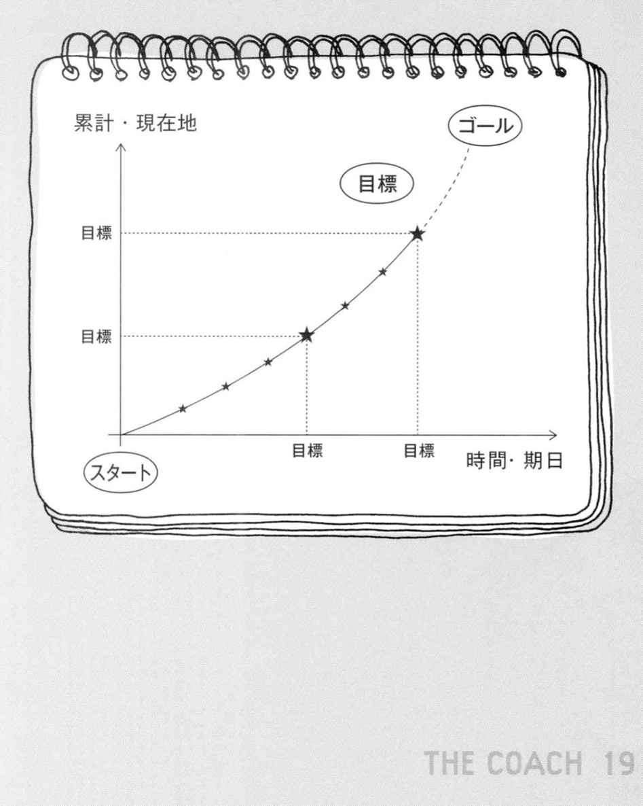

| ザ・コーチ | |
| 谷口 貴彦 | |
| プレジデント社 (2009) | |
この本は縦書きでレイアウトされています。
また、ご覧になる機種により、表示の差が認められることがあります。
ＣＯＮＴＥＮＴＳ
ザ・コーチ─最高の自分に出会える『目標の達人ノート』
人生の転機
会社を出る時、「絶対に契約とります！ 任せてください」なんて言わなきゃよかった。〈ちぇっ、課長に何て言い訳するか......〉
僕は、たった一時間前までは、契約してくれると信じて疑わなかったお客の玄関先で、形ばかりのお礼をしながら、頭の中ではすでに先のことを心配していた。
「誰か知り合いで家を建てる人がいたら星野さんに紹介しますよ」
〈だったら、今すぐ連れて来いよ！〉
心でそう毒づきながらも僕は、何とか作り笑いを保ち、お決まりの断り文句をありがたく頂戴した。
ほかのメーカーは、値引きをバンバンしてくるから敵うわけがない。値段を比べれば誰だって安い方がいいに決まってる。神戸で大地震があってからというもの、会社は耐震性を前面に出して、バンバン売ってこいと言うけれど、銀行が破たんするようなこのご時世に、誰だって背に腹は代えられない。上役はいいよ、事務所で正論を言ってりゃいいんだから、気楽なもんだ。
今月最初の契約を見込んでいたお客の家を後にして、僕は、道に停めておいた営業車に向かった。独り言をつぶやきながら車に近づくと、バックミラーに黄色いタグがぶら下がっていた。
「こんなところで駐禁やるかよ！」
口を開けば文句しか出てこない。駐禁のタグには、五分前に施錠した記録が汚い字で書いてあった。思わずタイヤを蹴飛ばした。鳩尾のところがギュッと締まって、喉の奥を苦い胃液が刺激した。
僕は車のドアを激しく閉めて、エンジンをかけるなり、一気にアクセルを吹かした。車は悲鳴を上げながら急発進した。
いくつかの黄色信号を加速で振り切り、しばらく走った後、コンビニの駐車場に車を停めた。鎮静剤代わりのタバコが切れていた。
月末や期末になると、日本中の営業マンが消費するタバコの量は、一気に増えると信じているサラリーマンは僕だけではないだろう。イライラした時のタバコは半分も吸わないうちにもみ消されるから、一箱が無くなるスピードはいつもの倍以上になる。
「やっぱり俺は営業に向いてないのかな......」
思い通りの成果が出ない時の言い訳に便利な言葉、「向いてない」。僕は、社会人になってから今日まで、この言葉をしょっちゅう口にしてきた。この言葉を口にすると、努力することから上手く逃げられるような気がして、精神的に楽だった。
〈課長、事務所にいるかな......。どっかで時間つぶしてから帰るか〉
成績が上がらない営業マンは、みんな時間つぶしの天才だ。これじゃ売れないのも無理はない、と頭ではわかってはいるのだが、すぐに僕の心と体は、休憩モードに突入した。
僕の名前は、星野雅彦。この住宅販売会社に入って五年目になる。その前は大手レストランチェーンのマネージャーだった。日本中がバブル経済の幻想に包まれていたその当時、外食産業は、急激に売り上げを伸ばしていた。現場では、二十四時間営業の店舗で、夢を抱いた若者が体を張ってそれを支えていた。
そもそも、僕が学校を出て最初に就職したのは、小さな旅行会社だった。その会社では、団体旅行の企画から営業、さらには添乗員や空港での送迎まで、何でもやった。給料は安かった。でも、旅行の企画や添乗は、それなりに楽しかった。
僕は空港の到着ロビーが大好きだった。そこには、愛する人たちの様々な再会のドラマがたくさんあった。それを眺めているだけで、幸せな気持ちになれた。
ちょうどその頃、成田空港の団体カウンターで知り合ったのが、妻の優子だ。彼女は航空会社のグランドスタッフで、団体旅行の受付が主な業務だった。
ある時、僕は、ヨーロッパからアンカレッジ経由で、熟年の女性グループに添乗して帰国した。いつもながら、団体旅行は、大人をわがままな子どもに変える魔力があった。そのツアーでは、その魔力がいつも以上に威力を増し、僕は普段より十倍疲れていた。
空港から乗った帰りのリムジンバスは、思いのほか混んでいた。僕はチケットの座席を確保して、一秒でも早くシートに体を投げ出したかった。自分の座席を見つけて、手荷物を網棚に乗せ、下を向いた僕は、先に隣の席に座っていた女性と目が合った。それが優子だった。
ひどくくたびれていた僕に彼女がくれた「おつかれさま」の六文字と満面の笑顔は、僕を秒殺するのに十分すぎた。その時から僕は、その声と笑顔を、一人占めしたい欲求を抑えることができなくなった。
その日を境に僕らの会話には、仕事上のやり取りのほかに、好きな食べ物や、これまで訪れた旅先の話といった、プライベートの話題が加わるようになった。
それから十年──。今自宅では、彼女と、僕たちが授かった娘が、僕の帰りを待っている。
なかなか成績が上がらない時、いつもあることについて考えてしまう。
僕は、これまで、けっこうやりたいことを実行してきた。しかし何をやっても、どこにいても、何か姿の見えない〝化け物〟を恐れているような、説明のできない不安に襲われることがあった。
旅行会社でも、レストランでも、今の仕事のセールスもそれなりに頑張ってきた。少なからずやりがいも感じた。でも、その一方で、うまくは言えないのだけれど、何かしっくりこない、違和感のような気持ちを包えながら生きてきた気がする。
いつも、森の中で道に迷っている子どものような、もう一人の自分が僕の中にいた。この気持ちは、時々現れてはいつの間にか消え、また忘れた頃に突然現われた。
僕の営業エリアは、高級住宅が立ち並ぶ都内の一等地。この地域で、家の建て替えを勧めたり、新築の住宅を売ったりするのが、今の仕事だ。商品としての住宅は、よく人生で最大の買い物と言われる通り、そんなにバンバン売れるものじゃない。だから、月に一軒でも売れたらトップセールスになれた。そして、トップセールスは、社内の誰からも特別扱いを受けるスターだった。僕はと言えば、いつも目標にあとちょっとという、いたって害のない存在で、トップセールスがイコール昇格という仕組みのこの世界で、立場は、課長の一歩手前の係長という、何とも中途半端な存在で止まっていた。この会社で、営業課長と係長では、天と地ほどの違いがある。
「さてと......」一人で営業している営業マンは独り言が多い。
僕は、ニコチンが毛細血管にまで浸み渡るように、タバコを大きく吸って、肺の中で、溜息と交換して車の外に吐き出した。そして、車を事務所とは反対の方角にある公園に向けて走らせた。
売れない営業マンは、必ずと言っていいほど、自分のさぼる場所を確保している。前にいた営業所では、繁華街に事務所があったので、さぼる場所は雀荘か漫画喫茶だった。この営業所に来てからは、ちょっと離れた所にあるファミレスか、住宅街の真ん中にある小さな公園になった。
僕は、公園の駐車場の奥から二列目に車を停めた。平日の駐車場は、どう見ても営業車という車が目についた。同類のドライバーたちは、お互いに干渉することなく、車の中で自分の世界に閉じこもっていた。僕は、車の中の淀んだ空気より少しは気晴らしになると思い、コンビニで買った缶コーヒーが入った袋を持って、車を降りた。三月の初めのこの時期は、春先とはいえ花冷えのする日がある。でも今日は、僕の心とは反対で、よく晴れて暖かかった。さっきの商談がまとまっていれば最高の天気なのに、空気がさわやかな分、かえって落ち込み方が激しい気がする。まあ、商談が決まっていれば、ここへは来ない。お客の家を出るなり、マッハのスピードで事務所に帰っていたはずだ。
毎日眺める景色なんて、その時の気持ちしだいで、別の風景になってしまうから不思議だ。
平日の公園は、休日のそれとはまったく別な顔を見せる。休日の公園は、若いパパとママと幼い子どもが、それぞれの家族ドラマを演じている。しかし平日は、年配者と独りで犬を連れた人が目につく。
この公園にはちょっとした池があって、ボート乗り場もある。休日は、カップルや親子でにぎわっているだろうに、平日は、ほとんどの船が艀に繋がれている。人が乗って、池を行きかう時には気づかないのに、繋がれているボートは色あせて、禿げたペンキがよく見えた。特に足こぎボートの白鳥は、どう見ても優雅というより、みじめだった。
僕はポケットに手を突っ込み、公園の少し奥まったところまで歩いて行った。平日の公園にはある法則があり、そこにいる人間たちは、お互いの距離を等間隔に保つように、ベンチに座る。そこには、お互いに干渉しないというルールがあるようだった。そして、僕もその暗黙のルールに従った。僕は、さっきの商談で、人間に向き合うことに力を使い果たしていた。
奥へ奥へと、引きこもるように静かな場所を探して行き、辺りを見渡した。すると、薄暗い木々の群れの中で、一カ所だけ木立から陽が差し込んでいる場所があった。その景色は、まるで暗転の舞台に注がれたスポットライトのようだ。そしてそのスポットライトは、木製の二つのベンチを照らしていた。
一つのベンチには、老紳士が、大きな犬を連れて座っていた。スポットライトに照らされたそこは、どこかで見た映画のワンシーンのようだ。老紳士は、手に持ったスケッチブックに、その先に広がる風景を描いていた。そして、ゆっくりと目の前の景色を眺めては、色鉛筆を走らせていた。その姿を、横で座っている犬が、お行儀よく見上げていた。
ほかを見渡しても、僕が望む場所は見当たらず、あきらめて、その隣のベンチに陣取ることにした。ベンチに近づくと、老紳士の顔がはっきり見えた。グレーの髪を後ろで結って、陽に焼けた顔からは、穏やかでありながら、若々しいエネルギーが伝わってくるようだった。日中の居場所に困って無理やり時間をつぶしているリタイヤーではないことは、すぐにわかった。しかし、老人に話しかけると、何かと自慢めいた話をしだして、暇つぶしの相手をさせられるものだ。今はとてもそんな気分じゃない。僕はなるべく目を合わせないように、隣のベンチにそっと腰を下ろした。
その老紳士は、スケッチブックに色をいくつか載せた後、横にいる犬に、ビスケットをやった。視線は先の景色から離さず、犬の頭を優しくなでた。それから持っていた色鉛筆を置くと、ベンチの上にあったポットに手をやった。老紳士が、ポットの中の飲み物を注ごうとした時、つかんだカップが、手から滑り落ちてしまった。カップは転がって、僕の靴の先に当たって止まった。
このカップを拾ったことが、僕の人生を大きく変える授業が始まるチャイムだったとは、この時の僕はまだ知る由もなかった。
人生の転機は、思いもかけないところから、まさに転がり込んできた。
「どうもありがとう」
老紳士は、カップを手渡した僕に、満面の笑みで礼を言った。
「いえ、どうも」
僕はちょっとはにかんで、手短に返した。
「よかったらいかがですか」
そう言って、老紳士は、カップをタオルで拭いて、僕に差し出した。
「......」
やはり今日は、ツイていない一日なのかもしれない。ひとり静かに時間をやり過ごすささやかな計画は、あきらめたほうがよさそうだ。
「私が出かける時はいつも、家内が、あったかいスープを持たせてくれるんですよ。身内のひいき目を差し引いても、けっこういけますよ。三月とはいえ、ずっと座っていると冷えてきますからね」
老紳士の笑顔は、断る理由を見つける努力をさせない力があった。それに、コンビニで買ってきた缶コーヒーは、商談に失敗した今の僕の胃袋には、少々刺激が強すぎる。
「どうも、じゃあ少しいただきます」
僕は、カップを受け取った。
老紳士は、さらに目尻のしわを深めて、嬉しそうに僕の手にあるカップに、スープを注いでくれた。
「どうぞ、旨いですよ」
「ありがとうございます」
僕は、手にしたカップに両手を添えて、澄んだスープを口に近づけた。最初に優しい香りが鼻腔に届き、少しその香りを楽しんでから、そっとスープを口に含んだ。口の中には懐かしいような、何とも言えない旨みが広がり、喉を通って胃に届くと、少し幸せな気分になった。
最後の一口を飲み終えた時、老紳士と隣の犬が、僕をずっと見つめていることに気づいて、ちょっと照れくさい気持ちになった。
「ふう、おいしかった。どうもありがとうございます」
「けっこう旨いでしょ、家内のスープ。このスープで、私は、家内に繋がれているようなもんですよ。こいつと一緒です」
老紳士は、笑いながらそう言うと、犬の頭をくしゃくしゃになでた。
不思議な感じがした。本当は、誰とも話したくなくて、この場所を選んだのに、目の前の老紳士に、妙に興味が湧き始めていた。どうしてそんな気になったのか、僕のいつもの癖で、理由を探した。しかし、僕はそれ以上探すことをやめた。これまでの僕は、誰かと関わる時にいつも、僕なりの理想の「僕」を演じていた。しかしここでは、そんな必要がないほど、なぜか自然な自分でいられた。
老紳士は、自分にもスープを注いだ。そして一息つくと、犬にビスケットを一つ食べさせて、また、くしゃくしゃに頭をなでた。さっきまで木漏れ日に照らされていたベンチは、木陰に変わっていた。
「少し冷えてきましたね。陽が当たっている時は暖かいのだけれど、陽がちょっとでも傾くと寒くなります。私は先に失礼します。それじゃ頑張ってください。お先に」
そう言うと老紳士は、スケッチブックと色鉛筆を片づけて、立ち上がった。僕もつられて立ち上がった。老紳士は、小さくお辞儀をして、力強い歩幅で歩きだした。その左横に、歩調を合わせて、長い毛並みをゆすりながら、犬が寄り添って歩いた。その後ろ姿をしばらく目で追っていた僕の視線に気づいたのか、老紳士は、振り返って、さっきと同じ笑顔で手を振った。僕は、思わず手を振り返そうとしている自分に驚いて、恥ずかしくなって、途中まで上げた右手のやり場に困った。
「さて、こうしていてもしょうがない。課長に怒られに行くか」
僕は顔を両手で二回軽くはたき、少し気合を入れ直してから、営業車へ向かった。
年度末の三月も三週間が過ぎ、営業マンの首の皮をつなぐ猶予は、残すところ一週間になった。営業マンにとって、年度末最後の一週間は、身も心も削って、ひたすらブルドーザーのように走り回る日が続く。事務所の中では、見えない針が、空気に無数に仕込まれているんじゃないかと思うほど、課長の視線を背中に感じまくった。
僕たち営業マンは、半ば強引にお客の自宅に押し掛けて、注文を迫った。この時の決まり文句は、「今月に決めてもらえば、特別な値引きができます。ぜひ、決めてください」だ。お客の立場で考えれば、強引に結婚を迫られるかぐや姫の心境だろう。ここぞとばかりに、無理難題を吹っかけてくる。そして、ほとんどの営業マンは、タイムオーバーを告げられ、心が折れるような空虚感に苛まれる。
僕はと言えば、何とか係長のメンツを保つ程度の注文は取ったが、僕が所属する営業二課の成績は、目標に大きく及ばず、北沢課長は、ずっと機嫌が悪かった。こんな時は、事務の女の子も課長と距離をとり、営業マンたちは、お客の所に行くと装って、いつもより早くそそくさと出かけた。
僕も、最後まであきらめないぞ、というそぶりだけは見せながら、急いで事務所を出た。とはいっても、今月に注文を見込めるお客もいないので、とりあえず、いつものファミレスに行くことにした。ちょうど今日は、毎週欠かさず読んでいる漫画雑誌の発売日だ。僕にとって火曜日は、読書の時間だった。
いつものコンビニで漫画とタバコを仕入れ、車に乗り込もうとした時、通りの反対側に、若い女性が、大きなゴールデンレトリバーを散歩させている姿が、目に入った。特に気にすることのない普通の風景。なのに、なぜか僕の脳みそは、その風景にロックオンした。僕は、車のドアノブに手をかけたまま、しばらく彼女と犬を視線で追った。その歩く姿は、スローモーションで少しずつ向きを変えた。次に、その姿が、完全に後ろ姿になったその時、犬の長い毛が、彼女の歩調に合わせてゆらゆらと左右に揺れた。そして、犬が、彼女に寄り添って見上げた瞬間、突然、記憶がフラッシュバックして、彼女の姿に、一人の老紳士の映像が重なった。
僕は、ドアノブに掛けていた手に力を込めて、車のドアを開けて乗り込み、ギアをドライブに入れ、ファミレスとは反対の方向に車を走らせた。向かう先には、桜のつぼみが膨らみ出した、あの公園があった。
あの人は、一週間前と同じ公園の同じベンチに座って、一週間前と同じように、スケッチブックに色鉛筆を走らせていた。そして、一週間前と同じように、時々犬にビスケットをやっては頭をくしゃくしゃになでていた。その場所は、一週間前と同じように、木漏れ日が差し込んでいた。僕の眼に映るその風景は、懐かしいような、何かが期待できるような、心がわくわくするような、不思議な世界を作り出していた。
僕は、しばらくその景色を遠目に見ていた。何と話しかけて隣のベンチに座っていいのかが、わからなかった。人に話しかけるのが専門である営業マンとしては情けない。
僕が、欅の木に手をついて、あれこれと考えていると、それまでお座りをして、老紳士の顔を見つめていた犬が、僕の存在を感じとり、振り向きながら立ち上がった。それを見た老紳士も、僕のことに気づいて立ち上がると、微笑みながらお辞儀をした。これ以上のチャンスはない。ここで一歩踏み出さなければ、男じゃない。僕は、極力自然な感じを意識して、ベンチに近づいた。しかし、人は自然にしようとすればするほど、不自然になる動物だ。自分でも、手足の運びがぎこちないのがよくわかる。営業マンにとって見た目は重要なのに、また情けなくなった。
「こんにちは、今日はだいぶ暖かいですね。先日はおいしいスープをありがとうございました」
僕は、老紳士に挨拶をした。
「確か先週でしたね。ここであなたにお会いしたのは」
老紳士は、陽に焼けた顔で、最高の微笑みを僕に向けてくれた。
「はい。ちょうど一週間前の火曜日でした」
最初の一言が出てしまえば、緊張はすっ飛んでいく。これも営業マンの特性だ。
「あの日も今日と同じような、穏やかな日でしたね。この季節は、木々が芽吹く前に、たくさんのエネルギーを蓄えている様子が、小さな変化から見て取れて素敵です。ここは桜の名所です。ほら、つぼみもだいぶ膨らんできたでしょう。季節の移り変りはいいですね。春夏秋冬を繰り返しながら、命を一回りずつ大きくしてくれます」
老紳士は、池に覆いかぶさるように枝を伸ばした桜を見上げて言った。
「そうですね」
同感だという意味の言葉を口にしながら、僕は、そんな風に世界を見たことがなかったことに寂しさを感じた。
「お仕事の途中ですか」
老紳士は、ベンチに腰を下ろしつつ、ポットに手をやった。
「はい」
僕は短く答えて、少し遅れて座った。
「よかったらいかがですか、家内のスープ」
「ありがとうございます。これ、最高です。実は、先日このスープをいただいてから、ファミレスのランチスープが、やけに貧相な味だとわかりました。奥さんに伝えてください、僕が飲んだ今までのスープの中で一番だと」
「どうもありがとう。伝えておきます。家内は、人のために料理を作るのが好きなんです。最近は、来客も少なくなったので、腕を振るう機会が少なくなって、寂しがっていましたから、喜びます。ところでどうですか、成績の方は？」
「えっ!?」
「たぶんお仕事は、何かのセールスではないかと思いまして、もしそうなら、今月は忙しいところが多いですからね」
老紳士は、自分にもスープを注ぎながら、池の先に視線を送った。
「どうしてわかるんですか......」
「私も、昔はセールスマンをしていました。そして、セールスに疲れると、休む場所を決めては、さぼってました」
そう言って、老紳士は声をあげて笑った。その笑い声がとっても無邪気で、僕もつられて微笑んだ。
「実は、住宅の営業をしています。バブルの頃は良かったのですが、最近は、なかなか売れなくて大変です」
「そうでしょう。セールスは毎日が勝負ですからね。時々は気休めも必要ですよ」
「これ、ごちそうさまでした」
僕はスープのお礼を言って、カップを老紳士に返した。そして、少し背筋を伸ばして、名刺を差し出した。
「星野雅彦さんですか、いいお名前ですね。おや、この名刺にはプロフィールも書かれてますね。昭和三十四年のお生まれですか、ということは、星野さんは三十六歳くらいですか」
「はい、今年で三十六になります」
「日本がとっても輝きだした時ですね。いい時代でした、昭和三十年代は」
老紳士は、噛みしめるように空を見上げた。空の先に、遠い昔を見ているようだった。
「あの？」
「これは、失礼。私も名乗らないといけないですね。私は、大蔵秀雄といいます。ちょっと前まである会社で働いていましたが、今はリタイアして、週に一、二度、こうして、こいつを連れてここに来ています」
僕は、老紳士の名前を聞いて、どこかで聞いた覚えのある名前だと思ったが、思い出せないでいた。
簡単な自己紹介の後、僕は、最近の業界のことや、営業という仕事がけっこう大変なことなど、他愛もない話をしばらくした。時折話が途切れると、僕はどうしても、大蔵秀雄の名前が気になった。そして、話が老紳士の趣味のバイクのことになった時、僕の記憶が一瞬にして繋がった。
「あっ、あなたはもしかして......大蔵建設の大蔵会長ですか」
僕はそう言うのと同時に、バイクにまたがった姿で、あるビジネス雑誌に載っていた、この人の顔を思い出した。そして、組んでいた足をほどいて、背筋を伸ばした。
老紳士は、否定も肯定もせずに、ただ微笑んでいた。
「すみません。失礼しました。何も知らずに、なれなれしい口をきいてしまいました。申し訳ありません」
人に対しての嗅覚が優れていなければならないはずの営業マンのくせに、油断した自分を悔いた。目の前にいるのは、明らかに自分とは次元の違う人だ。
「そんなにかしこまらないでください。仕事はとっくに引退しましたから、会長と言っても名ばかりです。せっかくお近づきになれたので、ここでは、肩書や経歴はなしにしましょう。その方がずっと親しくなれます」
老紳士は立ち上がると、いつの間にか直立不動になって固まっていた僕に、握手を求めた。
「こんなところでお会いできるなんて、とっても光栄です。大蔵会長のことは、雑誌や本でよく存じ上げています。戦後の苦しい時代に、一代で大蔵建設を作り上げ、今ではいろいろな援助活動をしたり、バイクで旅をしたり、飛行機を操縦したり、とにかく僕の憧れなんです。そんな大蔵会長とお話ができるなんて、夢みたいです」
「星野さん、会長と呼ぶのはやめにしてもらえませんか、どうも仕事をしているようで、堅苦しくなります。どうか大蔵と呼んでください。ここは誰もが平等で、同じように心豊かでいていい場所なのですから」
大蔵さんはそう言って、僕に座るように促し、自分もゆっくりと腰を下ろした。
そんな二人の光景を犬は不思議そうに首を傾けて、交互に見上げた。
「星野さん」
話のきっかけを失っている僕を察して、大蔵さんが声をかけてくれた。
「まだ少し時間はありますか。よかったら、もう少しお話を聞かせてください」
「ええ、大丈夫です。営業は、時間があってないようなものですから」
僕は言った後に後悔した。
「よかった。人から偉い人だとレッテルを貼られるのは、それはそれで結構窮屈なもんです。気楽に話もできません。別に偉い人なんていないのに、レッテルを張ると都合のいいことが多いんでしょうね。困ったものです」
大蔵さんは、本当に一代で大会社を築いてきたのだろうか、と疑いたくなるほど腰が低く、僕に対しての敬意さえ感じられた。きっと、こういう人を本当の意味での〝人物〟というのだと思った。
時折、春風が、池にさざ波と、光の反射を作り出した。
僕と大蔵さんは、時勢の話題から、それぞれの家族のことや、休日の過ごし方について話をした。他愛もない僕の話に、大蔵さんは、楽しそうに耳を傾けてくれた。そうこうするうちに、いつの間にか僕は、目の前のこの人物に、心を開いていた。
話が一段落ついた時、僕は、もっと大蔵さんのことが知りたくなった。一瞬だけ躊躇したが、僕は、思いきって願いを口にした。
「大蔵さん、ぜひ、大蔵さんが会社を興した頃のお話を聞かせていただけませんか」
大蔵さんは、少し照れたような表情をして、隣の犬の頭をやさしくなでた。そして、視線を目の前の池から、空にゆっくりと移しながら、まるで、昔の映像を懐かしく眺めるかのように話し出した。
僕たちが決して感じることのできない、この国の遠い過去。そこで、ひたすら一生懸命生きてきた人たち──。
大蔵さんは、当時の時代背景と、若かりし頃の自分のことを、話してくれた。
時間がゆっくり流れた。
気がつくと、周りの景色は、夕日を帯びて真っ赤に滲んでいた。
「いやーあ、楽しかったですよ。気軽に話すのは実に心地いい。星野さんに感謝します」
「僕の方こそ、貴重なお話を聞かせていただいて、本当に楽しかったです。もっともっと聞いていたかったです。あの、大蔵さん、また時々ここへお邪魔してもいいですか。もっといろいろと教えてほしいことや、お聞きしたいことがたくさんあります」
「もちろんですよ、星野さん。こちらこそお願いします。こいつは黙っているのは得意ですが、ちょっと物足りないところがあるんです」
そう言って、大蔵さんは、犬の頭をくしゃくしゃになでた。犬は嬉しそうに目を細めた。
この日をきっかけに、毎週火曜日、大蔵さんの〝個人授業〟が始まった。
目標の達人への道
営業マンにとって、恐怖の季節である年度末の三月は、激流のように、慌ただしく過ぎていった。
そして四月になり、人事異動が発表された。
僕はと言えば、特に昇格も異動もなく、相変わらず営業二課の係長で、北沢課長もそのまま僕の目の前に座っている。
北沢課長は、昭和二十年代最後の年の生まれで、僕より五つ年上の上司だ。営業マン時代は、押しと理詰めでトップセールスマンになり、生え抜きの同期の中でも、最短で昇進した人だ。学生運動が盛んだった激動の時代に、青春時代を過ごしたことが、北沢課長の価値観に大きく影響していることは、何度か飲んだ時の話で知っていた。
今年は、営業部長も異動はなく、いつも僕によくしてくれる藤島部長のままで、少しほっとした。藤島部長は、よく言う団塊の世代。聞くところによると、藤島部長は、仏の藤島と言われるくらい、聞き上手の営業マンだったらしく、特に年配のお客さんからは、絶大な人気を得ていたらしい。僕は苦手な北沢課長より、藤島部長に何でも相談した。
三月末で、力を使い果たした営業マンにとって、四月の初めは、開店休業状態で、エンジンがかかりだすのは、中旬を過ぎたあたりからになる。実際、僕もその通りで、しばらくは、外回りに行くと言って、お決まりの場所で時間をつぶした。
しかし、僕は大蔵さんと出会ったことで、これまでとは違った気分で、四月を迎えていた。
四月最初の火曜の午後、僕はいつもの公園に向かった。先週より、幾分か明るさが増した木漏れ日の下、いつものベンチに、大蔵さんの姿があった。僕は躊躇することなく、大股歩きで近づいた。
「こんにちは」
「こんにちは、星野さん。おや、何かいいことがありましたか。いい顔していますよ」
「大蔵さんにまたお会いできるので、それが顔に出てるんじゃないですか」
「さすがトップセールスマン、お上手ですね」
「お世辞じゃありません」
「これは失礼しました」
僕たちは笑いながら、ベンチに腰を下ろした。目の前の桜の木には、この一週間で満開になった桜の花が、風に揺れていた。
「桜がきれいですね」
「はい......」
「桜が、人々の注目を集めるのは、一年でこの一瞬だけです。しかし、桜はこの一瞬のために、一年の間成長を続けるのです。私たちは誰もその間、桜が頑張っているのを、見ようとしません。人も同じです。私たちが成功者に注目するのは、桜と同じで、成功の瞬間だけです。その陰にどれだけの努力があるか、その地道な過程を見ることはありません。本当は、その成功までの過程に学ぶべき点があって、計り知れない価値があるのに......。おっと、いけません。年をとると独り言が多くなります」
「いえ、とってもいいお話です。営業も同じです。みんな結果が出た時だけ見て、結果に至る過程が、どれだけ大変か見ていないことが多いです」
僕は、それが、まさに自分のことであることに気づいていた。
「ところで、星野さんは、どうして今のお仕事を選んだのですか？」
いつものように大蔵さんは、温かいスープをポットのカップに注ぎ、それを僕に手渡しながら訊いた。
「ありがとうございます」
僕は、カップを受け取り、スープを一口含んでから、今の会社に入った経緯や、営業でのエピソードを話した。
さらに、大蔵さんに促されるように、この仕事に就く前に、いくつか仕事を変わったことや、子どもの頃、模型飛行機が好きでよく河原に飛ばしに行ったことなどを思い出しながら、とりとめもなく話した。
「そうですか、いろいろと苦労されたんですね」
「いえ、大蔵さんのご苦労に比べたら、僕のは苦労なんかじゃないです」
僕はそう言いながら、自分の中の〝甘え〟が、いかに大きかったかを自覚した。
「星野さんの生い立ちや、これまでの話を聞いていると、根底に流れる星野さんの価値観のようなものを感じます。ところで、星野さんが仕事をする上で、一番大切にしていることは何ですか？」
大蔵さんは、僕の顔を覗き込むようにしながら訊いてきた。答えははっきりしているはずなのに、うまく言葉が見つからないもどかしさを感じて、僕は、考えるふりをした。
「そう難しく考えないでください。きっと何かあるのでしょうから、見つかったら教えてくださいね」
大蔵さんは、僕の心が読めるようだった。だからといって、見透かされているような、変な不安はなかった。むしろ、わかってもらえているような、安心感を抱くことができた。
「では、星野さんの夢って何ですか？」
「夢ですか......」
そう言いかけて、僕は、夢という言葉すら最近は口にしていないことに気づいた。いったい自分の夢って何だろう──僕は、半ば思いつきで話し出した。
「......そうですね。せっかくこういう業界にいることですし、いつかはマイホームを持ちたいです。今は２ＤＫのアパート暮らしなんです」
「それは素晴らしい。いつか絶対に叶いますよ。叶うと信じて行動し続ければ」
「大蔵さんは、どんな夢を持っていらっしゃるのですか？」
「星野さん、もう少しざっくばらんに話してください。その方が、私も気楽に話ができます」
「すみません。じゃ、お言葉に甘えて、そうさせていただきます」
「私の夢は、世界中の子どもたちが、存分に学べる学校をたくさん建てることです。私が幼かった時は、戦時中で、思ったことや望んだことが、自由にできない時代でした。私は、本を読むのが好きだったのですが、それさえ、ままならぬ時代でした。そんな経験が、今の私の夢の源になっているのかもしれませんが、世界中には、まだまだ学びたくても、いろいろな事情でそれが叶わない子どもたちが大勢います。子どもは、未来の可能性に満ちています。その子どもたちの可能性が花開く場を、できる限りたくさんつくってあげたいのです」
僕は、大蔵さんの話を聞いているうちに、何だか自分の夢が、やけに小さいものに思えてきた。そして大蔵さんに訊きたくなった。
「大蔵さん、私は、大蔵さんのお話がとっても好きです。私もいつかは、大蔵さんのようになりたいと思っています。どうしたら大蔵さんのようになれるか、教えていただけませんか？」
「星野さん、星野さんは星野さんです。決して私ではありません。だから、私のようになろうとするのはやめてください。人は、他の誰かに憧れて、同じようになろうとすると、その人にあって、自分にないものばかり見てしまいます。それで、結局は、そんな自分を否定することになります。私や他の人にはない、星野さんだけが持っているものがたくさんあるはずです。だから、ほかの誰かになるのではなく、より自分らしくなると決めてください。しかし、星野さんが、私が自分の夢を叶えてきたように、自分の夢を叶える方法を知りたいと言うのなら、喜んでお教えします。いかがですか？」
「わかりました。ぜひ、お願いします」
「では、これから、ますます季節もよくなりますから、毎週火曜日の午後、この場所でお話ししましょう。星野さん、時間は取れますか？」
「もちろん大丈夫です。何がなんでもここへ来ます。よろしくお願いします」
「それと、ひとつだけお断りしておきたいのですが」
大蔵さんは、僕の目を真っ直ぐに見つめて言った。
「私が、何でも全て教えるわけにはいきません。星野さんが自ら考えて、答えを、あなたの人生の中から見つける必要があります。自分で見つけた答えと、人から与えられた答えとでは、その人の知恵になる確率が違います。安易に手に入れたことより、汗水流して手にしたことの方が、大切で愛おしいでしょ」
大蔵さんの表情は、今までの穏やかなものとは、明らかに違っていた。その眼力は、一瞬で僕の心に、決意と覚悟を抱かせた。これが、偉大なリーダーが持っている気迫なのだろうか。ちょっと身震いがした。
「では、星野さん。私が成功した一番の要因は、何だと思いますか？ ちょっと推測してみてください」
僕は、これまで、少なからず成功本やビジネス雑誌を読んできた。どうしたら成功するか、人に話すくらいの知識はそれなりにある。しかし、実際に自らの力で成功した人を目の前にすると、迫力に押されて言葉に詰まった。と言うより、恐れたと言った方が適切かもしれない。スポーツや、絵画や芸術でもそうだが、バーチャルとリアルでは、伝わってくる迫力が違う。人も、知識だけの人と実践してきた人とでは、こんなに違うものなのかと、正直ビビってしまいそうだった。しかし、ここで答えないとその先がないような気がして、何とか僕なりの答えを絞り出した。しかしそれは、ぎこちなさの拭えないものだった。
「......さっきのお話から想像すると、夢を持ち続けたことでしょうか」
大蔵さんは、僕の答えを聞きながらしばらく微笑んで、ゆっくりと口を開いた。
「それも要因です。しかし、夢は持っているだけでは、いつまでも夢のままです。夢を夢で終わらせないためには、夢に向かって一歩踏み出し、歩き続けることです。そのために必要な人生の技が、【目標の達人】になることです」
「目標の達人、ですか......」
僕は、もっとすごい何かがあるのかと思っていたので、正直、ちょっと気抜けした。目標なんて、嫌というほど聞かされている言葉だ。ある意味、営業マンは数字との戦いの中で生きているので、目標を持てとはよく言われる。しかし、うまくいった試しがない。目標が〝人生の技〟だなんて、本当なのだろうか。僕は、思い切って言った。
「大蔵さん、目標は確かに重要だと思います。しかし、正直それが一番の要因だとは思えません。なぜなら、僕たち営業マンは、毎日その目標を目指して頑張っていますが、幸せそうな顔をしている営業マンは少ないからです」
思わず本音を言ってしまい、僕は少し後悔した。しかし、大蔵さんは、僕の答えを予想していたかのように、驚きもせずに続けた。
「星野さん、確かに、目標を掲げる人は多いです。しかし、本当の意味で目標を活かしきっている人は、少ないと思います。私たちは、小さい頃から目標を設定することが大切だと聞かされてはきましたが、そもそも、目標とは何かについての学習をしたことがありますか？ 学校では、目標について何も教えてはくれません。それでいて、大事だと言われるのですから、誰もが混乱するのは当然です。
私が、まずお伝えしたいのは、目標についての本当の知識と活用方法についてです。次に、実際に成功するために、行動を継続していく習慣です。それらを身につけて初めて、目標を活用する達人になることができ、幸せを手にできるのです。どうですか、興味ありますか？」
「はい。確かに、目標について、自分は、あまりにあやふやなことしか知らないと思いました。僕は、目標の達人になりたいです。ぜひ、教えてください」
僕は覚悟を決めた。実践してきた人の言葉を信じることにした。
大蔵さんは、そんな僕の決意を感じ取ったのか、大きくうなずくと、持っていたスケッチブックを一枚めくった。そして、その真っ白な紙に、大きな輪を三つ重なるように描き、それぞれの中に【知識】【道具】【能力】と書き込んだ。

「星野さん、世の中で何らかの達人になる人は、この三つのことを真剣に考え、優先して取り組みます。日々、達人になりたいと思う事柄についての知識を増やし、道具を整え、能力を強化するのです。目標についても同じです。だから、星野さんが目標の達人になるために、最初は、一緒に目標についての知識を増やしていきましょう」
「はい、よろしくお願いします」
「では、星野さん。あらためて伺いますが、目標とは何でしょうか？」
大蔵さんは、この時間を心から楽しんでいるように、無邪気な顔を見せて言った。
「目標ですか、それは......」あらためて尋ねられると、なかなかうまく説明できない。そんな僕を見て、大蔵さんは嬉しそうに笑うと、三つの輪が描かれたスケッチブックをまた一枚めくり、今度は、【目標】【目的】【夢】【ゴール】【ビジョン】と書いた。
「では、星野さん。宿題です。次の火曜日までに、この五つの言葉について周りの人たちに、どんな意味か、どのようにこの言葉をとらえているかを訊いてきてください。五人以上の人に訊いたら、最後は辞書で調べてみてください。きっと何かがわかると思いますよ」
そう言うと大蔵さんは、今日の授業で使った二枚の画用紙を切り取って、僕に手渡した。
「はい、わかりました。ありがとうございます」
僕は、その二枚の画用紙を、折り目がつかないように気をつけながら軽くたたみ、鞄にしまった。
大蔵さんは、授業の間中ずっと、大人しく待っていた犬の頭をなでながら立ち上がった。
「星野さん、では来週の火曜日にここでお待ちしています」
「はい、よろしくお願いします」
大蔵さんは会釈をして、スケッチブックとポットを持って歩き出した。その横を犬がぴたりと寄り添って歩く。僕がその後ろ姿を見送っていると、大蔵さんと犬が立ち止って振り向いた。そして、僕に向かって手を振ってくれた。僕は深々と頭を下げた。
大蔵さんの姿が木立の陰に消えるのを待って、僕はベンチに深く座り直した。そして、大蔵さんがくれた紙を鞄から取り出した。
目に映る目標、目的、夢、ゴール、ビジョンの文字はどれも、いつも普通に使っている言葉なのに、いざ意味を問われると、どれもはっきりと答えられないことに驚いた。
僕は、誰にこの言葉の意味を訊こうか、しばらく考えた。北沢課長や、何人かの仕事の仲間、そして優子の顔が浮かんだ。
桜の花びらが一枚、白い紙の上に舞い降りた。
僕は、画用紙を鞄に戻して立ち上がり、足早に車に向かった。
「おい、村田。昼飯一緒に行かないか」
「何だ、星野か。この時間に会社にいるなんて珍しいな。営業さんは、いつも外で豪勢なランチじゃないのか」
「営業だって事務作業や何やらで、苦手な書類を書く日だってあるんだよ。いいから付き合えよ」
翌日僕は、会社で同僚の村田を昼食に誘った。
村田は僕と同じ時期に、やはり中途でこの会社に移ってきた。前はゼネコンの現場監督だったそうだが、土木の監督は現場につきっきりで、ほとんど家に帰れないことに嫌気がさし、この住宅会社に転職してきた。
村田とは歳が近いこともあって、よく飲みに行く間柄だった。この会社で、僕が唯一心を許せる人間でもあった。
「目標の意味!? ......何で急にそんなこと訊くんだ？」
村田は、食後のコーヒーを飲み干して、ウェイトレスにお代わりを促しながら訊き返してきた。
「ちょっと訳ありでね。それはともかくとして、村田は、目標ってどんな意味で理解しているんだよ」
「そうだな......そりゃ、目標がなくちゃ仕事にならないだろう。特にお前たち営業は、毎月、目標を達成するのが仕事だろう。だから、目標とは、ある時までにしなくちゃならないことだな」
確かに村田の言う通りだと思ったが、なぜかしっくりこない。
「じゃ、夢って何だ？」
「何だそれ。そりゃ夢は......夢は夢だよ」
「それじゃ、答えになってないだろう。じゃ、ビジョンって何だ？」
「ちょ、ちょっと待てよ、星野。お前また、変なセミナーかなんかに行って、吹き込まれてきたんじゃないか。ビジョンとか夢とか、目標とか言って──」
「わかった。ほかの奴にも訊いてみるよ、サンキュー！ ここは俺のおごり。だから、今度飲みに行った時は、お前がおごれよ」
「何だそれ!? それじゃ俺の方が損だろう」
唖然とした村田を残したまま支払いを済ませると、僕は急いで店を出た。そして、次は誰に訊こうか歩きながら考え、事務所に北沢課長と藤島部長がいたことを思い出した。ここはまず、話しやすい藤島部長に先に聞いてみよう。北沢課長との会話は、想像しただけで、今食べたランチの消化に悪い気がした。
数日が過ぎ、その間僕は、何人かにそれぞれの意味を尋ねた。そして、最後に妻の優子に訊いて、大蔵さんからの宿題は、ぎりぎりで間に合った。
大蔵さんに報告する前日、久しぶりに本棚から辞書を取り出して、五つの言葉、【目標】【目的】【夢】【ゴール】【ビジョン】について調べた。辞書で意味を調べるなんていつ以来だろう。思いだすことさえできなかった。それは、いかに自分が、言葉に関心を持たずに今日まで生きてきたのかを物語っていた。
僕も含めて、これまでに聞いた五人とも、答えはいまいちピントがずれていたり、とらえ方が曖昧だった。
特に北沢課長の回答には、反論する元気もなくなった。北沢課長に言わせれば、目標とはノルマで、それを達成するかどうかで給料が決まるものらしい。それを聞いたとたん、心の中で「ごもっとも」と、半ばあきれて言い返す言葉もなかった。これじゃいつまでたってもこの人とは平行線のままだと、妙に納得した。
翌日の火曜日、大蔵さんは、いつもの公園のいつものベンチに、いつもと同じように座っていた。先週は、あんなに華やかな姿を見せてくれていた桜も、今日は、残り香のように、所々にピンクの衣装を纏っているだけだった。
「大蔵さん、こんにちは」
僕は、日差しが反射する池に沿って、大蔵さんの所に歩いて行った。振り向いた大蔵さんの笑顔は、それだけで僕を明るい気持ちにさせた。
「こんにちは、星野さん。おや、今日はまた一段と晴れやかな顔していますよ」
「そうですか、特に契約が取れたとか、そんなことはないんですが、きっと大蔵さんとまた、こうやってお話ができるからですよ」
「星野さんはお上手ですね。そう言われると嬉しいです」
僕は大蔵さんに褒められて、少し照れながらベンチの隣に腰を下ろした。
「桜がだいぶ散りましたね。少しずつですが、桜も来年のために準備を始めているのですね、来年咲かせる花の栄養を得るために、葉を広げ出しました。新たな葉を広げるためには、まず、今ある花の茎を落として、葉が出るスペースを空けてあげる必要があります。人間も自然の一部ですから同じで、新しい習慣や考え方や能力を身につけるには、勇気を持って不要になったものを手放す必要があります」
大蔵さんは、桜の木を見上げてつぶやいた。
僕は、大蔵さんの何気ない言葉に、どんどん引き込まれていった。隣に座っている犬が、「同感だ」とでも言うように、「ワン！」と吠えた。
「あれ、大蔵さん。ポットが大きくなってますね」
「そうなんですよ。家内に、あなたがスープの味を褒めてたと話したら、この通り、大盛りを持たされました」
大蔵さんは、いつもより一回り大きいカップを僕に渡して笑った。それを見ていた犬が、「ありがたくいただけよ」とでも言うように、また「ワン」と吠えた。
そう言えば僕は、この助手の名前をまだ知らなかった。
「大蔵さん、この優秀な助手の名前は何と言うんですか？」
「確かにこいつは優秀な助手ですね。バッグと言います」
「ワン！」
バッグが「よろしく」と吠えた。
「バッグですか、名前の由来はなんですか？」
「単純なんですが、この子が生まれて間もなく我が家に来た時、トートバッグに入れられて来たので、そのままバッグになりました」
「いい名前ですね、何だかバッグという感じです。バッグ、これからよろしくな！」
僕はバッグの頭をくしゃくしゃになでて、親愛を示した。バッグは、ちょっとうっとうしそうにしたが、僕を受け入れてくれたようだ。そして、「ちゃんと勉強しろよ」とでも言うように、「ワン」と吠えた。
「さて、星野さん。一息ついたところで、本題に入りましょうか」
「お願いします」
「では最初に、五人の人に、【目標】【目的】【夢】【ゴール】【ビジョン】について訊いてみた感想を聞かせてください。それぞれの人たちの解釈を聞いて、いかがでしたか？」
「いろいろな発見がありました。仕事仲間と、上司や妻にも訊いてみたんですが、みんな解釈が違いました。それに、みんな意味のとらえ方が、けっこう曖昧でした。言葉って難しいですね」
「そうですか、それは発見ですね。私たちは、経験したことや知り得たことを、言葉に変換して記憶しています。そのやり方が、あまりにもいい加減で曖昧だということは、脳に蓄積されたせっかくの宝も、いい加減で曖昧な状態でたまっている、ということになります。つまり、いつでも適切に活用できるような整理整頓が、できていないということです。見出しが適当に付けられた資料が散らばったままの部屋や机の状態と一緒です。それでは、効率も悪いし、なかなか成果も出にくいでしょう。
人は、より力を発揮するために、他の人と関わり合います。誰かと言葉を使って意志の疎通を図ろうとする時、同じ言葉の解釈が違っていては、伝えたいことが、相手に伝わらなかったり、誤解されて信頼を失ったりしてしまいます。人と人が関わり合って何かを成すためには、前提として、お互いが使う言葉が、同じ理解の下で交わされているかどうかが、とても重要になります」
大蔵さんの話から、お客との行き違いによって味わった苦い経験や、妻との行き違いの場面がいくつも思い出され、思わず僕は苦笑いをした。
「大蔵さんが言ったように、課長と私とでは、目標の意味合いのとらえ方が大きくずれていました。それが、課長となかなかうまくいかない理由の一つだと思います」
「星野さん、素晴らしい。現状を引き起こしている原因がわかれば、対応は可能になります。これからは、課長さんとまず、言葉のすり合わせから始めたらいいですね」
「では、星野さんに目標の達人になってもらうために、私と星野さんで、これから使う言葉の解釈を一致させていきましょう。目標の達人が使う【目標】【目的】【夢】【ゴール】【ビジョン】の言葉を、辞書で調べてみましたか？」
「はい、調べてみました。言葉を辞書で調べるなんて何年かぶりで、結構新鮮でした」
「それで、それぞれの意味を調べてみて、どんなことに気づきました？」
「一番驚いたのが目標の意味です。目標とは、〈目的を達成するために設けた目当て〉とありました。つまり、目標はあくまで、目的に向けての目印でしかないということです。
それに対して、目的の意味は、〈成し遂げようと目指す事柄〉でした。
この目標と目的の意味をあらためて調べて、目的を実現するために目標を定め、それに向かって行動するのだということに気づきました。つまり、目標は、目的の実現のために設定されるものということです。それなのに、僕も含め多くの人が、いつの間にか、目的がどこかへ行ってしまって、目標だけが一人歩きをしています」
「星野さん、私も同感です」
「大蔵さん、こうやって意味がわかって思ったことなのですが、本当に大切なのは、目標よりも目的の方ではないですか」
「素晴らしい。私も四十代の時に同じように考えました。それまでは、会社で何がなんでも目標を達成しろと怒鳴っていました。『今期の売上は、十億を絶対達成だ』とかね。しかし、日に日に社員が疲弊していくんです。どうしてかと悩んだ時に、この考え方にたどり着きました。それからは、社員や下請けの人たちの前や、公の場で、目標について話をする時は、必ず何のために、という目的を強調するようにしました。すると面白いことに、みんながだんだんと目的を意識するようになり、それにつれて、自然と仕事へのやる気も高まっていったのです」
「そうなんです。僕も会社から、営業の目標をいくらしつこく言われても、何だかやる気が湧いてこないのは、この『何のために』の目的が抜けていたからだと思うんです」
「そうですか。では、星野さんが営業する目的も、後で明確にしましょう。さて、残りの言葉についてはいかがでしたか。意味を調べて何か気づいたことはありましたか？」
「はい、いろいろと発見がありました。たとえばゴールですが、僕は目標と同じ意味だと思っていました。でも、いざ実際に調べてみると、〈競技などで、着順の決まる一番最後の地点・決勝点〉とありました。つまり、目的のための最終的な目印がゴールで、そのゴールまでの途中の目安や、通過点として置くのが目標なんですね」
「星野さんは優秀な生徒です。私がそれを理解したのは、もっと年を取ってからでした。そうです。この目的、ゴール、目標の関係性を理解して、区別しながら、自分の人生の様々な場面で設定することが大事です。
では、ちょっとクイズというか、問題を出しましょう。あるマラソン選手が次にあげた事柄は、目的、ゴール、目標のうちのどれだと思いますか？」
そう言うと、大蔵さんはスケッチブックにいくつかの項目を書いた。
Ａ 次のオリンピックで金メダルを取る
Ｂ 十キロのタイムを三カ月であと三分短縮する
Ｃ 自分が可能性に挑戦することで、子どもたちに夢を持つことの素晴らしさを伝えたい
Ｄ 今月、合計五百キロを走り込む
Ｅ 今年の選考レースで優勝する
Ｆ 脚力を十パーセント強化する
Ｇ 誰よりも速く走って〝風〟になる
大蔵さんから、スケッチブックの画用紙を渡された僕は、それぞれの項目を眺めた。並べられた順番に落ち着いて読んでいくと、何となく違いが見えてきた。
「えーと......Ｃの〈自分が可能性に挑戦することで、子どもたちに夢を持つことの素晴らしさを伝えたい〉と、Ｇの〈誰よりも速く走って〝風〟になる〉が目的ですか」
「その通りです。では、ゴールと目標はどうですか？」
「ならば、Ａの〈今度のオリンピックで金メダルを取る〉と、Ｅの〈今年の選考レースで優勝する〉がゴールで、Ｂの〈十キロのタイムを三カ月であと三分短縮する〉と、Ｄの〈今月、合計五百キロを走り込む〉と、Ｆの〈脚力を十パーセント強化する〉が目標だと思います」
「素晴らしい！ その通りです。どうですか、目的とゴールと目標を区別してどんなことに気づきました？」
「まさに今そのことを考えていました。まだ何となくですが、それぞれが単体では、結果としていまいちの感じです。目標だけだと、何となく虚しいような気がするし、目的だけだと、いつまでも形にならないただの願望で終わりそうだし、ゴールだけだと、重たく苦しくなる感じがします......」
「星野さんの感性は鋭いですね。出来事や物事から受ける感覚を、感情に結びつける力がありますね」
「ありがとうございます」
「ほかにはどうですか？」
「そうですね。あくまでもイメージですが、目的が一番上にあって、そこから下にゴール目標と降りてくる感じがします」
「イメージに変換する力も、星野さんの強みですね。素晴らしい。すべての山の頂は、その下にある無数の砂粒の上にあります。山の頂に行き着くために必要なのは、絶対的な意図、根本的な理由、真実の動機です。
だから、このマラソン選手の場合は、ただオリンピックで金メダルを取ると言うのではなく、目的とゴールをセットにした言葉を自分に聞かせればいいんです。『私は、自分が可能性に挑戦することで、子どもたちに夢を持つことの素晴らしさを伝えたいんです。そのために、次のオリンピックで金メダルに挑戦します。だから毎日努力して、今年の選考レースで優勝します』とね。そして、具体的で確実な一つの行動を、目標という指標を立てながら続ける。これが、効果的にゴールや目標を活用する方法です」
「少しわかってきたような気がします。この目的、ゴール、目標の三つがそろって初めて、目標を立てることの効果が生まれるんですね。そっか......」
「星野さん、腑に落ちたようですね。では先に進みましょう」
「はい、お願いします」
「では、残りの二つの意味を調べて、どんな発見がありました？」
「まず【夢】ですが、当たり前すぎて、今日まで意味なんて調べたことはありませんでした。でも、これが面白かったです。
夢の意味には、〈現実とかけ離れた考え〉とか、〈実現の可能性のない空想〉とありました。しかし、私が一番しっくりきたのが、〈将来実現させたいと、心の中に思い描いている願い〉──これです。この意味を知って、何だかすごく気楽になりました。今日まで、私が抱いていた夢のイメージは、立派な計画とか、壮大な考えのようなものでした。だから、夢は大きく素晴らしいものじゃなくちゃいけない、といった考えに囚われていた気がします」
「そうなんです。今の若い人は、夢がないとよく言われますが、それは子どもの時、純粋に叶えたい夢を大人に話すと、もっとちゃんとした夢を持てとか、そんな考えで通用するわけがないとか、馬鹿なこと言ってるんじゃないとか、否定や批判をたくさん受けて、それが夢を語ることに対する恐れとか、嫌な気分を味わったといった、トラウマになっているのでしょうね。そして、星野さんのように、夢はこうあるべきといった、あまり合理的でない信念を持ってしまったのでしょう」
「私もそう思います。私もいつの間にか、夢を人に話すことを、躊躇するようになりました」
「夢は、誰かと比較して優劣を決めるものではありません。その人が、今この瞬間から先の未来を思って、心から叶えたいと願うこと、純粋に実現したいと思うシンプルなことでいいんです。だって、貧しい国の子どもたちの夢は、お腹いっぱい食べることですよ。
星野さん、どんな些細なことでも、あなたが願っていることは、どれも素敵な夢です。あなたの心は、何を叶えたいと願っていますか？」
「どんなことでもいいなら、いっぱいあります。家族のために家を建てたいですし、妻とヨーロッパへ列車の旅もしたいです。子どもたちに、もっともっと世界を見せて、いろいろな体験を積ませてあげたいですし、いつかは妻と二人で、青い海のそばで暮したいです。あと、一度でいいので、最高級の松坂牛のステーキが食べたいです」
「どれも素敵ですね。では星野さん、次回までに、〝死ぬまでに叶えたいドリームリスト１００〟を作ってください。ポイントは、願望を書くことです。ドリームリストを作ろうとする場合、目標を書かなければならないと決めつけてしまって、書けずに苦しんでしまう人がいます。しかし、夢は目標ではありません。あくまでも願望なので、叶ったら儲けもんぐらいの気軽さで、ちょうどいいんです。
百個の夢を書き出したら、そのドリームリストをいつも眺めてください。そのうち、その中から何がなんでも実現したいと思うことが出てきます。そうしたら、その夢に日付をつけてゴールとし、目的と目標を決めて、行動を始めればいのです。
目標の達人になる第一歩は、自由に夢を描き、語る習慣をつけることです。そして、その夢を束ねて見つめ続けると、あなたの価値観に沿う目的が見えてくるのです」
「わかりました。ドリームリスト、書き出してみます。何だかワクワクしてきました」
「星野さん、気づいていますか？ 言葉の解釈や、理解の仕方を修正して再認識するだけで、純粋さが増すでしょう」
「そうですね。不思議です。どれだけ自分勝手な解釈で、今まで自分を苦しめていたかと思うと、恐ろしいです」
「さて、では最後の言葉の意味をはっきりさせましょう。星野さん、【ビジョン】はどんな意味でした？」
「これも、わかっているようでわかっていませんでした。ビジョンを調べてしっくりきた意味が、〈将来あるべき姿を描いたもの〉〈将来の構想〉〈未来像、その光景〉です。つまり、自分自身や家族、チームや会社の将来の理想像や未来の光景がビジョンですよね。何でうちの会社のビジョンがいまいちなのかわかりました。すごく抽象的で、概念的で、まったくイメージが湧かないんです」
「星野さん、その通りです。ビジョンは鮮明でありありとしていて、その光景を頭の中で見るだけで、嬉しいとか、楽しいとか、ドキドキワクワクするとかといった感情が湧くものでなくてはなりません。目標の達人たちは、そういうビジョンをいつも描いて想像しては、自分のエネルギーにしています。ある意味、ビジョンはゴールに向けて行動するための強化剤です。
人がゴールを手にした瞬間に見る光景、それを今想像する。そして、そのインパクトの瞬間に得られる感情を今味わう。それがビジョンです。拒むことが耐え難いほどの魅力ある感覚です。ゴールを手にしたいと思うことは、その瞬間に得られる感情を味わいたいからです。人は物質的な報酬をどれほど得ても、それだけでは幸福ではありません。それを手にした時の感情こそが、幸せの源泉なのです。
ビジョンを描く時のポイントですが、どうも人は、イメージを記憶できないらしいのです。だから、ビジョンはちょくちょく描く必要があります。一度描いただけでは、時間の経過と共に、効果がどんどんなくなります。できれば毎日、毎週、毎月、毎年、ビジョンを描いて想像し続けてください。
そして最後に、ビジョンを描いて幸せを感じる感情は、人それぞれ違うということも覚えておいてください。たとえば達成感という感情が、すべての人に幸せを感じさせるとは限りません。人によっては安心感だったり、優越感だったり、完璧感に幸せを感じるのです。この〝感情〟については、いずれもっと詳しくお話ししましょう」
大蔵さんの説明を聞きながら、僕はすごい知恵を授かっている感じがして、身震いした。何となくわかっていたつもりでいたことを、本当の意味で深く理解でき、それが腑に落ちる感覚を知った。そんな僕の心を読み取ったのか、大蔵さんが言った。
「星野さん、知り得たことやわかったことは、一度自分の言葉でアウトプットしないと、知恵にはなりません。だから、星野さんなりの言葉でいいので、今日の内容を、この場で私に話してください」
「はい......でも、緊張しますね」
「ね。聞いただけの時と、それを自分の言葉にして話す時では、自分の中の意識がまったく違うでしょう。それがいいんです」
「はい、わかりました。え～と、まず目標の達人になるためには、どんな些細なことでもいいので、自由に【夢】や願望をリストアップする。そして、その夢の中から、本当に心から実現したい夢をいくつか選んで、どうしてそれを手にしたいのか、いつまでにどんな状態になりたいのかといった【目的】や【ゴール】をはっきりさせる。
次に、そのゴールを手にするために、具体的な目印や通過点といった【目標】を設定する。
え～と、それから......さらにゴールに向かう行動を促進するために、ゴールを手にした瞬間の【ビジョン】や、上手くいった時のイメージを、繰り返し心の中で描く。
そして、目的やゴールを手にした時のどんな感情に自分が惹きつけられるのかを明確にしておく。こんな感じでしょうか......」
「そうです。まさに今、星野さんが言ったことが、夢、目的、ゴール、目標、ビジョンの活用方法です。そしてこれが、大きな幸せと成功を手にする【目標の達人】が描く【ドリームツリー】なのです。
夢やビジョンや目的といった、抽象度が高くて主観的な事柄で、イメージや感情を支配する右脳を刺激し、さらに、現実的な計画や行動基準、あるいは進捗基準といった具体的で客観的な目標で、言語や論理的思考を司る左脳を使う。このように脳を両方活用するのも目標の達人になるためのコツです。つまり、自分の脳が最高の力を使ってフル稼働することで、感情と理性が同時にあなたを成功へと導いてくれるのです。
これが目標の達人になるためのステップ１です」
大蔵さんはそう言って、スケッチブックにドリームツリーの絵を描き、僕にくれた。
「今日は、このくらいにしておきましょう。
では星野さん、来週までの宿題です。周りの人、三人以上に、この夢、目的、ゴール、目標、ビジョンの意味と活用方法を話してきてください。星野さんは、人に何かをわかりやすく伝える力があります。その訓練もしましょう。
その上で、その人の夢、目的、ゴール、目標、ビジョンを聞いてきてください。そして、あなたもドリームリストの中からどれかを選び、目的、ゴール、目標、ビジョンを書き出してみてください。ちゃんと書かなくちゃとか、上手に書こうとか思う必要はありません。そんな思いに囚われて、手が止まってしまっては、先に進みませんから。これらは、何回も何回も書き直すことで、どんどん言葉が洗練されていきます。曲を創作したり、彫刻を創る作業と一緒です。最初は粗削りでも全体像を描き、その上で、徐々に細部を作り込んでいけばいいんです」
「はい、頑張ります」
「期待しています。星野さん、今日は、もう一つ宿題を出しましょう」
そう言って大蔵さんは、スケッチブックの新たなページに、《夢、目的、ゴール、目標、ビジョンを明確に設定して行動していくことで、自分が得られる【ベネフィット（恩恵）】にはどんなものがあるか？》と書いた。そして僕に「はい、宿題」と言って渡した。
僕がその紙を受け取ると、大蔵さんは嬉しそうに笑った。そして立ち上がって、僕に握手を求めた。それが今日の授業の終わりを告げる〝チャイム〟だった。
「星野さん、来週も楽しみです。また、ここで待っています。では」
大蔵さんはバッグの頭をクシャクシャになでて、軽く頭を下げて歩き出した。
僕は、木立の中をゆっくりと、しかし、しっかりと歩いて行く大蔵さんを見送ってから、ベンチに腰かけた。手にはベネフィット（恩恵）の文字が赤い丸で囲まれた画用紙があった。
ここまで来たらやるっきゃない！──僕は立ち上がって車へ向かった。
価値ある恩恵
平日の住宅街は時に、本当にここに人間が住んでいるのかと疑問を感じさせる。ほとんどいることのない場所のために、多くの人がたくさんのお金を使っていた。
僕は車を走らせながら、大蔵さんから出された宿題──【夢】【目的】【ゴール】【目標】【ビジョン】を明確に設定して行動していくことで、自分が得られる【ベネフィット（恩恵）】にはどんなものがあるか？──について、何回も何回も繰り返し考えた。
「ベネフィットか......」
独り言がフェードアウトする頃、車は営業所の駐車場に帰り着いた。
大蔵さんの授業があった火曜日から、二日が過ぎた。
その間、僕の頭の中で、同じ問いかけが何度も繰り返され、営業中も、会議中も、家での食事中も、目の前のことに集中できないでいた。そんな僕を心配して、妻の優子が僕の顔を覗き込むように声をかけた。
「ねえ、最近ちょっと変よ。大丈夫？」
「ごめん。ちょっと考えごとをしてたんだ。大丈夫だよ、全然」
「それなら、いいけど......。何かあったら相談してね」
「わかった。もう少し自分で考えても答えが見つからなかったら、その時は相談するよ」
「うん......」
僕は宿題の答えが見つからないまま、週末を迎えていた。大蔵さんの問いに答えるために残された時間は、あと二日しかなかった。
その日僕は、久しぶりに娘の沙織に絵本を読んでやっていた。リビングの窓の外には、よく晴れた午後の空が広がっていた。膝の上に感じる娘の体温と重みが、とても幸せに感じる。キッチンでは、優子がおやつのビスケットを用意をしていた。
「......めでたし、めでたし」
読み終えた絵本を閉じ、沙織の顔を見て「おしまい」と言った時、沙織が僕を見上げながら、にっこり笑って言った。
「パパ、桃太郎さんよかったね。おサルさんや、イヌさんや、キジさんが助けてくれて。いいことすると、みんなが手伝ってくれるよね」
「────そうか！ 桃太郎の、鬼退治に行くという目的に動物たちは共感したんだ。つまり、目的やビジョンを明確にして行動していくと、その目的に共感する協力者が現れるんだ。これがベネフィットだ」
僕は、きょとんとする沙織を抱きしめて、頭をなでてお礼を言った。そして、鞄からノートを取り出し、忘れないうちにメモを取った。
◎夢、目的、ゴール、目標、ビジョンを明確に設定して行動していくことで、自分が得られる【ベネフィット（恩恵）】とは？
↓
●共感者や協力者が現れる
●同じ価値観を持った仲間が増える
つまり、人脈が豊かになるということだ。
ほかにもいろいろとベネフィットはあるはずだ。ニヤついている僕を不思議そうに見ていた優子に、僕は駆け寄った。
「なあ優子、君が何か夢や目標に向かっていった時、目標を達成する以外にいいことなかったか？」
「目標を達成する以外のいいこと？ そうね......私が高校生の時、バスケットをやっていたのは、あなたも知っているでしょう」
「結構マジだったんだよな」
「そうよ。その時の目標は、地区大会でベスト４に入ることだったの。クラスのほかの子たちが、カラオケ行ったりして遊んでいる時でも、朝から夜遅くまで練習してた。途中、仲間同士でケンカもしたけど、かえってそれでチームがまとまって、これはいけるかもしれないって思ってた。でも、結局二回戦で負けちゃった。
あの時は悔しくて、みんなロッカールームでずっと泣いてた。でもね、今思えば、あの時の経験があったらからこそ、精神的にも強くなれたと思うの。そうね......目標に向かって頑張れば、たとえそれが達成できなくても、その道のりで強くなれるのかもね」
「そうだな、確かに。優子が言うように、何かに向かって頑張ったからこそ、得られることってあるよなあ」
そう言ってから、僕はノートに、
●目標に向かって努力することで人は成長する
●目標に向かって努力すれば、たとえそれが叶えられなかったとしても、人は精神的に強くなる
と書き足した。
優子が、過去を愛おしむように言った。
「その時の仲間は、今でも大切な親友なの。今でもいろいろと相談に乗ってもらったり、助け合ったりしてる。だから、誰かと一緒に目標に向かうと、そこには人と人との絆が生まれて、その後の人生の宝になるんじゃないかしら」
「優子、ありがとう。僕もそう思うよ」
僕は、ノートにさらに次のように書き加えた。
●誰かと同じ目標に向かって頑張ることで、その後の人生の宝になる絆が生まれる
翌日、会社で営業会議があった。いつものように、今月の目標への進捗報告で、見込みの少ない営業マンは、脂汗をかきながら、なぜ売れないのか、いつもと変わらない弁明をした。最後に北沢課長の檄で会議は終わった。みんなが足早に会議室から逃げ出した後で、僕は北沢課長に訊いてみた。
「課長、夢や目標を持つことで、得られるいいことって何ですか？」
唐突だったのか、課長はちょっと怪訝そうな顔をした。しかし、すぐに課長らしい答えが返ってきた。
「星野、それはやり遂げた時の達成感だろう。お前も目標を達成したら嬉しいだろう。営業なんて毎日が真剣勝負だから、勝った時は最高の気分を味わえる。それが営業の醍醐味だ。違うか」
「そうですよね、確かに。課長、ありがとうございます」
そう言って僕は資料をまとめて会議室を後にした。そして、机に戻るとノートに書き足した。
●目標を達成することで、達成感を味わえる
しかし、大蔵さんが言ったように、この感情はなぜか、僕にはしっくりこなかった。
じゃあ、僕はどんな気持ちになれたら、やってて良かったと思うのだろう？
僕の頭に、疑問符だけが残ったままその日は終わった。
火曜日になった。
今日は大蔵さんとバッグより、僕の方が早く公園に着いた。
僕は、大蔵さんの教えを大切に記録しようと、専用のノートを作っていた。表紙には青のマジックで大きく『目標の達人ノート』と書いた。ノートには、大蔵さんから渡されたスケッチブックの紙も張りつけてある。僕は、その中の一枚に意識を集中させた。
◎夢、目的、ゴール、目標、ビジョンを明確に設定して行動していくことで、自分が得られるベネフィット（恩恵）には、どんなものがあるか？
「星野さん、今日はずいぶんと早いですね」
いつの間にか、大蔵さんとバッグが目の前に立っていた。
「大蔵さん、びっくりしました。ちょっと復習してたんです」
僕は驚いて足下に落としたノートを拾いながら、挨拶をした。
大蔵さんは僕のノートを見つけて、
「『目標の達人ノート』ですか、いいタイトルですね」
と言ってベンチに腰を下ろした。そして、持ってきたポットとスケッチブックを横へ置いた。
「今日もいい天気ですね。きっと神様が、私たちのために、火曜日に雨を降らすのを、しばらく止めてくれているのでしょう。決まって火曜日は、いい天気です」
「そう言えばそうですね。これじゃ、怠けたら神様に叱られますね」
「確かに」
大蔵さんは、満面の笑みで、空に向かって最敬礼をしておどけた。
「さて」そう言って大蔵さんは、脇に置いた大きめのポットを手に取り、カップを僕に手渡した。
「あなたにこれを飲んでもらわなくちゃ、かみさんに怒られますから。どうぞ......」
大蔵さんは、ポットを取り出して、僕に特製のスープを注いでくれた。
「ありがとうございます。神様にいい天気にしてもらって、奥様にも応援してもらったら、ますます全力で【目標の達人】の知恵を会得しないと罰が当たりますね」
僕は、一気にスープを飲み干して、気を引き締めた。
「さてと......」大蔵さんがポットを脇に置いて、スケッチブックを取り出した。
「では、そろそろ始めましょうか。星野さん、いかがですか、【夢】【目的】【ゴール】【目標】、そして【ビジョン】を明確に設定して行動していくことで、自分が得られるベネフィットは見つかりました？」
僕はちょっとほくそ笑みながら、ノートを開いた。
「最初は、なかなか見つからなかったのですが、娘に桃太郎の絵本を読んでやっている時にひらめいたんです」
「ほう、それはお嬢さんに感謝ですね。それで、どんなベネフィットを見つけましたか？」
「まず、桃太郎の話がきっかけで気づいたのは、目的とゴールを決めて行動すると、共感者や協力者と出会えるというベネフィットです」
「素晴らしい。その通りです。〝この指とまれ現象〟ですね。大きな志や目的には、たくさんの共感者が集まります。その人が、目的のためにゴールを目指して歩いて行くうちに、雪だるまのように人の協力が加わって、大きな結果を成すことができます。最初は一人の目的だったことが、大勢の人の目的に膨れ上がるのです」
「先日、大蔵さんに聞かせていただいたお話と同じですね。戦後の苦しい時代に、大蔵さんが描いた夢や目的に共感した人が大勢集まって、今の会社に成長したんですよね」
僕がそう言うと、大蔵さんはちょっとはにかんだ。
「当時は私も若かったですから、ただ熱く思いを語っていただけです。こんなベネフィットがあるなんて、後からわかったことなんです」
僕は、大蔵さんの子どものような笑顔が、とても好きになっていた。その純粋さが、僕の心のこわばりを解きほぐしてくれるようだった。
僕は、大蔵さんと話しながら、多くの人を惹きつけた夢と目的を持って動いた人を、頭の中で思い浮かべた。
ウォルト・ディズニー、キング牧師、ガンジー、ネルソン・マンデラ、マザー・テレサ......。
「星野さん、ほかにもベネフィット、見つかりました？」
大蔵さんの言葉で、僕は意識を現実に戻した。
「はい。妻が教えてくれたんですが、ゴールを目指して目標を立てて行動すると、それに向かって努力する過程で、精神的に強くなれると思います」
「いいですね。確かにそうです。ゴールに向かうということは、今の自分より高みを目指すということです。それは、今の自分のままの力や心では、なし得ないことをしようとすることです。
スポーツの世界では、より高いゴールを目指すことで、より筋力や精神力が増します。それと同じように、ゴールを目指すことで心の筋肉が強くなり、精神的にタフになるのです。だから、何度も何度もゴールを設定すれば、それに向かって行動することで、たくさんの嬉しさや、時には悔しさを味わいながら、少しずつ心は鍛えられます。すると、次の大きなゴールに向かう時、必要な勇気を出すことができるのです。
今の自分のままでは成し得ないゴールを目指す道のりは、その人にとって未知の領域です。人は未知の世界に恐れを感じますが、自分の中の恐れに打ち勝つ力は、ゴールに向かった自分の経験からしか、得ることはできないのです」
僕は、自分が身ぶるいするのを感じた。大蔵さんの話は、絶対に実体験に基づいているものだと思った。
今、僕の前にいる大蔵さんは、雲の上のような存在だけど、大蔵さんは、小さいゴールから何度も何度もゴールの旗を立てて、その度ごとに、その道のりを上がってきたからこそ、今があるんだと思えた。
「大蔵さん、そうすると夢を描いてゴールを設定するということは、そのゴールに向かうプロセスそのものに、大きな意味がありそうですね」
「そうです。多くの人たちは、ゴールや目標を達成したかしなかったかで、価値を決めがちです。しかし、ゴールを設定して、その道のりに目標を置いて行動するということは、結果も大事ですが、それ以上に、その道のりで得られるベネフィットの方が、ずっと大切なことだと私は思っています。つまり、どんな結果を出したかより、結果を出そうと努力する道のりを経て、どんな人間に成長したかということの方が、重要なのです」
●ゴールを目指すことで、どんな人間に成長したかが重要
僕は、興奮する気持ちを抑えて、僕の心に響いた言葉をノートに書き留めた。
「さて、星野さん。さらにベネフィットは見つかりましたか？」
「はい。これは、私の上司に教えてもらったことですが、課長曰く、ゴールを達成した時に、達成感を味わえると言っていました。つまり、普段あまり味わえない感情を味わえるのもベネフィットだと思います」
「確かに、それも重要なポイントです。人の幸せな成功には、プラスの感情が伴うものです。では、星野さん。星野さんは、達成感を味わうと聞いて、どんな感じがします？」
「そうですね......。確かにゴールを達成した時には、達成感を感じて嬉しく思うんですが、正直、ちょっと違う感じがするんです。うまくは言えないのですが、私にとっては、達成感よりもほかの感情の方が、大事なような気がするんです」
「そうでしょう。星野さんの話しぶりを聞いて、そんな感じがしました。どんな感情がその人のモチベーションの源になるかは、人それぞれ違います。自分にとってのモチベーションの源が、ほかの人も同じだとは限りません。たとえば、星野さんがお仕事をしていて一番モチベーションが上がるのは、どんな気持ちになれた時ですか？」
「そうですね。確かに営業目標をクリアした時の達成感でも、モチベーションは上がりますが......。それよりも、同じ課のみんなと一緒に頑張っている時の助け合う気持ちかな......。僕が、みんなの役に立てているのが感じられた時は、モチベーションがどんどん上がりますね」
「それは自己効力感や自己重要感といった感情ですね。どうも上司の方と、星野さんの価値観は違うようですね。
人はゴールを目指し、目標を通過する過程で、様々な感情を味わいます。たとえば、悔しさや嬉しさ、悲しみや楽しさ、さわやかな気持ちや完了させた喜び、もどかしさやすがすがしさ、ワクワク感やドキドキ感。さらに、達成感や優越感、喪失感や期待感、満足感や充足感、貢献感や安心感などの感情です。人の行動は感情に左右されると言われています。だから、【目標の達人】になるには、ゴールや目標と、自分のモチベーションの源になる感情を、セットにして描くのもポイントです。
星野さん、ちょっと想像してもらえますか。これから先の人生で、星野さんが欲しいと思うものがすべて手に入ったとします。しかし、どんなものを手にしても、心に感情がまったく湧かないとしたら──。こんな人生、いかがですか？」
「それって決して幸せじゃないです」
「でしょう。私たちは物質的なこと、たとえば、車や家などを手にすることをゴールとして設定します。が、実はそのゴールを手にして得られる感情を求めているんです。だから、人生の道のりにいくつものゴールを設定して、それに向かうということは、たくさんの悔しさや楽しさ、寂しさや嬉しさ、ワクワク感やドキドキ感にあふれた人生を送るということです。この逆は、何も感じない無感動で終わる人生です」
大蔵さんの話を聞きながら、僕は、最初に大蔵さんに出会った時のことを思い出した。僕は、戦後の苦しい時代に描いた夢を実現するために、大蔵さんがたくさんのゴールを目指してきた人生の物語に、深く感動した。今思えば、それは大蔵さんが、その道のりで味わった感情が伝わったからなのかもしれない。
僕は、考えた。これまでの僕の人生にも、たくさんの悔しさや嬉しさといった様々な感情があった。今思えば、どれも愛おしく思える。だから、これから僕がゴールを目指す道のりで、たとえもっと大きな悔しさや嬉しさを味わうことになったとしても、それは、その先の僕の人生の糧に絶対なるはずだ。そして、僕が大蔵さんのように、僕が感じた人生の物語を誰かに語る時、その誰かが何かを感じて、今の僕のように動きだしてくれたら、きっと幸せだと思うだろう。
「星野さん、何か感じてもらえたようですね。その気持ち、大切に持っていてください。ではほかに、【夢】【目的】【ゴール】【目標】【ビジョン】を明確に設定して行動していくことで、自分が得られるベネフィットは見つかりましたか？」
「いえ、これぐらいでした」
「では、私が少し補足しましょう」
そう言って大蔵さんは話しだした。
「そうですね......星野さん、今、何か手に入れたいものはないですか？」
「あります。子どもも大きくなったし、キャンプとかもしたいので、車を買い替えたいんです」
「そうですか、では、そう願いだしてから、巷にその車を多く見かけませんか？」
「そういえば、確かによく目につきます」
「あと、雑誌とか、電車とか新聞などで、その車の広告や記事が目につきませんか」
「はい、目につきます。今朝の新聞にも広告が載っていました」
「ちょうどいいですね。では星野さん、今朝の新聞に、今年は例年より冷夏になりそうだという見出しが大きく出ていましたが、その記事は読まれましたか？」
「いえ、それは全然気づきませんでした......」
「そうですか。きっと農家の方や、ビール会社の方は、すぐに目に留まったでしょうね。
このように、新聞という情報は、誰に対しても平等に公開されているのに、見る人によって目に留まるものが違います。それは、その人が常々、何に関心を持っているかで決まってくるのです。つまり、いつも【夢】や【目的】や【ゴール】を思い描き意識している人は、それらに関する情報を、キャッチできる確率が高くなるということです。夢や目的やゴールを持たず、漠然と生きている人とでは、入ってくる情報の質と量が、まったく違うのです。
情報はチャンスです。それは、誰に対しても公平で、誰の目の前にもあふれています。多くの人は、それを見失っているだけです。別な見方をすれば、私たちは普段、世界をすべて見ているようで、実は何も見えてはいないのです。全部の情報を手に入れているわけではありません。穴だらけです。盲点だらけなんです。
これは逆に言えば、チャンスがいっぱいあるということです。そして、情報というチャンスを見つけて捕まえられるかどうかは、それに意識が向いていて、脳がキャッチできるかどうかにかかっています。思い描いた夢や目的やゴールを設定することは、脳のアンテナをチャンスに向けることなんです」
「だからか！ 妻と一緒に歩いている時、妻に見えてるブランドのバーゲンが、僕にはまったく見えないのは」
「星野さん、私のところも一緒です」
僕と大蔵さんは大声で笑いあった。
「さて、次のベネフィットは、【夢】や【目的】や【ゴール】を設定することで、それらに関する知識がどんどん増えることです。今の星野さんはきっと、私より、その車に関することをたくさん知っているでしょう。強い願望は、人の学習意欲を限りなく高めます」
「本当にその通りだと思います。僕が営業するお客様には、家に対する強烈な想いがあります。だから、そのへんの住宅の営業マンより、住宅のことをよく知っています」
「ね。手にしたいもののことは、よく知りたいでしょう。男女の関係も一緒ですね」
僕と大蔵さんは、大きくうなずき合って笑った。
バッグが、しっぽを大きく左右に振った。
目の前の池の水面が、風に揺れた。
僕は、知識と知恵を得る喜びを、体全体で感じていた。
「もう少し、【夢】や【目的】や【ゴール】を設定することのベネフィットを説明しましょう。私たちが、夢やゴールを目指して行動する道のりは、常に何かを選び、決めることの繰り返しです。つまりその過程で、自分自身の【選択力】と【決断力】が磨かれるのです。選択と決断の時こそ、人の運命が動きだす時なんです。
さらに、決断力が増すと、余計な物事を断てるので、集中力が高まります。そういう人は、自分の中のエネルギーを、ある目的やゴールに集中的に投資できますから、当然パフォーマンスも高くなります。
次に、夢やゴールを目指せば、必ず何らかの失敗や挫折、後悔をします。その時は辛さを味わうでしょうが、人の学習曲線というものは、失敗した時に一番高まります。この失敗から学んだことは、次の大きなゴールを成功させるための糧になります。成功して上手くいっている時は案外、学習しないんですね。
人はどん底にいる時、〝詩人〟になると言われています。夢やゴールを目指す道のりで、時として、人は大きな挫折を味わいます。しかし、その苦労によって、かえって人の痛みや喜びに深い理解を示す、人間味のある人物になるのでしょう」
確かに......僕が知っている、夢を叶えた成功者たちは、みな自然体で、魅力的な人たちばかりだった。
「最後に......」
大蔵さんが続けた。
「【夢】や【目的】や【ゴール】を目指す人生を選んだ人は、人生の道のりで見る景色がどんどん変わります。今の自分と同じ目線でずっと世の中を見ていたら、そこから見える景色はほとんど変わりません。しかし、山登りと同じように、頂を目指して歩いて行くと、ある時、急に視界が開けて景色が変わります。そして、山の七合目まで登ると、その先に、さらに高い山の頂が見えてくるのです。
最初はどんな小さな山でもかまいません。その七合目に登って見上げると、次の山が見える。その山に登ると、七合目まで来たところで次の山が見える。そしてまた、その山に登る......。
これが、人生の成長階段を上がるということです。夢やゴールがないと、現状の延長線上にそれなりの未来があるだけです。夢やゴールがあれば、未来のいつの日か、今のあなたが想像もしていなかったようなあなたが居るはずです。そして、自分でも知らない、自分の可能性の扉を開けるカギが手に入り、精神的な視点がどんどん上がり、人生を存分に堪能できるようになるのです。
これらはすべて、夢や目的やゴールを目指す人が、手にすることができる【ベネフィット（恩恵）】です」
僕は、興奮する気持ちを鎮めながら、夢、目的、ゴール、目標、そして、ビジョンを明確に設定し、行動していくことで自分が得られるベネフィットをノートにまとめた。
●その道のりで、多くの共感者や協力者と出会い、さらに大きなことを成せる
●精神的に強くなり、さらなる大きな決断の時に必要な勇気を手にする
●人間的に成長する
●人と人との絆が生まれ、人生の宝を得る
●人生が、ワクワク感やドキドキ感にあふれた、感情豊かで感動的なものになる
●知識が増える
●選択力が増す
●決断力が増す
●集中力が増して、パフォーマンスが高まる
●その道のりで、知識・能力・道具が増えて価値ある人になる
●失敗の体験から次の成功のための糧を手にする
●どん底にいる時、詩人になり、魅力的な人物になる
●可能性の扉が開き、想像もしなかった未来の自分に会える
●精神的な視点が高くなり、人生で見る景色が変わる
●人生を存分に堪能できる
僕がノートにベネフィットを一通り書きとめるのを待って、大蔵さんが口を開いた。
「星野さん、いかがですか」
「驚きました。確かに、言われるともっともなことばかりですが、ここまで意識したことはなかったです。すごいベネフィットです」
「夢、目的、ゴール、目標、ビジョンは、自分の可能性を最大化するためのツールなんです。このツールを最大限活用すれば、人生が、自己ベスト更新の連続になります。
会社や学校で、よく目標や夢を持てと言われますが、上に立つ人で、それを持つことの素晴らしさを語ってくれる人は多くありません」
「確かにそうかもしれません。だからなのか、今の若い人に夢や目標を訊いても、夢がなかったり、それを話そうとしなかったりします」
「おや、星野さん、いいところに話題を振ってくれましたね。では、次のテーマはブレーキにしましょう」
「ブレーキって何ですか？」
「遠い昔から、夢やゴールを持つことが、どれだけ成功するために重要なのか、さんざん語られてきました。にもかかわらず多くの人は、実際には夢やゴールを設定しません。それはなぜでしょう。きっとそこには理由があるはずです。
星野さん、来週までの宿題です。夢やゴールを設定することを妨げているもの、つまり、ブレーキになっているものが何かを、考えてきてください」
そう言うと大蔵さんは、いつものようにスケッチブックに、《夢やゴールを設定することを妨げているものは何か？》と書いて、その画用紙を切り取って僕に渡した。
「では、来週またここで待っています。いや、星野さんの方が早いかもしれませんね」
大蔵さんはそう言って、おとなしく待っていたバッグにビスケットを一つやった。
僕は、大蔵さんから渡された画用紙をノートにはさんで立ち上がり、握手を求めた。大蔵さんの手は、積み上げてきたものを語るには十分すぎるほど、力強かった。
僕は深く一礼して、踵を返して足早に車に向かった。
障害
「ブレーキか......」
ランチセットのコーヒーをスプーンでかき混ぜながら、独り言がこぼれた。前回の授業から、二日が過ぎた。
悩んでいてもしかたがない、ここは誰かに聞いてみよう。僕はコーヒーを一口飲んで決断した。しかし、相談すると決めたのはいいが、誰に相談するかが問題だ。
北沢課長では、「そんなこと考えている暇があったら、とっととお客の所に行ってこい！」とか言われそうだし......。やっぱりここは藤島部長かな。
僕は、藤島部長の顔を思い浮かべ、席を立ってレジに向かった。
僕は事務所に戻り、藤島部長が会議から戻るのを待って、相談があると持ちかけた。藤島部長は、僕が深刻な話でもすると思ったのか、帰りに飲みに行く提案をしてきた。もちろん断る理由はなかった。
僕は、今日の事務処理を終わらせて、優子に少し遅くなると連絡を入れた。そして、待ち合わせの場所に向かった。
藤島部長は先に来ていて、何も頼まずに一番奥の席で待っていた。
「部長、お待たせしてすみません」
「おっ、お疲れさん」
僕は、藤島部長の手招きに従って、前の席に座った。
「営業マンは、帰ってからも明日の準備や、報告書やらで忙しいからな」
「部長、今日はお時間を取っていただいてありがとうございます。実は......」
「まあ、そう焦らずに。一杯やろう」
部長は金髪の店員にビールを頼んで、最近見た映画の話や、自分が読んだ本の話をして、時間を先に送った。話が、お勧めの本の作者の話にさしかかったちょうどその時、店員がビールを二本テーブルに置いた。部長は、僕がビールを注ごうと手を伸ばすのを左手で制して、先に僕のグラスにビールを注いだ。そして、自分のグラスも泡で満たしながら言った。
「星野君、前期はずいぶん頑張ったな。今期も期待してるぞ。なんせ君は、次期マネージャー候補だからな」
藤島部長は、僕が辞める相談でもすると思っているのか、先に布石を打ってきた。まあ、部下が折り入って相談があると言えば、ほとんどが進退のことだろうから仕方がない。部長という仕事も大変だ。
「ところで、星野君、相談って何だ」
二人そろってビールのグラスを二回ほど空けた時、藤島部長が訊いてきた。
僕は、いきなり夢やゴールのブレーキについて訊くのも変な感じがして、質問の仕方に気をつけながら言った。
「実は今、夢や目標について、いろいろと考えていまして、と言うのも、もうすぐ今年の新人が配属されますよね。そうすると僕の下につくと思うんです。新人に対しては、目標設定やビジョンを描かせるのが、最初の仕事だと思っています。でも、あらためて夢や目標の設定について考えると、けっこう曖昧なことが多くて、ちょっと真剣に、目標設定について考えてみようと思ったんです。
僕もそうなんですが、最近の若者には、夢を語ったり目標を設定する時に、それを抑えるブレーキのようなものが、あるんじゃないかと思うんです。でも一人で考えていても、それが何だかわからなくて、それで部長に相談に乗ってもらおうと思ったんです」
「そうか、そう言うことか」
藤島部長は、すこしほっとした顔をして、「そうだな......」と考えながら話しだした。
「確かに、今の若者には夢や目標がないと言われるが、ほんとにそうだろうかと、疑問に思うところもあるね。星野君が言うように、何かを恐れている気もするな。昔の人に比べると、小さくまとまっているようにも見える。そういう状態になっている原因が、目標や夢を描くことに対するブレーキだという見方をすれば、それを取り除いてあげればいいということになるね。でも、星野君、すごいこと考えてるんだな。君は面倒見がいいし、人を育てるのが上手いからな」
僕は、藤島部長の褒め言葉に、ちょっと照れた。
「そうそう、目標と言えば、今、会社で導入している目標管理制度も、どうもうまくいってないようだが、星野君はどう思うかな？」
「私もそう思います。あの制度が導入されてから、課長との面談があるのですが、実はこれが結構憂鬱なんです......。確かに、目標を達成したかどうかという評価基準は、はっきりしていますが、何というか、仕事ってそれだけじゃないと思うんです。中には、それは楽に達成できるだろう、という目標を立てる奴もいますからね。いい評価をもらうために目標を下げる。それじゃ、何のための目標だかわかりません。目的がずれていると思います。
それに、いつも上司に監視されているような嫌な気分もあります......。そうか！ 部長、何となくわかりました。今、ゴール設定に対してブレーキをかけている人は、過去に夢やゴールを立てた時、嫌な気分や辛い思いをしたんじゃないでしょうか。きっとその時のトラウマみたいなものが、新たな夢やゴールを設定する時のブレーキになっているんですよ」
「確かにそういうことはあるな」
藤島部長はそう言って、枝豆を口に運んだ。
「目標管理制度なんて、達成したかしなかったかで、僕のすべてを判断するなよっていう気持ちになります。そもそも管理すべきなのは目標だけじゃなくて、それに向かう行動や成長も含めてのはずですよね。だから上司や会社には、スタートする時とゴールした時だけじゃなくて、ゴールまでの道のりでの苦難や苦悩、努力や成長も見てほしいです。それに、営業マンはいつもほかの営業マンと比較されます。でも、自分のことだけしか考えてない奴と、ほかの人を手助けしている人を、同じ判断基準で見ないでほしいです」
「星野君、僕らが小さい頃は、子どもがたくさんいてね、みんな競争して育ったんだ。だからよくわかるよ。誰々はどこの大学に入ったとか、誰々はどこの会社に就職したとか、いつも誰かと比べられていたからね。でも、これを親や先生に言われると辛かったな。だから、僕らは無難にやりすごすことを覚えたんだろうね......」
藤島部長は、ちょっと天井を見上げて、小さく沈黙した。
「部長、それはブレーキになりますね」
僕は、この場の空気が苦しくなって、話題を戻した。
「そうだね、他者との比較や、比較された後に浴びせられる非難や批判、さらに、その言動から受ける辛さや切なさ、それに寂しさといった気持ちがブレーキになるね」
「だから、夢やゴールを人に言うと、批判や評価や非難をされるので、言いたくなくなってしまうんですね。あと、子どもの頃は、どんな夢の話でも、大人も楽しそうに聞いてくれたのに、僕たちが大人になるにつれて、『そんなこと言ったって、それじゃ食べていけるわけないだろう』みたいなことを言われる。だったら言わない方がいいやと思ってました。夢そのものを、その人の価値観で批判されると、すごく嫌になります」
「確かにそうだね」
部長は、また天井を見上げてしみじみと言った。
この後、お酒も程よく回り、藤島部長は、自分の受験戦争の頃の話や、長男としての期待に苦しめられていた思い出を語ってくれた。
その日は、夜更けまで藤島部長と本音で話をした。この日を境にして、藤島部長との心の距離が、少し縮まった気がした。
花びらをすっかり落とした桜の木に、新芽が小さく顔を出した。
僕は、いつもの公園の、いつものベンチで大蔵さんを待った。
『目標の達人ノート』を見返しながら、昨夜の藤島部長の顔がなぜか頭から離れなかった。
時間が少し流れた。
背後で犬の吠える声が聞こえて、振り返った瞬間、目の前に薄茶色の毛の塊が飛び込んで来た。
「これ、バッグ！」
茶色い塊の後ろで、大蔵さんの声が聞こえた。
大蔵さんは、バッグに止めるように言いながら、僕がたじろいでいるのを楽しんでいた。
「星野さん、バッグはあなたが大好きになったようです。私以上に、あなたに会うのを楽しみにしていました」
「それは、光栄です」
僕は、ベロベロ舐めてくるバッグの顔をよけて言った。そして、大蔵さんがいつもやるように、バッグの頭をくしゃくしゃになでてやった。
バッグは力いっぱいしっぽを振った。その風をうけて、ピンクの花びらが三つの笑顔の周りを舞った。
この場所を照らす木漏れ日に、かすかに初夏を思わせる日差しが交じったような気がした。
大蔵さんと僕は、午前の日差しに温められたベンチに腰を下ろした。
「星野さん、昼食はお済みですか？」
「はい、急いでラーメンを食べてきました」
「そうですか、私はまだなので、ここで食べてもいいですか。家内がにぎりめしをつくってくれました。星野さんの分もあるのですが、一ついかがですか」
「えっ、嬉しいな。是非いただきます」
「家内も喜びます。星野さんのことは、いつも家内に話しています。家内も星野さんのファンになりました。いつかわが家に来て、家内の料理を食べてやってください」
「もちろんです」
僕は、垣根のない大蔵さんの関わり方が、とっても好きになっていた。
「この卵焼き、最高ですね」
「旨いでしょう。私が小さい頃は、卵焼きを腹いっぱい食べるのが夢でした。今は、世界中の旨いものが何でも手に入りますが、もし、一番好きな食べ物は？ と聞かれたら、迷わず卵焼きと答えるでしょうね」
大蔵さんが、卵焼きを一つ空にかざして笑い、僕も、一緒に笑った。その横で、バッグが自分の弁当のふたを舐めていた。
「さて、腹ごしらえも済んだところで、始めましょうか」
「お願いします」
「星野さん、宿題の答えは見つかりましたか？ 夢やゴールを設定する時のブレーキは何か」
「はい、見つかりました。ブレーキの一つは、夢やゴールを描く時と、それに向かって歩いて行った時に味わう、負の感情だと思います」
「ほ～う、面白い。負の感情とはどんな感情ですか」
「たとえば、自分の夢やゴールに対して人から批判や非難や評価を受ける。その時感じる苦しさや切なさ、それと自己否定感です。
会社でも目標を立てて仕事をしますが、結果だけを見て、自分の価値を決められた時の無力感や、寂しさです。『だからお前はダメなんだ』といった、人格そのものを否定されるような叱責も、ブレーキになると思います。あと、人と比較されて見下されたり、無理やり欠点を直す目標を立てさせられた苦い思いです。自分で決めた目標が叶わなかった悔しさは、後で貴重な財産になりますが、人からの叱責や、非難や批判、人と比べられた惨めな感情は、トラウマとしてブレーキになるんだと思います」
「星野さん、私もそう思います。昔は、人から何と言われようと、それ以上に欲求の方が強かったのです。だから、みんな背に腹は代えられなくて、夢やゴールを描いてがむしゃらに走りました。言い換えれば、誰しもブレーキをかけるより、アクセルを踏む力の方が大きかった時代です。
しかし、今日のように生活が豊かになって、物質的な欲求が満たされると、感情的欲求が人の行動の動機になります。物が足りているのですから、わざわざ嫌な思いをしてまで、夢やゴールを語る必要がなくなったのでしょうね。それと、他者と比較されて、自分の欠点ばかりあげつらわれる体験を小さい時から繰り返すと、その人は学習性無力感に陥ってしまうことがあります。
たとえば、ノミに透明なビンを逆さまにしてかぶせると、最初はそこから出ようと一生懸命飛ぶのですが、何度もビンの底にぶつかるうちに、いつの間にか飛ばなくなります。その後、ビンを取ってやっても、そのノミは、それから飛ぶことをしなくなってしまうのです。これと同じです。ノミにとってはビンの底ですが、人にとっては、他者からの批判や非難、それに成長期に味わった他者との比較による評価です。
私たち大人は、自分たちが子どもにかける言葉の影響力を、もっと真剣に考える必要があると思います。よかれと思ってかけている言葉が、子どもや若者にとって、ビンの底と同じ影響を及ぼしているかもしれません。
私は、夢やゴールを達成したかどうかがその人の価値ではなくて、夢やゴールに向かう道のりを経て、どんな人間に成長したかが価値だと思います。夢やゴールを描くということは、ほかの誰かになろうとすることではなく、今の自分を超える自分になるということです。自分の夢やゴールや目標の成果を、他人の物差しで測ったら、その人に、自分の幸せを明け渡したことになります。夢やゴールや目標は、自分の成長と幸せのために設定するものなのです」
「さて、星野さん。ほかにブレーキは見つかりましたか？」
「いえ、見つけたのはこのことだけでした」
「では、私からもう少しお話しましょう」
僕は、一つも聞き漏らさないように、ノートに書き取る準備をした。
「二つ目のブレーキは、夢やゴールや目標に対する【無知】です。人は、知らないことはなかなかできないものです。もちろん知識がなくてもできる人はいますが、知識があった方が行動に移すことが早くなる人が多いでしょう。
星野さんに、最初に夢やゴールや目標について、辞書で調べてもらったのは、この、ブレーキを軽くするためです」
「確かに、僕も知識がどんどん増えて、動きやすくなりました」
「さらにブレーキになるのが、二つの【恐れ】です。まず一つが、〈変化に対する恐れ〉です。夢を描きゴールを設定して、それに向かうということは、今とは違う自分になると決意することです。すると、今までの環境や人間関係、仕事や責任も、当然、変わることになります。
人はみな、現状を維持しようとする傾向がありますから、この変化に対する恐れの感情が、夢やゴールを描くことを避けさせてしまうんです。
もう一つの恐れが、〈選択と決断に対する恐れ〉です。夢やゴールに向かうと、その道のりで、いくつもの選択と決断を迫られます。決断とは、ほかの選択肢を断って、一つに決めるということです。誰かが、プロ野球選手になる夢を描き、そこに向かって歩き出すと決めたら、その瞬間、その人は、他のプロスポーツ選手になることをやめたということなのです。このようにほかの選択肢を断たなければならないという恐れが、夢やゴールを設定する時のブレーキになります。変化、選択、決断に対する恐れを軽くするか乗り越えるかしないと、【目標の達人】にはなれません」
僕は、大蔵さんの言葉を、ノートにしっかりと書き留めた。
◎夢やゴールや目標を描いたり設定する時にかかるブレーキとは？
↓
●他者との比較による批判や、非難から受ける負の感情
●結果だけで自分の価値を決められる評価
●夢やゴールそのものに対して、他者の価値観によって向けられる批判
●結果による人格否定
●弱みを克服することばかり強いられる経験
●学習性無力感
●夢やゴールや目標に対する無知
●変化に対する恐れ
●選択と決断に対する恐れ
大蔵さんは、僕がノートに書き終えるのを待ってさらに続けた。
「では星野さん、その夢やゴールや目標を立てる時にかかるブレーキは、どうやったら軽くなるでしょうね。夢やゴールを描いて、それを目指すことが幸せな成功への道だと、いくら頭でわかっていても、人にとっては感情の力の方が強力です。だから、自分や相手にブレーキという感情がある場合は、そこから手をつけるのが先です。心のブレーキを軽くするか、取り除いてからでないと先には進めません。急がば回れです」
「どうしたら軽くなるか......？」
僕は大蔵さんの言葉を繰り返して、思考をスタートさせた。
「そうです。どうしたら心のブレーキは、軽くなったり無くなったりしますか？」
僕は、しばらく脳みそをフル回転させたが、答えの欠片さえ出てこなくて困った。
すると、僕の眉間のしわを見かねて、大蔵さんが手を差し伸べてきた。
「星野さん、ヒントを出しましょう。ブレーキの力は、夢やゴールや目標の大きさに比例します。つまり夢やゴールが大きいほど、ブレーキも強力だということです」
「そうか。ということは、ブレーキを感じたら、夢やゴールを小さくすればいいんですね。僕たちがやっている営業でも、新人が入ってきたら、まずは自己紹介だけとか、できることからさせますからね」
「星野さん、それが答えの一つです。ゴールや目標は、大きさを変えると立てやすくなります。山に登りたいと思っても、初心者が、いきなりエベレスト単独登頂をゴールにするのは無謀でしょ。でも、たとえば高尾山の単独登頂なら気軽ですよね。だから、もし、大きなゴールや目標を設定することにブレーキを感じたら、小さいゴールを数多く立てるようにすれば、ブレーキが軽くなります。
つまり、まずは目標を立てることに慣れるための訓練をするのです。その時、ポイントになるのが、自分のゴールを、こんなもんじゃダメだと、自分で評価しないことです。あくまでも、将来の大きなゴール設定のための練習だと位置づける。そして、小さい夢やゴールであることへの他者からの非難が怖いなら、夢やゴールを人に言わなければいいのです」
「なるほど。夢やゴールや目標を設定する練習をすればいいんですね。確かに、慣れていないことはできないですから」
「次に、ゴールや目標についての知識が乏しい人には、ゴールや目標に対しての知識をちゃんと教えてあげることでブレーキが軽くなります。企業の中で、社員に夢やゴールや目標についての知識と、その活用方法に対する知識を教育している会社は少ないです。知識が曖昧な人に、実行だけ促しても、上手くいくわけがありません」
「確かに、僕も会社で目標設定について教えてもらった記憶がありません」
「星野さん、人に知識を伝える時は、三つの項目を意識すると行動に移しやすくなるようです」
「三つの項目ですか......」
「そうです、ＷｈｙとＷｈａｔとＨｏｗの三つです。Ｗｈｙは、理由や根拠や目的を明確にします。Ｗｈａｔは、何が必要か、どんなことが全体を構成しているかが具体的になります。Ｈｏｗは、実際に行動するには、どのようにすればいいかがわかります。この三つの知識が揃うと、人はイメージが湧きやすくなって、行動に繋げやすくなるのです」
「なるほど、わかってきました。別の言い方をすれば、どんなことも自分が本当にわかるまで分解すればいいということですよね」
「おっしゃるとおりです。部分を知ることが全体を知るためのカギです」
「星野さん、まだほかにもブレーキを軽くする方法がいくつかありますから、お話ししましょう」
「はい。お願いします」
「まずは、夢やゴールや目標に対するビリーフ、つまり信念を書き変える方法です。ブレーキが働く人に共通するビリーフに、次のような考え方があります。
《目標を立てたら、最後までやり遂げなくてはいけない》
《ゴールや目標を立てたら、変えてはいけない》
このような思い込みと言っていいビリーフは、時として、ブレーキを働かせます。なので、こう言ったあまり合理的でないビリーフを持っていたら、これらを書き変えて、ブレーキを軽くしてあげるといいのです。たとえば、
《目標は、あくまでも目的のための通過点なので、いつでも再設定していい》
《目的には最後までこだわる方がいいが、目標はいくつもの選択肢がある》
《目標は最後までやり遂げるに越したことはない》
《結果はコントールできないが、プロセスはコントロールできる。だから、プロセスに全力を尽くして、結果は神にゆだねる》
というような考え方をすればいいのです。
もちろん、信念がブレーキになってない人は、書き変える必要はありません」
「その次に必要なことは、価値観を変えてみることです。結果に価値を置く考え方を、成長の過程に価値を置く考え方に変えるのです。そのために、評価軸を、自分の過去、現在、未来の知識と能力、ツールに設定します。
たとえば、
《このゴールに向かってきて、自分にはどんな能力や知識、ツールが増えただろうか》
《ゴールに向かいだしたスタート地点をゼロとすると、現在はどれぐらい成長しただろうか》
といったような価値観です」
「あとは、失敗や挫折の意味づけを変える方法です。ブレーキが働いている人は、失敗をいけないこと、悪いこと、無力なこと、情けないことと意味づけています。そうではなくて、
《失敗は、次回の成功のための糧になる》
《成功している時は浮かれるが、失敗した時は学習する》
《失敗や挫折は、魅力的な人になるために必要な体験》
《失敗は、最大の学習と成長のチャンス》......
といった意味に変えてみるのです。
さらに、いつか訪れる大きな夢やゴール設定のために、日頃から小さな決断と選択の訓練をして、選択力や決断力を上げていくことも大切です。たとえば、
《メールを読んだらその場ですぐ、返信か削除かのどちらかを選択して実行する》
《食事のメニューは一分で必ず決める》
《毎日、どんな行動をする前にも宣言をしてから行動する》......
などです。
そして最後に、変化に対するブレーキを軽くするために、日頃から常に小さな変化を起こして、自分自身を変化に慣れさせることです。たとえば、
《毎週、毎月、部屋や家具のレイアウトを変える》
《普段は絶対に着ない色の洋服を着てみる》
《いつもは話さない人に、声をかける》
《会社やお店など、よく行く場所へ出掛けるときの道順や交通手段を変えてみる》......
といったことです」
大蔵さんの話に、僕は大きくうなずいた。
「大蔵さん、早速僕も、いくつかブレーキをはずすアプローチをしてみます。あと、先週ちょうど僕の下に今年の新人が配属されたので、その後輩に、今教えていただいたブレーキのはずし方を試してみようと思います」
「いいですね。具体的にはどんなことを試してみますか？」
「そうですね、最初は、ゴールや目標、そのメリットやブレーキについてとことん説明します」
「知識の補強ですね。星野さん、ちょうどいいタイミングですから、自分のゴールや目標を設定する練習と、人のゴールや目標設定をサポートする練習を一緒にやりましょう。効果的なゴールセッティングを、相手のためにサポートする能力は、人を育てる立場の人には必須です」
「大蔵さん、次回までに、新人とゴール設定の話をしてきます。何だか上手くいきそうな気がしてきました」
「星野さん、来週を楽しみにしています。行動は最高の学習です。やってみてわかるという経験が重要ですから、どんどん試してみましょう」
そう言って、大蔵さんはまたスケッチブックを一枚破って、そこに、《組織において部下にゴールを設定する時のポイントは何か？》と書いて、僕に渡した。
「星野さん、次回までの宿題です」
「はい、考えてきます」
「では、来週もここで」
「はい、楽しみにしています。ありがとうございます」
大蔵さんは、スケッチブックを小脇に抱えると、バッグの頭をくしゃくしゃになでて木立の中に消えていった。僕の心は、とにかくワクワクする期待感でいっぱいだった。
始まりの日
「近藤君、ちょっといいかな」
僕は、まだ学生気分が抜け切らない、今年入ったばかりの新人に声をかけた。
「はい、何でしょうか」
近藤直樹、二十三歳。今年の新人の中では注目株だ。受験戦争を勝ち抜いて、優秀な成績で某有名大学を卒業して入社してきた。本来は設計希望だったが、わが社の方針で、どんな職種でも、一度は営業を経験させて現場を教えることになっていた。
僕は係長という立場から、今年も新人の教育担当になった。昔から人に何かを教えるのはまんざらでもなく、この役割を結構気に入っていた。しかし、自分の営業をしながら新人に教える負担を、課長がほとんど評価してくれないことに不満を持っていた。
「どうだ、少しは慣れたかい」
「はい、まだまだわからないことばかりですが、頑張ります」
「そう気負わなくていいよ。しかし、君にも、二課のために成果を出してもらわなくちゃならないからね。そこで、来週の月曜日に、一緒に君の目標について話がしたいんだけど、時間は大丈夫？」
「はい、大丈夫です」
「わかった。じゃ、午前中にしよう。十時になったら会議室に来てくれ。いいね。それと君なりのゴール、あっ、ゴールというのは目標のことね。まとめてきて」
「はい、よろしくお願いします」
近藤君は、ちょっと困惑した顔をして、席に戻った。
僕は、総務に連絡を入れて、会議室の予約をした。
その後、大蔵さんと学んだことを思い出しながら、どうやって近藤君に説明しようか考えた。
その日、昼食からの帰り、午後の外回りのために資料やカタログを用意しているところに北沢課長が声をかけてきた。
「星野、ちょっといいか」
「はい、何でしょう」
僕は反射的に課長の席に近寄った。
「どうだ、この四半期は行けそうか？ お前がコケるとうちの成績が危なくなるからな。今月の見込みはどうだ？」
「はい、たぶん大丈夫だと思います」
「そうか、なら、お前の四半期の目標を少し上げてもいいな」
「えっ！ そんな......」
「お前なら大丈夫だ。他の連中が頼りないから、頼むよ」
課長の声に媚が感じられて幻滅した。言い返すのも虚しくなった。
「わかりました」
僕は、早くこの場を立ち去りたくて、投げやりに返事した。
自分の席に戻りながら、怒りがこみ上げてきた。
〈何だかんだ言ったって、結局自分の成績のためじゃないか、いつもそうだ。会社にいる限り目標は会社が決める......〉
そう心の中で愚痴った時、胸の中で何かがピカッと光った気がした。
大蔵さんが言っていた《組織において、部下にゴール設定する時のポイントは何か？》のヒントがここにありそうだ。僕は、北沢課長と目を合わせないようにして、営業鞄を抱えて急いで事務所を出た。そして営業車に乗り込むと、大きく息をついて思いを巡らせた。
会社では、目標は会社が与えることが多い。その与え方が重要なんだ。会社や上司の都合で決められた目標には、表向きは了承しても本音では納得しない場合がある。もちろん会社が成長していくことは重要だけど、僕は会社のためだけに仕事しているわけじゃない。何だかんだ言っても正直自分のためだ。そうか、会社のためと自分のためが上手く重ならない限り、心から納得することなんかない。これだ！
僕は、皮肉にも北沢課長からヒントをもらったことに苦笑いをした。反面教師も役に立つことがあるんだなあ。北沢課長に感謝だ。僕は、今思いついたことを忘れないように、急いでメモを取った。
さっきまでの憂鬱な気分が少し晴れるような気がした。ノートを助手席に置いて、僕は車のアクセルを大きく踏み込んだ。
月曜日、僕は近藤君とゴールについて面談するため、いつもより早く会社に来た。
大蔵さんから学んだ、夢やゴール、目標の意味とその位置づけや、ゴールを設定することのベネフィットとブレーキについて、どう説明するかまとめたかった。自分ではちゃんと理解しているつもりでも、いざ人に伝えようとすると、上手く言葉にならなくて、もどかしい。
わかったこととできることの、大きな隔たりを肌で感じて、改めて大蔵さんのすごさを思い知った。
始業の時間になって、いつものように朝礼が始まった。課長の挨拶の後、営業マンが一人ずつ、目標に対する進捗と予測を話した。それに対して課長から、お決まりの激励の言葉が伝えられた。みんな元気が出たふりをした。朝礼はいつもと同じように手打ちで終わった。
北沢課長が、藤島部長に呼ばれて席を離れた隙を見計らって、僕は、少し早かったけれど、会議室に行くために席を立った。近藤君の席の後ろを通った時、軽く肩を叩いて、「先に行ってるよ」と声をかけた。
会議室に行く途中、独り言が口に出た。
〈危ない危ない。きっと二人で今月の契約の見込みを確認するはずだ。こんな時に捕まったら大変なことになる〉
僕は、思わず胸をなで下ろした。
「星野さん、いいですか」
近藤君が、会議室のドアを開けて言った。
「あっ、いいよ。時間ぴったりだな。近藤君はきっちりしているな」
「はい、でも融通が利かないって思う時もあります」
「そうなんだ。俺なんか結構ノリで仕事しているから、その性格が羨ましいよ」
「僕は星野さんの雰囲気が好きで、憧れます」
「それは光栄だな。でも悪いところは真似するなよ」
近藤君は少し照れたようにうなずいて、席についた。
「さて、それじゃあそろそろ本題に入ろうか」
「はい、よろしくお願いします」
「今日は、近藤君の仕事の目標を設定しようと思っている。会社に入ったばかりで、まだよくわからないだろうが、目標を立てることは重要だからね。まずは、近藤君に聞きたいんだけど、近藤君の夢って何だい？」
「夢、ですか......!?」
僕は、質問がちょっと唐突すぎたかなと反省した。近藤君は、僕の問いに対して固まったまま言葉が出ない。そこで、大蔵さんに教わったように、まずは知識の提供から入ることにした。
「近藤君、そんなに難しく考えなくていいよ。どうだ、先に、お互いの夢や目標やゴールについての理解を共有しないか。いいかい」
僕はそう言って、事前にまとめておいた夢やゴールや目標、ビジョンについての言葉の定義を話した。次に、夢やゴールを設定することによって得られるベネフィットや、ブレーキについて説明した。
「どうだい、今の説明でわかった？」
「はい、でもこんなこと、今まで考えたことがありませんでした。星野さんがおっしゃるように、これって大事ですね」
近藤君は、最初に座った時と比べると、明らかに表情が明るくなった。大蔵さんが言った通り、人は知らないことには不安を感じるし、知ることは安心に繋がるのだと思った。
「それじゃ、もう一回、君の夢について教えてくれる？」
「はい、いつか設計者として、多くの人に語り継がれるような建築物を残したいです。僕がガウディーの作品を見て感動したように、僕の作品を見て感動してもらえたら幸せです」
「いいね、その夢。じゃ、何でこの会社に入ったの？」
「はい......」
僕は、近藤君が何か言い淀んでいる感じがしたので、ざっくばらんに言った。
「近藤君、みんな本音と建前ってあるだろう。僕と君とがうまくやっていけるように、できるだけ本音で話そうよ。課長や部長には話さないから大丈夫だよ」
「はい、本当はある設計事務所に入りたかったんですが、そこは有名なだけあって、日本中から優秀なやつが集まって来るんです。その上、新卒で入れる人間はごくわずかしかいません。一応僕も応募したんですが、書類選考で落ちました。それで、遊んでいてもしょうがないので、住宅会社なら設計の勉強もできるんじゃないかと思って入りました。すみません」
「いいよ。世の中全部思い通りになんかならないからね。でも、一緒にやるからには、近藤君にも責任があるからね。それが仕事だぞ。それで、仕事ではどんなゴールを持っているの」
「はい......、これも言いにくいんですが、本当は設計部に入りたかったんです」
「そうか、でもうちは、新人は全員一度は営業をやって、現場を体験することになっているからね」
「はい。だから、早く設計部に行くことが目標です」
「そうか、なら頑張らないとな。しかし、今は営業だから、契約を取ってくる目標もあるぞ。三か月は見習いみたいなもんだからノルマはないけど、七月からは数字もつくからな。どうだ？」
「正直、あまり自信がありません。すみません。僕はどうも人と話すのが苦手で、基本的には営業に向いてないと思うんです」
「君は正直だな、いいよ。でもそうは言ってられないのも現実だから、この営業目標が君にとってどんな意味があるのか、それを一緒に考えよう。ところで、君が設計をして、心に残る建物を残したいと思うのはなぜだい？」
「建築は一つの舞台だと思うんです。そこには、必ず誰かの人生があって、そこにいる人たちが最高の仕事ができたり、ほかの人との関わりを持てる環境が建築物なんです。僕は自然と調和しながら、人がいきいきと暮らすことができる場を作りたいんです」
「いいね、君が夢の話をする時は、瞳が輝いているよ。では、そういう設計士になるために必要な力は何だろう？」
「そうですね、まずは感性だと思います」
「感性か、なるほどね。ほかには？」
「もちろん設計力は必要です」
「そうだね。ほかにはどんな能力が必要だろう？」
「......すみません。思いつかないです」
「たとえば、設計といっても一人じゃできないだろう。いろいろな人と話し合ったり、相手の言いたいことを理解する力も重要なんじゃないか」
「それは、ありますね」
「あとは、実際の生の声なんかも聞けないと、いいものは作れないんじゃないか」
「そうだと思います」
「そうか、だったら営業をすることはすごく意味があるぞ。営業マンは最高の心理学者とも言われるぐらい、人の感情や気持ちを感じ取ったり、聞き分けたりするのが得意になる仕事なんだ。日々お客様と会話をすることで、言葉も磨かれる。その上、君が言う、人との関係性を作り出す力も身につくぞ。何たって営業マンは、お客さんの要望を設計や建設の担当者に伝える役割がある。ある意味、通訳者みたいな役割だ。だから、君が契約をたくさん取るということは、そのプロセスで、君が将来のために身につけたい力がつくということに繋がる。どうだ、会社が望む結果と、君が手にしたいものが、この営業目標に向かうことで重なるんじゃないか」
「はい、そう思います。何だか営業も頑張れそうな気がしてきました。ただ、どうも話すのが苦手で、それが心配です」
「わかった。それじゃ、ゴールは会社の目標達成だけれど、小さい目標は、話す力やコミュニケーション力を磨くことにしよう。どうだ？」
「はい、よろしくお願いします」
それから僕と近藤君は、最初にどんなコミュニケーション能力を身につけたいかを具体的にしていった。
僕としては、今回の面談はすごく上手くいった実感があった。早く大蔵さんにこのことを報告したかった。明日の火曜日が待ち遠しかった。近藤君を先に帰して、僕は会議室に残ったまま、大蔵さんからの宿題の答えをまとめた。
組織が人に目標を与える時のポイントは、
●会社の目標と個人の目標の接点を見つけて共有する
「よし！」
僕は『目標の達人ノート』を閉じて、両手で小さくガッツポーズをつくった。
四月も終わりになると、だいぶ寒さも和らぎ、いよいよ木々たちは芽吹く準備の大詰め段階に入ったようだった。季節の移り変わりなど、これまでほとんど意識したことがなかった僕が、自然の美しさと力強さに目を向けられるようになったことに、嬉しい驚きを覚えた。これも、この公園で大蔵さんと話すことで、手に入れることができた変化だ。
僕は今日、意識していたわけでもないのに、いつもよりずいぶん早く公園に到着した。それだけ大蔵さんの個人授業が、僕にとって重要で大切なものになっていた。
僕が宿題の答えを復習していると、いつの間にか、バッグが隣に座って僕を見つめていた。
「よっ！ バッグ、元気だったか！」
僕はバッグの頭をくしゃくしゃになでた。見上げると、大蔵さんが日に焼けた顔をくしゃくしゃにして歩いて来た。
「おはようございます」
「おはようございます。星野さんは、回を重ねるごとに早くなりますね。今日はずいぶん早く来たつもりですが、星野さんに先を越されました。こいつも嬉しそうですよ」
大蔵さんはそう言って、バッグの頭をなでた。
「星野さん、はい、これ」
「えっ、何ですか」
「家内が、星野さんの分と言って、弁当を作りました。後で食べてやってください」
「えっ、嬉しいな。ほんとにいいんですか」
「家内は、食べてもらえるのが幸せなんです。どうぞ」
「じゃ、遠慮なくいただきます」
僕と大蔵さんは、ひとしきり女房の料理自慢をして、あらためてパートナーがいることの幸せを噛みしめた。そして、いつものように温かいスープを飲んで一息ついた時、大蔵さんが少し遠くを見つめて話し出した。
「私が子どもの頃は、みんな腹を空かせていてね。どこの家も兄弟が大勢いたから、親は必死で働いていましたが、それでも、何とか食べていくのが精いっぱいでした。今では時効ですが、よく近くの畑で大根などを盗んで食べてました。それがまた旨くてね。腹いっぱい食べることをいつも夢見てました。そして、これからという時に戦争が始まって、私は運がいいのか悪いのか、電車の事故に遭って徴兵を免れました。時を経て戦争は終わりましたが、私たちはすべてを失って、食べるものも住む家もなかった。だから、私は生き残った者の使命として、残された友の家族や子どものために、少しでも暖かい住む家をつくってやりたかったんです。それが今の会社をつくる最初のきっかけでした。......おっと、少し話しすぎましたね。星野さんといると安心して、思いがけないことまでついつい話してしまいます」
「そうだったんですね。私の祖父も戦死したそうです。その後、祖母が女手一つで父を育てたと聞いています。そんな時代を大蔵さんは生きてこられたんですね」
「これは、しんみりしすぎましたね。過去は過去です。今を大切にしましょう。さて、そろそろ本題に入りましょうか」
「はい、お願いします」
「では、宿題の答え、見つかりましたか？」
「はい、わかりました」
「それは、楽しみです。組織で部下のゴールを設定する時のポイントは何でしょう？」
「実は、前回大蔵さんと話した後に課長に呼び出されて、僕の今期の営業目標を上げられてしまいました。その時に気づいたんです。上司や会社の目先の都合で決まるゴールには、魂が入らないと」
「なるほど」
「会社で与えられるゴールは、会社の目的のために設定されます。目的は一つです。しかし、今の時代、組織に属している人の価値観は、多様になってきています。だから、会社の目的イコール、個人の目的とはならないのです。これでは、いくらゴールを与えても、気持ちが入りません。
ですから、部下の価値観や未来の夢を訊いて、その部下の個人的な目的と、会社のゴールの接点を、一緒に見つけるのがポイントだと思いました。そして、そこに接点が見つかり共有できた時、会社が決めたゴールが初めて活きてくると思います。ただ上から言われたゴールを、部下に与えるだけでは、モチベーションは上がりません。それに気づいて、昨日、今年の新人とゴール設定の面談をしたら上手くいきました」
「素晴らしい。星野さん、その通りです。私が起業した頃は、社員の価値観はほとんど一緒でした。ある意味、日本国民全員が一緒だったと言っても過言ではないと思います。行きつくところ、もう一度日本を復活させて、豊かな生活を取り戻すというのが、みんなの目的でしたから、会社がゴールを決めても、みんなが一丸となって頑張ることができたんです。
しかし、今は満たされた時代であり、ある意味、物質的なゴールは達成した時代です。これからは心の時代なのです。今、心が求める目的は、人の数だけあります。その個々の目的や、夢や価値観やビジョンと、会社の目的やビジョンとの接点を、どれだけ見つけてあげられるか。それが、部下のゴール設定をする時のポイントです。部下と、この目的の共有ができない管理職は、目標を与えると言いながら、ただ自分の責任を細分化して、部下に押しつけているだけです」
大蔵さんの言葉に熱がこもってくるのが伝わった。
「部下にゴールを設定する目的は、結果に対する責任を押しつけるのではなくて、ゴールに向かう過程で部下を成長させることです。ゴールに対する結果の責任は、与えた方にあるということです。
部下は結果をコントロールすることはできません。結果は行動という原因が生み出すもので、外部要因も大きく影響します。だから、上司が関心を持つのは、部下の行動と成長と感情なんです。上司は結果に責任を持ち、部下は自分の行動と成長に責任を持つ。この責任の所在を目標設定の時にお互いに共有していないと、信頼関係は生まれません」
「大蔵さん、僕の上司も結果管理だけです。興味や関心があるのは成績だけなんです。そうか......だから、あの人と話したくないと思ってしまうんですね。なるべく避けるようにしている原因がわかりました」
「星野さん、部下にゴールを与えるということは、そこに向かう道のりを経て、部下を育てるということです。部下をどれだけ成長させることができたか、そこに上司の価値があります。
そして、そこに属する人の成長の総和が、企業の成長です。部下を成長させられない上司は、会社を伸ばすことができない上司です。これでは、上司が存在する意味がありません。星野さん、あなたを大きく超える後輩をたくさん育ててください。それが社会貢献であり、次の世代へのバトンになります」
僕は、大蔵さんのいつにも増して力強い言葉に、ちょっと身震いがした。部下にゴールを与えるということは、それぐらい重要なのだと心に留めた。
部下の人生に、上司は大きな影響力を持っている。昨日話した近藤君の顔が浮かんで消えた。
「さて、ではさらに、ゴールを設定するポイントを具体的にしていきましょう」
大蔵さんはそう言ってスケッチブックを取り出した。そして、新しいページをめくると、そこに山の絵を描いて、麓に頂上を見上げる人の姿を描いた。
「星野さん、この人は山の頂上に立って、まだ見ぬ世界を見てみたいと思っています。この人のゴールは、頂上に立つことです。さて、この人が、そのゴールを手にするために考えられる方法は、いくつぐらいあると思いますか？」
「えっ、山に登る方法ですか？」
「星野さん、私は登るとは一言も言ってないですよ。ゴールは、頂上に立つことです。それを星野さんは、勝手に登ると限定してしまいましたね。これが私たちが持っている先入観という思考の枠です。頂上に立つのがゴールなら、ヘリコプターで空から降りてもいいでしょう」
「そうか......、どうしても自分の経験と知識の中で、思考の方向を限定してしまうんですね。
それなら、ゴールを手にする方法は無限にあります」
「そうです。この人の場合、山の頂上に立つ目的は、まだ見ぬ世界を見る、ということです。だから大事なのは、ゴールを手にする目的を、ゆるぎなくいつも心に抱いて、その道筋、つまり目標設定については、柔軟に考えることです。目的はゆるぎなく、ゴールを手にする方法は無限にあると知り、目標は柔軟に対応する。これがポイントです」
僕は、忘れないうちに『目標の達人ノート』にメモを取った。
●目的はゆるぎなく、ゴールを手にする方法は無限にあると知り、目標は柔軟に対応する
「では、この絵の主人公が星野さんだとしますね。星野さんだったらゴール、すなわち頂上に立つために最初に何をしますか？」
「......」
「いきなりそのスーツで登り始めたりしないでしょう？」
「え～と、何からやるかですよね......だったら、計画を立てるかな」
「そうですね。たいていの人はそうです。中には、まず行動してから考えるという人もいますが、普通は思考が先で、行動が後です。世の中のほとんどのことは、思考による創造と、行動による創造の二つによって成り立っています。
星野さんは建築業界にいますから、家づくりにたとえると、家を建てる時は、まず設計図を書きますよね。設計図を書かないで、いきなり家を作り出す人はいないでしょう。設計図を書くことが、計画をするということなのです。では、計画を立てる時に必要な要素は何でしょうか？」
「計画を立てる時の要素......ですか？」
「はい、要素です」
「う────ん」
僕の頭の中では、脳みそがぐるぐる回って、溶けてしまいそうだった。
「では、この山の頂上に立つというゴールの計画を立てる時、どんなことについて考えますか？」
「それは、持ち物とか、いつ出発するとか、どこを通るか......ですか？」
「そう、それが要素です」
「そうか、ゴール達成に必要なことを、具体的に分解したリストみたいなものですね」
「そうです。ゴールを構成している要素を分解して、それに期日や量や基準を盛り込んだものが目標です。この具体的に分解することが、次のポイントです」
僕は、『目標の達人ノート』に次のように記した。
●ゴール達成を構成している要素を分解して、そこに期日と量と基準を盛り込んで旗（目標）を立てる
「次のポイントは、ゴールまでのたどり方を考えることです」
「たどり方ですか......」
「星野さんが、仮にこの山に登るとします。その登り方ですが、確実に一歩一歩正確に登りたい方ですか、それとも最初から飛ばして一気に駆け上がりたい方ですか、もしくは、同じ登るなら、途中で起こるハプニングを楽しみながら自由に登りたい方ですか」
「どちらかというと、自由に楽しみながら登りたい方ですね」
「星野さん以外の人も同じでしょうか？」
「いや、昨日話した近藤君なんかは、一歩一歩正確に進みたい方だな」
「そうです。効果的な目標の立て方は、人それぞれあるということです。たとえば、ゴールや目標を立てたはいいが、そのゴールや目標が負担になる人がいます。それは、ある人にとって効果があった方法だけれど、自分には合っていない目標設定をした人です。
大きなゴールを設定して、それに挑戦的な目標を立てた方がいいのか、現実的なゴールを設定して、最初は確実に行動できる小さな目標を立てて進んだ方がいいのか、自分に合ったゴールまでのたどり方に合わせて設定するのが次のポイントです」
●自分に合ったゴールまでのたどり方に合わせて、ゴールや目標を設定する
僕は『目標の達人ノート』にそう書きながら、もう一度近藤君の顔を思い浮かべた。
「では、ここから先は、また宿題にしましょう」
そう言って、いつものように大蔵さんは、スケッチブックに課題を書き始めた。
「ゴール設定をより効果的にするポイントは、ほかにどんなことがあるか？ さらに、周りの人に目標をどのように設定すると一番行動できるか、それぞれの違いと具体的な方法を聞いてきてください。きっと、ゴールや目標を設定する時のヒントが、いっぱい発見できると思いますよ」
「わかりました。よし！」
僕は、大蔵さんから、山を描いた絵と、課題が書かれた画用紙を二枚受け取ると、それを大切に鞄にしまった。そして、軽く一礼してから走りだした。ボート乗り場の端まで来て、止まって振り向いた時、大蔵さんが立ち上がって手を振っているのが見えた。僕は、今度は深々と頭を下げて、駐車している車に向かった。走りながら、全身からワクワクする感情が湧き上がってくるのを感じた。何か、成功へのすごいヒントを手にしているような気がした。
駐車場に停めてある車に着くと、僕は大蔵さんからもらったお弁当を助手席にそっと置いて、膝の上に置いた鞄を一なでして、大きく息を吸った。そして、「よし」と言葉にした後、もう一度深呼吸して、ゆっくりとアクセルを踏み込んだ。
僕は、担当している工事中の現場に向かった。今建設中のお施主さんと、現場での打ち合わせの時間が迫っていた。
現場に着くと、すでに同僚の村田が来ていた。
「よっ、ご苦労さん。お施主さんはまだ来てないようだな」
「星野、お前何かいいことあったのか？ ずいぶん嬉しそうな顔してるぞ」
「まあな。それよりどうだ、工事の進み具合は？」
「ここ何日か雨が続いたから、ちょっと遅れ気味だが、何とかなるだろう」
そう言って村田は施工図を取り出して、工程表に赤ペンで矢印や修正点を書き出した。それを見た瞬間、僕はピンときて思わず叫んでしまった。
「村田、これだ！」
「何だ、急に!?」
「ゴールや目標を設定する時のヒントが、こんな身近にあるなんて気づかなかった」
「また、目標のことか。それで何がわかったんだ」
「村田、設計図あるか？」
「あるぞ、ほれ」
「あと、完成予想図もあるか」
「それなら、玄関の入口の所に貼ってあるぞ。職人さんやお施主さんが、いつでも見られるようにな。職人さんには『僕たちは家をつくっているんじゃない。お施主さんの夢を形にしているんだ』と言い聞かせているからな、あれがあると、いつでもそれを思い出すことができるだろう」
「村田、それだよ、それ。その三つがコツなんだ。個人のゴールも、この三つの図面を書くように設定すればいいんだ。
まず、ゴールを手にするために必要な材料が書かれたもの、つまりゴールの構成要素を分解して書いた設計図を用意する。その次に、ゴールを手にした時のイメージを描いたもの、たとえば、写真とか絵とか、言葉で語られた完成予想図。あとは、実際にゴールを手にする工程、つまり行動計画を書いた施工図があればいい。
だって、どんなに夢を描いても、実現させるために何が必要なのかがわからなければ、それこそ絵に描いたモチで終わってしまう。ゴールまでの道筋がはっきりしてなくちゃ、どこから手をつけていいやら、どれくらい進んでいるのやらわからなくて、問題やミスや迷いが発生するよな。そして、お前が言ったように、完成予想図がないと、ついついゴールに向かうプロセスの本来の目的を見失うし、モチベーションも下がってしまうだろう。
だから、大事なのは、計画したことは実際に行動すると、いろいろな影響を受けて変化するから、お前がやったように時々立ち止まって、自分の状況を客観的に把握すること。そして、柔軟に対応して修正したり、再設定したり、もしくは全体を見据えて削除したりすることも必要なんだ。そう、個人のゴールだって同じだよ。わかったぞ」
「星野、一人で何を盛り上がってんだ。ほら、お施主さんが着いたぞ、迎えに行けよ」
それから、僕と村田と棟梁とお施主さんで、図面と現場を照らし合わせながら、修正点や変更点、加点や削除点などを決めていった。
お施主さんが言った
「星野さん、こうやって図面が現実になってくると、図面では気づかなかったことがいろいろと見えてきますね。だから、こうやって工事中に立ち止まって、お互いに確認することが重要なんですね」
僕は大きくうなずきながら、個人の成功のためにも、三つの図面を描いてそれを持って行動して、そして時々立ち止まって、誰かと一緒に確認することが大事なんだと強く思った。
僕は、職人さんや村田の労をねぎらって、事務所に戻るために車に乗り込んだ。そして、大蔵さんの奥様にもらった弁当を堪能した。帰り道は、まだ夕方の渋滞には早く、思ったよりも早く事務所に戻ることができた。事務所のドアを開けると、事務の山田さんが、「星野係長、お帰りなさい」と笑顔で迎えてくれた。
自分の机に鞄を置いた僕は、事務所を見渡した。まだ夕方早い時間の事務所には、僕以外の営業マンの姿はなく、北沢課長もどこかへ出かけているのか不在だった。一人、事務所にいた藤島部長が、いつものように近づいてきて声を掛けてきた。
「お疲れさん。どうだ、お施主さん、だいぶ形になってきたから喜んでただろう」
「はい、僕もお施主さんが喜ぶ顔を見るのが嬉しくて、この仕事をしているようなものです......」
僕は、今自分で言った言葉を、もう一度心の中で繰り返した。「お客さんが喜ぶ顔を見たくて......」──そうか、これなんだ！
「藤島部長ありがとうございます、答えが見つかりました」
「急にどうしたんだ？」
「ちょっと聞いてもいいですか？ 藤島部長が営業マンだった時、どんな気持ちで営業してたんですか？」
「そうだな......私は物を創るのが好きだったから、ほかの営業マンでは提案できない、藤島スタイルみたいな家ができた時は嬉しかったな」
「藤島スタイルですか......面白いですね。そう言えば、僕はどうも、会社がやっている営業コンテストでは、モチベーションが上がらないんです。誰かと競うより、とにかくみんなに喜んでもらうことの方が、やる気につながるんです」
「なるほど。確かに、星野君が言うように、営業会社ではよく販売コンテストをやるが、いつも盛り上がる奴と、冷めた奴がいるのはそういうことか。北沢課長なんか、コンテストと聞くと、がぜんやる気が出るタイプだぞ。あいつは人と競争するのが生きがいだからな」
「部長、わかりました。ゴールや目標を立てる時は、行動が伴います。行動にはエネルギーが必要です。だから、自分にとって行動のエネルギーになるのが何かを明確にして、ゴール設定すればいいんですね。さらに、ほかの人の行動の動機を知れば、その人のゴールへの行動を、もっとサポートすることもできます。そうか、ゴールや目標に向かう時の動機になる感情が、やりがいや生きがいと言われることなんだ」
僕は、自分の言葉に心臓の高鳴りを覚えた。そして、忘れないうちに、今気づいたことを『目標の達人ノート』に書き留めた。
それを見ていた藤島部長が、興味深そうに尋ねた。
「星野君、それ何だ？」
「これですか、実は今、目標の達人になるための勉強をしていて、そのノートです」
「ほう、目標の達人か......面白そうだな。それでか、この前、近藤君の目標設定面談をやったのは。星野君は面倒見がいいからな。後輩からも慕われているし、ほかの課員の相談にも嫌がらずに乗ってあげるし、案外そういった、人をサポートする役柄が合ってるかもしれないな」
僕は、藤島部長が僕の普段の行動をそこまで見てくれているのを知って、嬉しかった。
この藤島部長の意識に上った僕のイメージが、この先の僕の人生を大きく変えるきっかけになるとは、もちろんその時は夢にも思っていなかった。
しかし、この瞬間、僕の未来への軌道がわずかに方向を変え、僕の歩く道が、僕の大切な価値に沿ってできあがっていくような気がしたことは確かだった。
真実が姿を現す時
次の火曜日までの一週間はあっという間に過ぎた。最近時間の流れが加速してきたような気がする。それと同時に、僕の中に充実感が満ちていた。
僕は、いつもの公園で、いつものベンチに座った。いつもと違うのは、今がまだ、朝から抜け出していないくらいの時間だということだ。僕は、この一週間で気づいたゴールや目標の立て方について、大蔵さんと会う前におさらいしたかった。
僕は、これまで『目標の達人ノート』に記録してきた内容を、最初から振り返っていった。
最後に書き留めたメモのページを開く頃、ベンチに差し込む日差しが、少し角度を変えた。その光の先に、大蔵さんとバッグの姿が輪郭を現した。輪郭は実態になり、僕のそばに来て止まった。
「星野さん、おはようございます」
「大蔵さん、おはようございます」
「ずいぶん早いですね」
「大蔵さんもどうしたんですか？ まだ約束の時間までには......」
「何だか、今日は星野さんが早く来る予感がしたんですよ。だから、こいつの散歩も兼ねて来てみました。予感が当たりましたね」
「びっくりです。僕の心の中は大蔵さんにはお見通しなんですね」
「じゃ、占い師にでもなりますか」
大蔵さんは、声を上げて笑った。僕も何だか嬉しくなった。
「どうですか、だいぶ暖かくなってきたので、これからは朝から始めませんか」
「その方が僕もいいです。大蔵さんと話すと、その日のうちにいろいろなヒントが見つかるんです」
「星野さん、もうゴールを設定するベネフィットが表れていますね。星野さんは今、目標の達人になるというゴールに向かって行動しています。だから、そのゴールに常に意識が向いていて、星野さんの脳は、ゴールに必要な情報やヒントや、チャンスをどんどんキャッチするんです。
では、どんな発見やヒントを見つけたか教えてください」
大蔵さんはそう言って、嬉しそうにスケッチブックを開いた。
僕は、昨日の打ち合わせで気づいた三つの図面のことや行動途中の修正のこと、そして行動のエネルギー源について説明した。それを大蔵さんは微笑みながら、うなずいて最後まで聞いてくれた。
「星野さん、すごい発見です。確かに、ゴールを設定するコツは、星野さんがたとえた家の図面と同じように書くことにあります。これを私は、ゴールツリーと言っています。一番上に目的があって、その下に、目的達成のために必要なゴール群がいくつもあって、さらにそのゴール群の下に、それぞれのゴールを細分化した要素群が繋がっている形です。ゴール設定をする時は、このゴールツリーを描けるかどうかがポイントなのです」
そう言って大蔵さんは、スケッチブックに絵を描いた。
「星野さん、家の図面のたとえは素晴らしい発見です。人のゴールもまったく同じように設計できます。ちょっと一緒に考える練習をしましょうか」
「はい、お願いします」
「では、星野さん。何でもいいので、星野さんが今年中に叶えたいゴールを一つ教えてください」
「そうですね。今年は資格を取りたいと思っています。宅建の資格なんですが」
「それはサンプルとしていいですね。では、それをゴールとして、ゴールツリーを描く練習をしましょう」
大蔵さんは、スケッチブックの新しいページを開くと、さらに質問した。
「星野さん、宅建の資格を取る目的は何ですか？」
「実は、僕もそろそろ昇格して、課長になりたいと思っています。今の会社は、宅建の資格がないと、営業課長にはなれないんです」
「そうですか、では、営業課長になりたいのはなぜですか？」
「そうですね......正直な話、課長になれば給料が上がります。早く資金を貯めて家族が豊かに暮らせる家を持ちたいと思っています」
「ほかにはどうですか、営業課長になりたい別の理由はありますか？」
「......そうですね......今の営業の仕事も好きですが、もっと、人を育てる仕事の割合を増やしたいからです。これまでも後輩の面倒を見てきましたが、そいつが営業マンとして成長して、目標を達成したりすると、僕もすごく嬉しいんです。営業課長の仕事は、部下を育てて、目標を達成させてあげることだと思うんです。僕は、今後はもっと人を育てる仕事がしたいんです」
「ね、星野さん、それが目的でしょ。宅建の資格を取ることは、その目的を手にするための一つの手段です。星野さんにとって、人を育て、その人の目標を達成させてあげることは、仕事をしていく上で、大きなやりがいや、生きがいになるんじゃないですか」
「今、大蔵さんに言われて思い出しました。僕は学生の頃、学校の先生になりたかったんです。それと今のこと、繋がりますよね」
「繋がると思います。人を育てるということに、星野さんの価値が見えてきそうですね。自分の価値に合ったやりがいを見つけられたら本当に幸せです」
大蔵さんは、スケッチブックの中ほどに、〈ゴール 宅建の資格を取る〉と書き、その上にまた〈ゴール〉と書いて、〈営業課長になる〉と続けた。そして、その上に今度は〈目的 家族が豊かに暮らせる家を持つ、人を育てて一緒に目標を達成して喜ぶ〉と書いた。
「ゴールとは、目的達成のために、ある期日に定めた最終目標のことです。ある意味、人生の途中に設けた到達点です。住宅でいうと竣工ですね。
さて、星野さん。いかがですか、宅建の資格を取るというゴールだけを見ていた時と、その目的を明確にして、目的とセットにしてゴールを見た時の気持ちに、違いはありますか？」
「はい、全然違います。以前、何とか宅建の資格を取らなくちゃと思ってた時は、何だか義務感みたいな感じに囚われていて、みんなに宣言したものの、モチベーションがなかなか上がりませんでした。でも、目的と一緒に見てみると、もっと頑張ろうという気持ちが自然と湧いてくるから、不思議です」
僕の話を最後まで聞いて、大蔵さんは視線をスケッチブックに移して、目的の横に〈やりがい〉と〈生きがい〉と書いて、赤いペンで丸く囲んだ。
「ね。これが〈やりがい〉や〈生きがい〉といった感情とセットでゴールを語る効果です。星野さんが言ったように、人が行動する動機のほとんどは、その人の中で起こる感情です。何かを避けたいという感情によっても人は動きますが、何かを得ることで、心から嬉しいと感じて起こる気持ちの方が、大きな力と継続的なモチベーションを生むのです」
僕は、僕の心の奥に眠っていた大切な気持ちがよみがえったようで、愛おしかった。
僕は、『目標の達人ノート』に、次のようにメモした。
●生きがいや、やりがいにつながる目的とゴールをセットで設定する
「では、次にゴールを細分化して、目標を明確にしましょう。住宅で言うなら設計図を描くことに当ります。ところで星野さん、宅建の資格取得のために、今どんな目標を立てていますか？」
「はい、毎日三十分、必ず過去問題を解くという目標を立ててます」
「実行できてますか？」
「それが、どうも怠けてしまって、なかなか上手くいっていません」
「そうですか。なぜでしょうね？」
「何だかノルマのような感じがするからでしょうか」
「そうかもしれませんね。星野さんが決めた、三十分過去問題を解くことは、目標というより行動計画です。つまり、行動計画を目標としてしまうと、人はノルマと感じて、行動の意欲が湧きにくくなるのかもしれません。
そもそも目標とは、一言で言うと、ゴールに到達するために設けた途中の目印です。そして、その目印を通過するためには、どうするかを考えたものが行動計画です。目印がなく、行動計画だけだと、どれだけ自分が進んだかとか、近づけたかといったことがわからず。不安になったりします。するとモチベーションに影響します。
マラソンでいうと、途中の距離表示がなくて、どれくらい進んだのかわからないまま、見えないゴールを目指して走る状態です。登山で言うと、途中の合目表示がない道をひたすら登る感覚です」
「なるほど、だからか......僕はいつも、行動計画を目標と勘違いして設定してました」
僕は、『目標の達人ノート』に今度はこうメモした。
●ゴールのための行動計画を目標とすると、ノルマ化して意欲が下がる
大蔵さんが続けた。
「目標の達人は、ゴールを決めたら、いきなり行動計画を考えるのではなく、次にゴールを細分化する習慣を持っています。住宅にたとえると、住みたい家のイメージができたら、次にすべきことは、その家を構成している要素の設備や構造体、あるいは外壁材などを明確にすることです。つまり、ゴールを手にするために必要な知識と能力、そして道具や環境などのツールに分けるのです。
では星野さん、星野さんのゴールである〈宅建の資格を取る〉を細分化していきましょう」
大蔵さんは、さっきスケッチブックに書いた〈ゴール 宅建の資格を取る〉の下に矢印を三つ書き入れた。そして、その下に《知識》《能力》《ツール》と分けて書いた。
「では、それぞれについて具体的に分解していきましょう。星野さん、宅建に合格するために必要な知識って何ですか？ 直接的な知識はもちろんですが、間接的な知識も挙げてください」
「建築の法規や民法の知識ですかね」
「なるほど。ほかに必要な知識はないですか？ たとえば、効果的に学習を続けるにはどんな知識があればいいでしょう？」
「う────ん」
僕の頭は固まり、答えに詰まってしまった。困っている僕を見て、大蔵さんが助け船を出してくれた。
「たとえば、効果的な学習方法の知識とか、試験日に最高の状態を整える方法とか、記憶術の知識なんかはどうですか」
「確かに、そういう知識を持っているとゴールに近づけますね。だったら、今やっている効果的な目標設定の知識も重要です」
「素晴らしい。これが、ゴールを達成するために必要な知識を具体的にするということです。
たとえば、プロのスポーツ選手なら、直接的な技術の知識はもちろん、栄養学や心理学や、脳科学の知識も持っている人も少なくありません。このように、まずはゴールを手にするための要素を、あらゆる角度から洗い出すのです」
そう言うと大蔵さんは、スケチッブックに書いた《知識》の下に〈効果的な学習方法〉〈メンタル知識〉〈記憶術の知識〉〈効果的な目標設定の知識〉〈建築法規〉〈民法〉と、知識を細分化した要素を書き込んだ。
「星野さん、次は能力です。ゴールを達成するためには、どんな能力が必要ですか？」
「能力ですか......何だろう......」
「星野さん、星野さんは、計画した通りに勉強できる人ですか？」
「いえ、ついついほかのことに手を出してしまいます。漫画とかテレビとか......」
「だったら、集中力や決断力は、もっとあった方がいいですね」
「そうか、どうしても狭く考えてしまいますね。大蔵さんのように広い視野で全体を見ると、ゴールを達成するということは、気づいてもいないようなたくさんの要素で成り立っているんですね。こんな見方、初めてです」
「星野さん、そうでもないんですよ。みなさん、これまでの人生において、たくさんのゴールに向かって歩いてきたはずですから、その道のりで、無意識に経験をしてきているんです。だから、私がヒントを出すと、星野さんはすぐに思いつくでしょう。ただ意識的に考える訓練をしていないだけで、答えを持っていないわけではありません。大丈夫です。毎回ゴールを設定するごとに、要素を細分化する練習をしたら、すぐにできるようになります」
大蔵さんは、チャーミングな笑顔を僕に向けて続けた。
「では星野さん、ゴール達成のためには、ほかにどんな能力を身につけたらいいでしょう？」
「記憶力もそうですよね。あとは、モチベーションを高め続ける力も必要です」
「素晴らしい。ほかにはありませんか？」
「う───ん。朝型の生活習慣でしょうか」
「タイムマネージメント力ですね」
「この朝型がいいとはわかっていても、ダメなんです」
大蔵さんは笑いながら、《能力》の下に、〈集中力〉〈決断力〉〈記憶力〉〈モチベーションを維持する力〉〈朝型の生活習慣〉と書いた。
「では、最後のツールです。ツールとは、ゴールを手にするために必要な道具とか環境とかいうものです」
「大蔵さん、今、こうやってゴールを要素に分解したリストは、ツールですか？」
「そうです」
「じゃ、計画表もそうですよね」
「素晴らしい」
「だったら、家の完成予想図と同じで、ゴールをイメージする写真なんかもどうですか」
「いいですね。どんどん出していきましょう」
「あとは、参考書や過去問題です」
「それは、絶対に必要でしょうね。では星野さん、必要な環境はどうですか？」
「環境ですか......」
「はい。たとえば、星野さんが一番集中して勉強できる場所はどこですか？」
「そうか、家だとどうしても、子どもと遊んだり、テレビを見たりしちゃうもんな」
「でしょう。一番パフォーマンスが上がる環境を整えるのも、ツールの一つです」
「そうか、だったらライバルや、同じようなゴールを目指している仲間もツールですか」
「素晴らしい。協力者や人間関係もツールです」
大蔵さんは、スケッチブックの《ツール》の下に〈ゴールを構成している要素のリスト〉〈計画表〉〈イメージ写真〉〈参考書と過去問題集〉〈集中できる場所〉〈ライバル〉〈協力者〉と書いた。
僕は、大蔵さんのスケッチブックをまじまじと見つめた。そこに書かれたゴールツリーは、ただの目標ではなく、どこか自分の人生を構築するピラミッドのように見えた。僕は、今まで、ただ単に宅建の資格を取ろうと思っていた時とは明らかに違う思いを感じていた。
「さて、これでゴールの設計図ができました。次は星野さんの言葉を借りれば、施工図ですね。別な言い方をすれば、ゴールに向かうための行動計画です。どうですか、ゴールを構成している要素を〝見える化〟してみた感じは」
「はい、これはすごいです。強大なパワーさえ感じます」
僕は、興奮していた。大蔵さんは、ゴールを明確にする作業を楽しんでいた。
「星野さん、あとは行動です。計画は行動して初めて実態になります。星野さんが、ゴールを構成する要素を備えるための行動を続ければ、ゴールに近づくにつれて、今よりも高い資質を備えた星野さんが、未来に存在するようになるというわけです」
「そうか、大蔵さんが言っていたことがやっとわかってきました。これが、ゴールに向かう過程で成長して、より成功する力を手にしていくということなんですね。
人は人生という道のりにゴールを置き、そこに向かうプロセスを経る中で、次々と《知識》や《能力》、そして《ツール》が備わるものなんですね。それが、人として自分の価値を高めることに繋がるんだ」
「星野さん、ゴールを設定するということは、最高の自分になると決めることです。そして、それを手にする権利を行使する行為なのです」
「大蔵さん、ありがとうございます。これからの僕の人生を大きく変えるインパクトがあります」
「星野さんにそう言ってもらえて、私も嬉しいです。しかし、まだまだこれからですよ。これからの行動が問題です。決めたことがそのまま行動に移せたら、誰も苦労はしませんよね。考えたことを、そのまま行動できる人はまず少ないでしょう。行動してみても上手くいかなかったり、思うようにできなかったりしますし、そもそも行動のスタートが切れないことも多々あります。ですから、自分の行動特性を知って、自分にとってベストな行動計画の立て方と、実行の仕方を知らなくてはならないのです」
僕は、大蔵さんの話をまとめてメモした。
●ゴールを設定したら、ゴールツリーを書いて、そのゴール達成を構成する知識と能力とツールに分解する
「では星野さん、まずは行動計画の立て方について、一緒に考えてみましょう。ここにリストアップされた、ゴールを構成している要素を見て、どの要素から行動したらいいか考えてみてください」
そう言って大蔵さんは、ゴールツリーのページを破って僕に渡した。僕がそれを受け取って考えている間、大蔵さんはスケッチブックの別なページを開いて、新たに何かを描きだした。
「星野さん、どうですか？ どの要素から行動しますか？」
「難しいです。どれも同じように大事に思えて、正直悩みます......」
すると大蔵さんは、たった今描き終えたスケッチブックを僕に見せた。そこには、右肩上がりの長い矢印が描かれ、下から順に、〈現在地〉、〈ゴール〉、そして一番先に〈目的〉と書かれてあった。
「さて、この図の横軸は、目的とゴールのために時間を投資する時間軸です。そして縦軸は、能力と知識とツールが、星野さんに備わっていく量を示します。これを見てもらえばイメージが湧きやすいと思いますが、ゴールをピラミッドに見立てると、スタート時期は、全体の土台を整える行動が先でしょう。そして、整った土台の上にさらにゴールの要素を積み上げていくイメージです。星野さん、住宅でも同じでしょう。建築する際、最初にどんな作業から始めますか？」
「それは、もちろん地盤の強化です」
「はい、人のゴール達成の優先順位も同じように考えられます」
要素を書いた紙を眺めていると、最初の基盤として整えておくべきことが、何となく見えてくるようだった。そして同時に、今までいかに、自分が無計画にゴールに向かってきたか、いかにエネルギーを無駄使いしていたかということに気づかされた。
「では星野さん、宅建合格のための要素のうち、何から行動しましょうか」
「えーと最初は......《知識》の要素では〈効果的な学習方法〉と〈記憶術の知識〉ですね。これを知っていて勉強するのと、知らないで勉強するのとでは、成果が全然違ってきそうです」
「いいですね。星野さん、その発想です。ゴールを構成している要素を広げてみて、効果や、重要度や、影響度といった視点で要素を見比べると、どの時点で何に取り組んだらいいかが見えてきます」
「なるほど。じゃ、《能力》の要素では〈朝型の生活習慣〉かな。絶対夜型よりも集中できるもんな。でも、これが苦手なんです」
「星野さん、今回の宅建合格というゴールを目指すために、朝型の生活習慣という要素が出てきたわけですが、今回のゴールで、朝型の習慣が身についたら、今後はどうなりますか？」
「そうか。今回は宅建合格というゴールだけど、これからの僕の未来で、同じように集中して勉強する必要が出てくる時が、絶対あると思います。その時、すでにこの朝型の生活習慣は身についているとしたら、一気にスタートが切れますね。そう言うことか......。
大蔵さん、この法則はすごいです。ゴールを設定して行動することが、すべて未来の自分の成功に繋がっている気がしてきました。そう考えると、朝型のスタイルに変える意欲が、がぜん湧いてきました。今取り組もうとしていることが、すごく意味のあることに思えてきました」
「それはよかった。では、次を考えましょう。《ツール》の要素では、最初に何から取り組んだ方がいいと思いますか？」
「そうですね......。ツールの要素の中では、〈ゴールを構成している要素のリスト〉〈計画表〉〈家のイメージ写真〉〈ライバル〉ですね。今日にでも、イメージ写真は、事務所と家のトイレに貼っておきます。ライバルとしては思い当たる奴がいるので、早速声をかけようと思います」
僕は、同期の一人を思い浮かべてニヤッとした。
「では、今、星野さんが優先順位をつけた要素を、計画表に落としてみましょう。その際に、要素を目標に置き換える必要がありますが、それは後で一緒に考えましょう」
そう言って大蔵さんはスケッチブックに表を書き、優先順位の高い要素から空欄を埋めていくと、僕に訊いた。
「ところで、宅建の試験はいつですか？」
「九月です」
「わかりました」
大蔵さんは表の上の空欄に、左から〈１ヶ月（５月）〉、〈２ヶ月（６月）〉......〈５ヶ月（９月）〉と順に書き入れていった。
「星野さん、知識の〈効果的な学習方法〉はいつぐらいまでに備えましょうか？」
「すぐにでも知りたいことなので、五月の十日までには......」
僕がそう言いかけると、大蔵さんは表の〈効果的な学習方法〉の〈１ヶ月（５月）〉の空欄に三分の一の長さで矢印を書き込んだ。
「このように、それぞれの要素を備えるために、どれくらい時間を投資するかを見えるようにしたのが、行動計画表です。建築で言うところの施工図ですね」
「これです。同僚の村田が持っていたのは」
僕は少し興奮してきた。
「では、これから先は、自分でそれぞれの要素ごとに、行動する期間を矢印で記しておいてください」
大蔵さんは、スケッチブックを破って僕にくれた。
「はい、やってみます」
僕は、これからの自分の人生を設計しているような感覚を覚えた。
「星野さん、では、それぞれの要素を目標に置き換えましょう」
「はい」
「目標とは通過点です。だから、先ほど挙げた、ゴールを構成している各要素を、いつ、何が、どうなっている──と表した言葉が目標です。コツは、目標文の主語は必ず《私》とすることです。そうすることで、すべての目標が、自分でコントロールできるものになります。
目的やゴールは、抽象度が高かったり、望む状態や望む結果を表していたりするので、自分ではコントロールできないことも出てきます。たとえば、あるスポーツ選手が、オリンピックで金メダルを取るというのはゴールです。金メダルを取ることは望む結果であって、この結果は、ほかの選手や、条件によって左右されますよね。ある意味、〈結果は神のみぞ知る〉ですから、結果を自分で確実にコントロールすることは不可能です。ですから、ゴールだけに囚われて、自分でコントロールできる目標を見失うと、本来の力を発揮できずに終わることがあります。
実際にあったお話をしましょう。
ある水泳の選手が、オリンピックでの金メダルを目指していました。もちろん彼は優勝の可能性が十分にある力を持っています。彼の自己ベストは、今期の最高記録です。間違いなく誰もが認める金メダルの有力候補者です。
さて、オリンピックの予選で彼の前に無名の新人が現れました。まだまだ粗削りですが、パワーがあります。その新人は、予選で彼の記録を破り、彼は焦りを感じました。金メダル獲得は危ういのではないかと思いました。
果たして決勝のレースで、彼は四位に終わりました。自己ベストから一秒も遅れ、銅メダルにも届きませんでした。
彼が囚われていたのは、結果の金メダルです。人や周りに影響される結果ばかり気にして、結局自分を見失ってしまったのです。その時の優勝は、先の新人ではないほかの選手でした。その上、決勝レースの優勝タイムは、彼の自己ベストよりも遅かったのです。彼がもし、自分の自己ベストを超えることだけに集中して泳いでいたら、金メダルを取れたかもしれません。
企業においても同じことが言えます。売り上げや利益という結果ばかりに囚われて、本当に大切なことを見失っている時があるのです」
大蔵さんの話しぶりは、己の言葉を自分自身にも言い聞かせているようだった。
「おっと、熱くなりすぎました」
大蔵さんは、ちょっと恥ずかしそうに言った。
「いえ、大蔵さんのお話は、いつもわかりやすくて大好きです」
「それは嬉しいです。では、話を戻しましょう。星野さん、先ほどの〈ライバル〉についての目標を考えてみましょう」
僕は主語を「私」にすることを意識して考えた。
「そうですね......〈私は、同じ宅建を目指すライバルを、来週中に二人見つける〉でどうですか」
「いいですね、そんな感じです。しかし、その目標にさらに磨きをかけましょう。星野さん、今の目標は行動計画ではありませんか？ 行動計画はノルマに感じるんではありませんでしたか」
「ほんとだ！」
「それに、〈来週中〉という言い方では期日が曖昧です。こういう設定をすると、結局、期限ギリギリの状態であわてて行動することになり、時間がなくてできなかったという結果になりがちです。目標はあくまでも通過点です。だから、先ほどの〈ライバル〉についての目標を考える際は、いつ、何が、どうなっているか、という状態を表す目標文にする必要があります。このやり方で目標を立て直してみてください」
「はい、やってみます。......〈私は、五月十日に、同じ宅建合格を目指すライバルを二人持っている〉。これでどうでしょうか」
「よくなりました。さらに、この目標に目的を加えましょう。星野さん、ライバルを持つ目的って何だと思いますか？」
「それは、最後まであきらめないで、モチベーションを高く保つことだと思います」
「では、その目的をさきほどの目標につけてみてください」
「はい。〈私は、最後まであきらめないでモチベーションを高く持つために、五月十日に、同じ宅建合格を目指すライバル二人を持っている〉」
「声に出してみて、どんな感じがします？」
「こっちの方が、目指す旗のイメージがはっきりしていますね。さっき僕が立てた目標だと、目指す方向性というより『ＴＯ ＤＯ リスト』のようです」
「星野さん、素晴らしい発見です。そうなんです。多くの人たちは、目標を立てようとすると、やるべきことを書き出してしまいがちです。しかしそれだと、やったかやらなかったかという二次元的な思考になるので、閉鎖的な気持ちになってしまいます。なので、目標には、〝やるべきこと〟ではなくて、〝通過する状態〟を掲げるようにするのです。そうすればアプローチ法は無限にありますし、試して上手くいかなかった事柄は、どんどん修正や変更をすればいいということになります」
僕は、目標設定のやり方次第で、こんなにも自分自身の気持ちや感じ方に違いが出るのかと心底驚いた。そして同時に、いかに今まで、自分が間違った設定の仕方を続けてきたのかを思い知らされた。
「星野さん、目標を通過点とする理由はほかにもあります。それは、目標に向かって行動している時の、自分への問いかけが変わってくることです。
たとえば、やるべきことを目標にしてしまうと、自分への問いかけは、『今日は、やるべきことをやったか？』という閉じた質問になってしまいます。するとその答えは、『やった』か『やれなかった』ということになります。これだと、発展や成長が感じられないと思いませんか？」
「はい。確かにそうですね」
「本来の目標とは、作業を消化することではなく、効果的に行動したり、行動から学習したりするための指標です。目標を、目的やゴールに対する通過点や到達点だと考えれば、そのプロセスで自分に問いかける質問は、『今日、僕は目標に向けてどんなことをやったのだろうか？』とか『もっと効果的に進むためには、どうすればいいだろうか？」という開かれた質問になるのではないでしょうか。これこそが重要なのです。開かれた質問から、人はいろいろな発見をしたり、思わぬ気づきを得たり、発展的思考ができるようになるのです。くどいようですが、目標に向かうということは、自分を成長させるということですから、その道のりで出会う壁や課題を、解決する思考力を磨くことが重要なのです」
僕は、確かに、ちょっとした目標の立て方の違いが、その先の行動と考える力に大きく影響すると思った。僕は忘れないように、急いで『目標の達人ノート』に記録した。
●ゴールは目指すが、それだけに囚われて自分を見失わない
●目標の主語を「私」にして、「いつ」「何が」「どうなる」という表現にする
●目標はやるべきことではなく、ゴールまでの通過点や指標とする
●目標を設定したら、そのプロセスで「開かれた質問」を自分自身に問いかけて、思考力や解決力を鍛える
大蔵さんが続けた。
「では、もう一つだけ練習しましょう。知識の要素である〈効果的な学習方法〉を目標にしてみてください」
「えーと......〈宅建の勉強を効率よく進めるために、自分にとっての効果的な学習方法はどんな方法かが、五月十日に明確になっている〉......。これでどうでしょうか？」
「素晴らしい。ちゃんと到達点としての目標になっていますね」
僕は、嬉しくなった。
「では星野さん、その目標達成のために、行動しながら自分に問いかける質問を、三つぐらい考えてみてください」
「はい......、まずは〈どうすれば、効果的な学習方法を知ることができるだろうか？〉で、......次に〈さらに効果的に学習するにはどうしたらいいか？〉。そして三つ目が......〈今日、この目標のために、僕はどんなことをしただろうか？〉、というところでしょうか。どうですか、大蔵さん」
「素晴らしい」
「何となく、コツがわかってきたような気がします」
「では、ほかに挙げたゴールの要素も目標にしてみてください」
「はい、やってみます」
「あと、星野さんには、宅建合格以外のゴールもあるでしょう。そのゴールも要素に分解してみてください。そして、それぞれの要素を目標にして、実際に行動し始めてみてください。きっといろいろな発見があると思いますよ」
「はい、頑張ります」
「では、今日はこれくらいにしましょう。星野さんとお話ししていると、時間の経つのを忘れます。すごく充実した時間です。ありがとうございます」
「そんな......僕の方こそ、とっても楽しくて、感謝しています」
僕と大蔵さんは同時に立ち上がった。
「さあバッグ、行くよ」
そう言うと、大蔵さんは僕に握手を求めてきた。僕は大蔵さんの手を固く握った。その瞬間、自分自身の心の中に灯がともるのを確かに感じた。
僕は、大蔵さんがバッグと歩いて帰って行く姿をずっと見送った。
大蔵さんは一度も振り返ることはなかった。いつもと違う様子に、ほんの少し違和感を覚えたが、その気持ちをベンチに置いて、僕は駐車場に向かった。
自分に正直に生きる
大蔵さんと公園で別れてから数日が過ぎた。
「おはよう、山田さん」
「おはようございます」
「おっ、近藤君早いな。最近、やる気がビシビシ伝わるぞ」
ここ何日か、僕はいつもより一時間早く起きている。今までなら、早起きしようと思っても、なかなかできなかったのだが、大蔵さんと、ゴールを構成している要素に分けて目標にしたら、だいぶ行動に移せるようになった。周りはさして変わらないのに、自分の内側に微妙な変化を感じる。これも大蔵さんが言っていた、ゴールを描き、目標を設定して、小さな行動を起こすことによって得られる成長なのだろう。
僕は、いつもにも増して、すがすがしい気持ちで席に着いた。
「山田さん、今日のコーヒーは格別だね」
「星野係長、さすがです。実は豆を変えてみたんです。気づいたのは星野係長だけですよ」
「営業マンは感性が大事だからね」
僕は、気分をよくしてメールを開いた。すると、いつもと同じような仕事関係のメールに交じって、大蔵さんからのメールが届いていた。
〈初めてだな、大蔵さんから来るなんて〉
僕は、少し不安な気持ちでクリックした。
星野 様
いつも、楽しい時間を一緒に過ごしていただいて、ありがとうございます。
今の私には、星野さんと過ごす火曜日の時間が、一番のお気に入りになっています。次の火曜日も、とても楽しみにしていたのですが、どうしても外せない急な用事ができました。そして、そのことで一ヶ月ぐらいお会いすることができなくなってしまったのです。すごく残念です。
今回の件が済んだらまた、ぜひ火曜日のあの時間を再開したいと願っています。
勝手なお願いですが、どうかご容赦ください。
また追ってご連絡します。
星野さんの成功を、心より祈っています。
大蔵 拝
読み終えると、僕はますます不安を覚えた。
あの日、公園で別れた時の大蔵さんの後ろ姿が、脳裏に映し出された。
事務所のすべての音が、一瞬止まった。
いったいどうしたのだろう......。
僕は、大蔵さんの身に起こった何かについて思いを巡らそうとして、すぐにやめた。考えてみれば、大蔵さんほどの人なら、忙しくて当たり前だ。毎週、僕に付き合ってくれてる方が不思議なくらいだ。
僕は独り言で自分自身を納得させた。
ちょうどいいや。これから火曜日は、僕のほかのゴールも、知識と能力とツールに分解して、それぞれのゴールツリーを考える時間にしよう。通過目標を設定する練習には、いい機会かもしれない。
僕は、火曜日にあの公園のベンチで自習することにした。
「パパー、来たよ」
娘の沙織が、角を曲がってくる赤い車を見つけて叫んだ。
前から欲しかったミニバンを買おうかと相談を持ちかけた時、優子は、「パパは私に相談する時は、買うって決めているんでしょう。やりくりすれば何とかなるんじゃない。沙織も大きくなったし、子ども、もう一人欲しいしね。ちょっと大きめの車があるといいかもね」と、両手を腰に当てて微笑んでくれた。
ディーラーの担当営業マンが、沙織におもちゃをプレゼントしてくれた後、一通り、取り扱いの説明をしてくれた。沙織は、自分がこの車のオーナーだと言わんばかりに、運転席で体より大きいハンドルを動かした。
それをドアの横で眺めていると、優子が僕に話しかけた。
「ねえパパ、最近調子いいみたいね」
「そうか、確かに体調はいいな」
「最近帰りも早いじゃない」
「そうだな、そう言われれば、何だか一日の密度が濃い感じがするよ」
「ねえパパ、確か大蔵さんっていう人に、いろいろと教えてもらっているんでしょう。それがいいのかしら」
「そうだな。確かに大蔵さんと目標の達人になる勉強をしだして、自分の目的やゴールを考える時間がすごく増えたよ。そのおかげか、ただ流されるように過ぎ去る時間が、少なくなった気がする。前は、自分の仕事が終わっても、一人だけ先に帰るのがためらわれたけど、最近はゴールが明確だから、自分の人生に責任を持って、決断する力がついた気がするんだ。それに、他人がどう思うか、すごく気になるたちだったけど、今は、あまり気にならなくなった。他人は他人で、僕の人生は僕のものだと強く思えるようになった。
そういえば大蔵さんがこんなことを言ってたな。『人生とは、ゴールに向かう旅そのもので、それは、自己責任によって自由の権利を行使して、選ぶこと、決めることの連続である』って。『目的を持ってゴールに向かう旅では、自分の周りで起きる変化より、自分自身の内側で起きる変化の方が大切』だとも言ってたな」
「そうね。確かに最近のパパは、どこか芯が通っている感じで頼りがいがあるもの」
「ありがとう。何か照れるな。そうだ。大蔵さんは、こんなことも言ってた。『ゴールを持って、ビジョンをいつも描いている人は、それが顔に表れる。それが何とも言えない魅力となり、他人にも伝わる』って。人間って不思議だよね」
「確かに言えるわね。もし、ゴールや目的がなければ、海図も羅針盤もない船で海を漂っているようなものだもの。そうしたら、不安や恐れや迷いが顔に出ちゃうかも」
「だからか......。最近、初めて会うお客さんと、なぜか上手くいくんだよな」
「なら、車のローンも安心ね」
僕と優子は手をつなぎ、微笑んで、はしゃぐ沙織を見つめた。
すると、沙織が車から降りてきて言った。
「ねえ、パパ、新しい自動車さんが家族になったんだから、今度のお休みには、ドライブに行こうよ」
「そうだな。行こう」
「やったあ！」
沙織は嬉しそうに体ごと飛びついて来た。この子のためにも、ゴールに向けて走り続けよう──そう心に誓った。
今日の夕食は、やけに会話が弾んだ。沙織は、自分がイチゴ園で食べたイチゴの数を、二割増で自慢した。優子は、僕が選んだ車の乗り心地を褒めた。僕は、優子が作ってくれたお弁当に入っていた卵焼きを絶賛した。食事を終える頃には、次の休日に、海に遊びに行くことが決まった。
優子が、はしゃぎ疲れた沙織をベッドに寝かせた。そしてダイニングに戻り、僕に話しかけてきた。
「パパ、今日はありがとう。久しぶりのドライブで、とっても楽しかったわ。沙織も初めてのイチゴ狩りで、とっても楽しかったみたい」
「そうだな。これまでは仕事仕事で、なかなか一緒に遊んでやれなかったからな」
「仕方がないわよ。パパだって大変なんだから」
「ありがとう。でも、最近考えるんだ。俺は何のために仕事してるのかって。もちろん、沙織や優子の幸せのためでもあるけど、それ以外にも何かあるんじゃないかって。優子に話したことあったっけ。俺、最初は学校の先生になりたかったんだ。でも、わけがあって違う道を選ぶことになったんだ、もちろん、それはそれで後悔はしてないけど」
「へ～、そうなんだ。でも、パパはどうして先生になりたかったの？」
「俺が学生だった頃、テレビの学園ドラマが流行っていてさ、そのドラマに出てくる先生がかっこよかったんだ。生徒とのいろいろなドラマがあってさ、それを乗り越えながら、泣いたり笑ったりして、一緒に成長していって、そして子どもたちは卒業していくんだ。なあ優子、俺はいつか、そんな風に人を育てる仕事がしたいんだと思う。まだ、どんな形がいいかわからないけど」
「いいんじゃない、パパは面倒見がいいもん。案外合ってるかもよ」
それから僕と優子は、遅くまで昔の話や、子どもの頃の話で盛り上がった。
僕はベッドに入ってからも、興奮してなかなか寝つけなかった。目は閉じていたけれど、瞼の裏には、今までの人生の記憶や、大蔵さんとの会話や、優子や沙織の笑顔が浮かんでは消えた。そして僕は思った。たくさんの夢やゴールを自由に描いて、それをひとまとめにして花束のようにしたものが、僕の人生なんだと。
その花束の根本にあるのが僕の価値感で、一番大切にしたいことなんだ。そして、花々が生き生きと咲いている姿こそ、僕の生きがいなんだ。
大蔵さんと目標の達人になる勉強を始めてから、願ったことが実現するスピードが速くなってきた気がする。僕は、僕の未来を見つめながら、真実のゴールが見えそうな気がした。それがどんなものかを考えているうちに、体の力が抜け、幸福の海に身をゆだねるように、僕は眠りに落ちていった。
「おい、星野」
「はい」
「ちょっといいか」
「何ですか」
僕は北沢課長に呼ばれて、課長席に行った。いつものことだけれど、呼ばれるだけで何か緊張してしまう。
「星野、どうだ？ 今月の契約はいけそうか」
「はい、たぶん大丈夫です」
「お前、最近いい顔してるな。何かいいことあったのか」
「特に何もないですよ」
僕は、北沢課長と深い話をすることを避けた。課長に僕の価値観をあえて話す必要はないと思った。僕の中で確かなものならそれでいい。
僕が、なぜ住宅の営業をしているのか、その目的がはっきりしてきた。僕は、家という商品を売っているのではなく、家を通じて、たくさんの家族の夢を実現している。そして、その報酬として、お客さんに最高の感謝をもらっているんだと思うようになった。すると、営業することに意味が生まれて、がぜん燃えてきた。僕は、人の夢の実現をサポートする仕事をしているんだと思った。仕事をする目的と、僕にとっての生きがいが結びついた。
宅建の資格を取るというゴールも、その要素を細分化して目標にし、ゴールまでの通過点として設定した。おかげで、朝型の習慣もだいぶ身につき、ライバルとの協力も順調に進んできた。元々、宅建合格の目的は、家を手に入れるとか、課長になることだったけど、自分に、「本当は何がしたい？」と問う時間が増えて、人材育成の仕事も面白いと思うようになった。そして、僕がそうだったように、ノルマ化された目標に疲れ、仕事に対する本来の目的や価値観を見失っている若い営業マンたちを、助けてやりたいと思う気持ちが湧いてきた。僕が大蔵さんとの出会いで、多くの気づきを得たように、彼らを応援したくなった。
僕の意識は、無意識のうちにアンテナの方向を変えた。それはチャンスに敏感になることでもあった。
「只今帰りました」
僕が営業から帰ると、それに気づいた藤島部長がすぐに声をかけてきた。
「星野君、お疲れさん。ちょっと話があるから、手が空いたら声をかけてくれるか」
「はい、わかりました」
僕は、何の話か気になったが、机の上に貼られたメモの相手に電話をかけることに意識を向けた。
「部長、何でしょうか」
僕は、三十分ほど用事を片づけて、藤島部長の席に行った。
「今、ちょっと時間取れるか」
「はい、大丈夫です」
「ちょっと、お茶でも飲みに行こうか」
「はい......」
藤島部長は、山田さんに席を外す旨を伝えた。
僕と藤島部長は、事務所の向かいにあるカフェに行き、部長はコーヒーを、僕はアイスコーヒーを頼んだ。
「星野君、いつもご苦労さん。最近、調子よさそうだね。見ててもわかるよ」
「ありがとうございます。部長にも相談に乗っていただいた、目標の活用の仕方が、上手く行ってます」
「そうか、それはよかった。ところで、相談というのは、今わが社では、人材の育成に力を入れようとしているのは知っているね」
「はい」
「今まで営業マンのトレーニングというと、外部の研修会社に頼むか、配属された上司に育てられるかだった。しかし、これでは育成にムラが出るし、離職率も依然と高いままだ。だから、この人材育成の仕組みを内部で構築しようと考えている。そこで、試験的な取り組みとして、社内で何人か候補者を挙げて、横断的な営業トレーナーを組織しようとしている。その候補者を各部署で選ぶよう、人事から要請がきているのだか、実は、うちの部署からは、君を推薦したいと思っている。君は後輩の面倒見もいいし、営業のノウハウもある。それにお客さんの満足度も高いからな。
しかし、これは試験的な取り組みなので、今の営業活動をしながら、並行してトレーニングのための研修を受けたり、兼務で、新人営業マンの社内研修もやってもらうようになる。今も大変だろうから心苦しいが、君ならできると思っている。どうだろうか。あくまでも君の職務は営業することなので、無理に引き受けてくれなくてもいいが、考えてみてもらえないか」
藤島部長は、一気に話した。
僕の中では、部長の話が終わる前に、結論が出ていた。
「部長、ぜひ僕にやらせてください。ちょうど、人材育成ということに興味が湧いてきたところでした」
「そうか、それなら話は早い。早速、人事に推薦しておくよ。頼むぞ、優秀な営業マンをいっぱい育ててくれ」
「はい、頑張ります」
藤島部長は、僕に握手を求めた。僕はそれに応えて手に力を込めた。
僕の中で生まれた小さな変化が、僕の人生の軌道を変えようとしていた。
僕は、席を立った。カフェの前のイチョウ並木が、新しい若芽で光っていた。
後でわかったことだが、数名の候補者のうち、今回の育成プロジェクトを承諾したのは、たったの二名だった。無理もない、それでなくても毎日忙しいのに、仕事が増えるのは確実だし、試験的な取り組みなので、どれだけ評価されるかも決まっていなかった。しかし、僕の中では、何かを感じずにはいられなかった。
今、僕は、いくつものゴールを同時に持って生きている。遠くに見上げる山のようなゴールもあれば、足もとに咲く小さな花のようなゴールもある。
大蔵さんは言っていた。ゴールは人と比較したり、大きさに囚われないで設定すること。そして、どんなイベントでもゴールツリーにして考えることができると。
たとえば、買い物に行くことだってゴールツリーにできるし、会議を開くことだってゴールツリーになる。どんなイベントでも、目的や要素や目標に細分化できる。それができれば、おのずとゴールは見えてくるのだ。
最近の僕は、何かを始める時はいつも、終わりのイメージを決めてから始める習慣が身についてきた。それができるようになると、明らかに効率が上がるようになった。すると、ほかの目標に向かって行動するために充てられる時間が増えてくる。確実に僕の一日は、密度を濃くして流れるようになっていた。
数日後、人事部から、社内トレーニングのための研修案内が届いた。
書店に行くと、「モチベーション」や「人材育成」がテーマの本が目に留まる。仕事の時間がタイトになる分、営業の効率や効果も考えるようになった。営業目標を達成するといった、会社から与えられるゴールも、自分のためのゴールに関連して意味づけるようにした。
まさに今、僕は【目標の達人】のドアを開け、確実にその道を歩き出した。
今日、僕はいつもの公園にいる。昨日、大蔵さんからのメールが、「再開」というタイトルと共に届いた。僕は、この日を待ち望んでいたという気持ちと、この一ヶ月の間に起きた出来事を早く話したいという思いを込めて、大蔵さんに返信した。
木漏れ日の日差しが、ちょっとまぶしい。僕は、額に手をかざして空を見上げた。
初夏を感じさせる日差しの中、緑を増した木立ちの先に、大きな犬と半袖姿の紳士が見えた。その姿が鮮明になった。
紳士は僕に向かって手を振った。僕も大きく手を振った。
犬が駆けだした。黄金に輝く毛並みが揺れるのを見て、目頭が熱くなった。
バッグが、僕の腕の中に飛び込んできて、顔じゅうを舐めた。
「おはようございます」
僕は、顔が自然にほころんでくるのを抑えることができない。
「星野さん、おはようございます。お元気そうですね。ずいぶんとお待たせしました」
「いえ、よく考えたら、大蔵さんはすごくお忙しい方なのをすっかり忘れていました。お仕事の方は落ち着いたんですか」
「はい、おかげさまで」
「よかった。体調でも崩されたのかと、本当は心配していたんです」
「ごめんなさい。星野さんとのこの時間はとても心地よく、大事な時間なのですが、私の長年の夢だった学校をつくる準備が、一気に進みそうな動きがあったので、そちらを優先させていただきました。おかげさまで、最初に学校を立てる場所が近々決まりそうです。ありがとうございます」
「すごいですね。何だか僕も嬉しくなります。大蔵さんのようにすでに成功している方が、今も夢を追い続けて、無邪気に喜んでいるお姿を見ると、僕ももっと頑張ろうと思います」
「そう言ってもらえると救われます。ありがとうございます。絶対叶えますから、応援してくださいね」
大蔵さんは、自分の夢に近づけたことが、本当に嬉しそうだ。そんな大蔵さんを見ていると、夢は人をとても魅力的にすると実感する。
これまでの大蔵さんは、きっとたくさんの夢を持っていたはず。そして、叶った夢もあれば、叶わなかった夢もあるはずだ。でも、夢を叶えたかどうかよりも、いつも夢を描いて、追い求める行動をし続けることの方が、ずっとずっと大切なことなんだと思った。
僕は、あらためて、自分の責任と自由において、ずっと夢を持ち続けようと決意した。
「星野さん、短い間でしたが、たくさん実践しましたね。素晴らしい」
僕は大蔵さんに、ゴールを分解して目標にすることで得られたたくさんの変化や、ゴールをいくつも集めると、まるで僕の人生を飾る花束のように思えることや、その花束の根元に、価値観みたいなものが見えてきたことなどを話した。さらに、僕に社内インストラクターになるチャンスが訪れたことも話した。
初夏の匂いのする木漏れ日の中、目の前の池を行きかうボートが立てるさざ波。そこに反射する光の粒を浴びて、僕はさわやかな風を感じた。
「大蔵さん、僕もやっと【目標の達人】の入口に立てたような気がしています」
「いや、ずいぶん達人に近づいています。もっと自分を信頼してください」
「ありがとうございます」
「それでは、今日は、達人のレベルを、次のステージに上げましょう」
「はい、よろしくお願いします」
僕は、もう一度気を引き締めた。
「星野さん、これからお話しすることは、ゴール設定をさらに効果的にする方法です。星野さん、上司や他人から、その人の価値観を押しつけられて、ムッとしたことはありませんか」
「よくあります。ある人の顔がすぐに浮かびます」
大蔵さんは、微笑んで続けた。
「人の数だけ価値観は違います。それと同じように、ゴールの活用方法も千差万別です。自分のやり方が上手くいったからと言って、そのやり方で、ほかの人も上手くいくとは限りません。ゴールや目標をさらに効果的に設定するには、自分によりフィットさせるためのアレンジが必要です。
もし、部下や誰かのゴール設定をサポートしたいと思うなら、その人にとって、どんな設定の仕方が有効か、それを一緒に明確にしてから、サポートしなくてはなりません」
「それって、イージーオーダーのスーツみたいですね」
「星野さん、いいたとえです。確かに、どこか寸法の違うスーツを我慢して着ていても、しっくりきませんね。それと同じです」
「何となく、わかります。また、ある人の顔が浮かびました」
僕と大蔵さんは、声をあげて笑った。
「では、具体的にアレンジ方法を考えましょう。まず私たちは、それぞれが自分の使う言語によって思考したり、感じたりしています。ということは、夢やゴールや目標を表す言葉しだいで、感じ方が変わってくるということになります。星野さん、例を挙げてみますね」
そう言って、大蔵さんは、スケッチブックに次々と言葉を書き出していった。完璧、判断、影響、感謝......。
「星野さん、この言葉の中で、響きが好きな言葉はどれですか？」
「響きですか？」
「そうです。声に出して読んでみてもいいですし、心の中で読んでみてもいいです」
僕は、ゆっくりと心の中で響くように読んでみた。すると、確かにあまり惹かれない言葉と、なぜか惹かれる言葉があった。
「どうですか」
「そうですね。確かに違います」
「どの言葉に惹かれますか」
「影響と感謝と自由かな......あと、貢献もです」
大蔵さんは、僕が選んだ四つの言葉を赤い丸で囲んだ。
「私は、判断と尊敬と結果の言葉に惹かれます」
大蔵さんが言った。
「へえ、そうなんですね」
「ね。今の星野さんの言葉にも表れているでしょう。不思議な感じがしませんか？ これが人の価値観の違いなのです。自分の価値観に沿った言葉で表した夢やゴールは、潜在意識が喜ぶので、モチベーションが上がります。逆に、自分に合わない言葉で表現されたゴールや目標は、潜在意識が嫌って、無意識で遠ざけます。では、星野さん、仕事の目標で実験してみましょう。今設定しているのは、どんな目標ですか」
「それは、今期の営業目標を必ず達成するとかのことですか」
「はい、そうです。どうですか、星野さんはこの表現でやる気が湧いてきますか？」
「正直、まったく湧いてきません。課長はやる気満々に言いますけど」
大蔵さんと僕は笑った。
「では、星野さんの価値観に沿った言葉を使って、目標文を変えてみましょう。たとえば、こんな感じではいかがですか？
《僕の知識と能力を役立てて、たくさんの家族の夢を実現する。その報酬として今期百回ありがとうと言われる》」
「全然違います。これだとがぜんやる気が湧いてきます。不思議だ」
大蔵さんが微笑んで言った。
「私は、同じ営業目標でも、こんな感じの方がやる気が湧きます。
《今期、今までの販売記録を塗り替えて、商品と自分の優秀さを証明する》」
「面白いですね。僕には、正直ピンとこないです」
「ね。これが人それぞれの価値観の違いです。私は昔、会社を軌道に乗せる時、声を張り上げて、みんなで目標を達成しようと言っていました。しかし、いくら言っても響かない奴がいるので、さらに輪をかけて目標達成、目標達成と叫んでいましたが、彼らはどんどん冷めていくんですよ。その時気づいたんです。みんな違うのだということを。大事なのは、ゴールを語る言葉から抱くイメージが、自分の価値観と合うかどうかなんです。個人でも組織でも、この言葉の響きにこだわると、その後の行動に影響します」
「深いですね」
僕は、大蔵さんのこだわりに感心した。
「さて、星野さん、ここに私が集めた、価値観を知るためのヒントになる言葉があります」
そう言って、大蔵さんは一枚の紙を取り出して僕に渡した。そこには、百を超える言葉が並んでいた。
──すごいと思った。同時に、今まで自分がいかに安易に言葉を使っていたかということに気づかされ、ショックだった。そして、価値観のヒントになる言葉がこんなにあるなんて、まさにこれぞ達人だと思った。
しばらく呆然としている僕を、微笑みながら眺めていた大蔵さんが続けた。
「星野さん、次は、ゴールや目標を表す言葉の動詞を活用することです」
「動詞ですか？」
「そうです。目標を通過してゴールに向かうということは、そこへ向けて行動するということですから、行動のイメージにつながる動詞が重要です。星野さんは『夢』の後に動詞をつけるとしたら何とつけますか？」
「夢ですか、夢は......叶える、かな」
「こんな動詞もありますよ」
大蔵さんは、スケッチブックを取り出して、いくつも言葉を書き出していった。夢を叶える、夢をつかむ、夢を描く......。
大蔵さんは、その画用紙を僕に渡して聞いた。
「どうですか、感じ方が違いますか？」
「はい、違います。全然違います。すごいな......」
「星野さんは、どの動詞にワクワクしたり、意欲が湧きますか？」
「僕は、夢を創造する、とか、夢を形にする、がいいな」
「私は、夢をつかむ、が好きです。このように、人によって動詞も、マッチするしないがあるのです。星野さん、これは、私が昔、自分でゴールを設定したり、部下のゴールをサポートする時に活用した動詞を集めたものです。星野さんにプレゼントしましょう」
大蔵さんはまた別の言葉がいくつも並んだ紙を取り出して僕にくれた。

僕は、紙に書いてある言葉を、心の中で声に出してみた。すると確かに響き方が違った。紙から視線を上げた僕を見て、大蔵さんが続けた。
「星野さん、私たちは言語を持つ唯一の動物です。言葉が人に与える影響は強大です。そして、私たちが一言一句すべてを聞いているのは、ほかの誰でもない、自分の口から出た言葉です。言い換えれば、私たちは、自分の言葉に洗脳される動物なのです。ならば、とことん自分の心が喜ぶ言葉を、ゴールや目標を設定する時はもちろん、あらゆる場合で使うようにすることがとても重要なのです」
僕は、目標の達人の考えの深さに、ただただ感心した。
「では、最後に目標に確実に近づくための、自分に合った行動計画を設計しましょう。どんなに素晴らしい設計図や地図が描けても、最初の一歩を踏み出さない限り、形にはなりません。しかし、この行動計画が、案外厄介ものなんです。
人は、〈考えたこと〉がイコール〈できること〉であると、錯覚しがちです。たとえば、『富士山に登る』と口で言うのには二秒もかかりません。しかし、実際に登るとなると、準備でさえ何時間もかかります。さらに、実際に登りだすと、想像していなかったことをいろいろ体感します。思ってもいなかった苦しさや疲労、辛さなどです。それらの感覚まで、行動のプランに盛り込む人は稀なので、プランと実際の行動にはギャップが生まれるのです。そのギャップがモチベーションを低下させたり、途中で行動を中止させたり、継続を難しくさせたりしてしまいます。これが、目標を立てても到達できない原因の一つです。
だから、目標に向かう行動をする時は、自分の行動特性をしっかり把握して、それに合わせたプランを考えることが大事なのです。星野さんは、目標に向かってやろうと決めたことを、実際に最後までやり遂げる割合はどれくらいですか？」
僕は、これまでの人生を振り返って、やろうと思ったことを何度も途中でやめた経験を思い出した。
「何をやるかによって違いますが、平均すると、五十パーセントぐらいじゃないでしょうか」
「まあ、ほとんどの人がそれぐらいでしょう。成功している人は、やろうと決めたことを最後までやる人です。やれる人です。だから、目標の達人になるには、どれだけゴールや目標に向かってやり遂げることができるかが、最後のカギとも言えます。
ところで、星野さんはスタートダッシュ型ですか、それとも後半追い込み型ですか？」
「僕は、どちらかと言えばスタートダッシュ型ですね。何でもすぐに始めるけれど、続けることが苦手です」
「それならば、スタートと目標のサイクルを短くする行動計画がいいですね。別な言い方をすれば、三日坊主百連発です。短いサイクルの行動計画にして、始めてすぐに終える、を繰り返せば、目標への行動が継続します。何も同じものを継続しなくても、飽きたらどんどん変えていけばいいんです」
「そうか、宅建の勉強でも、ずっと同じ法規とかやっていると飽きちゃうんですよね。だったら、建築法規を三ページ、民法を三ページ、というように、飽きる前にどんどん変えちゃえばいいんだ」
「その通りです。一番大事なことは、常に目標に向かって何らかの行動を続けるということです。中断や中止は、エネルギーをただ消費しただけ、といった疲労感が残ります。さらに大事なのが、他人の行動特性と自分の行動特性を比べないことです。比べる対象は、あくまでも自分の内側です。自分の中でいろいろなパターンを比較して、続けられる特性はどんどん強化し、続けられない特性は手放すことです」
「なるほど。僕もついつい人と比較してしまっています。営業については特にそうです。トップセールスマンの特性は、やろうと思ってもなかなか真似できません。それは、彼らにとって一番優位な特性であって、僕の行動特性に合っているとは限らないからですね」
「その通りです。たとえば、後半追い込み型は、ダッシュ型を見ると自分を卑下することがあります。そうすると、自分はダメだとか、自分には無理だと思って、行動するのを止めてしまったりします。
ウサギとカメの童話にあるように、カメはウサギと自分を比べずに、自分のペースでゴールだけを見て、自分の特性に合った行動をし続けたから、ゴールできたんです。マラソンでも自分のペースが大事でしょう。
だから、後半追い込み型の行動特性がある方は、行動の初めのうちは、自分でも物足りないぐらい、行動の量を少なくすることです。極端に言ったら一秒でできることや、一回だけやることを、最初の段階に設定するのです。すると、物足りないエネルギーがどんどん溜まってきて、後半、一気にスパートします。〝初めちょろちょろ、中ちょろちょろ、後パッパ〟です」
そこまで言うと、大蔵さんは一息ついてから、またすぐに話を続けた。
「反対に挑戦型の行動特性の方は、目標を五割増しにするという裏ワザがあります。たとえば、目標が何かを百まで高めることとします。しかし、それだと、目標達成の直前で力を抜いてしまって、八十とか七十くらいで終わってしまうことがあります。
それならば、最初から本来の目標の三割から五割増しを計画すれば、その七十パーセントの達成率だったとしても、当初の百の目標に近づくし、目標を超えることも可能なのです。ただし、この行動計画は、行動目標と結果を達成率で評価されるような場合はうまくいきません。達成率イコール評価になったら、本来の目的からずれてしまうので逆効果です。
そして最後に、目標に向けて行動を継続するコツは、行動計画に定点観測も盛り込むことです。自分にとってベストなタイミングで、現在地を確認する行動を計画に入れるのです。どれぐらいの頻度で現在地を知ればいいかは、人それぞれです。目標に向かってスタートしたての時期は、短いスパン。たとえば一週間ぐらいがいいでしょう。なぜなら、計画と現実のギャップを早めに修正した方がいいからです。行動しながらさらに行動計画を磨き上げて、ペースが安定してきたら、二週間ごとや一ヶ月ごとでもいいでしょう。そして、このゴールへの道筋における自分の現在地は、いつでも見られるように〝見える化〟します。どんな形でも大丈夫ですが、私はこのようなグラフをよく使います。これは、横を時間軸や期日として、縦を累計や現在地としています。
ここで注意したいのが、このグラフを誰かとの比較や評価のために作らないということ。あくまでも、目標に対しての自分の現在地を知るために使います。この定点観測に、評価や他者との比較が加わると、別な感情が働いて、ブレーキになる時があるので、気をつけてください」
そう言って大蔵さんは、スケッチブックに〈定点観測グラフ〉を書き始めた。

その間に僕は、大蔵さんから教わった、行動する際のポイントを急いでまとめた。
●ゴールや目標を表す言葉は、自分の価値観に合う言葉で表現する
●ゴールや目標を表す言葉の動詞を、自分が惹かれる言葉で表現する
●自分の心が喜ぶ言葉を常に口にする。そして、自分の言葉で自分を洗脳する
●ゴールに向かう行動計画は、自分の行動特性に合ったプランにする
●計画は、行動して初めて事実となると知る
●人の行動特性に合った方法を自分に無理やり合わせない
●ベストな行動特性は、自分の中のパターンで比較して選ぶ
●行動を継続するためには、行動計画に定点観測も盛り込む
●定点観測は、最初は短いスパンで設計して、早めに行動計画を修正する
●定点観測は、見える化するが、決して人と比べず評価としない
「星野さん、ちょっと一息入れましょう」
大蔵さんは、スケッチブックを片づけて立ち上がり、大きく伸びをした。そして振り向いてゆっくりと、僕に向かって言った。
「私が、星野さんにお伝えしたいことは、これでほぼ総てです。あとは、星野さんがいつも夢を描いて、ゴールツリーを描き、目標に向かって今できる最善を尽くせば、必ず星野さんが立つステージが上がります。そして、そのプロセスを死ぬまで繰り返して、幸せな人生を生きるのが、目標の達人です。
星野さんなら大丈夫です。あなたが本当に心から望んでいる未来は、あなたの手によって必ず叶えられます。自分の可能性と潜在能力を信じてください」
僕は、なぜか胸が苦しくなった。本当はお礼の言葉を言いたいのに、なかなか言葉が出でこなかった。
大蔵さんはゆっくりとベンチに座ると、ポットを手に取って僕にカップを手渡した。ポットからは琥珀色のスープが注がれて、僕の鼻腔に懐かしい香りが届いた。外の気温はだいぶ上がってきているのに、ベンチの周りの空気は、木陰のせいか、ちょっとひんやりしていた。僕は、しばらく香りを味わって、熱いスープを口に含んだ。スープと一緒に優しさが体中に染みていく。心も体中の細胞もみんな喜んでいる。
僕は、池の上に広がる青い空と白い雲に目を向けた。大きく息を吸って大きく吐いた。体の内側に気が満ちてくるのを感じた。
「おいしいな......」
思わず、こぼれた。
ネクスト・ステージ
「星野課長、近藤さんからお電話が入ってます」
「山田さん、ありがとう」
「もしもし、お疲れさん」
「課長、今日ご相談したお客様、私に頼むって言ってくれました」
「そうか、よかったな。おめでとう。家に住まう人に対する君の思いが、伝わったんだな」
「ありがとうございます」
「近藤君は僕が育てた第一号だから、僕も最高に嬉しいよ。この受注が決まったら、間違いなく今期のトップセールスだぞ」
「僕も信じられません。僕が入社した時は、早く設計に行きたいなんて言ってましたが、今はもっとこの営業で、お客様の心の声を形にする仕事を続けたいと思っています。設計に移るのは、もう少し先でも大丈夫です」
「現金な奴だな」
「課長、まだ時間もありますから、もう一人夢を叶えてあげたいお客様がいるので、そちらへ寄ってから帰ります」
「わかった。気をつけて運転しろよ。今日はトップセールスの前祝いだ。夜、時間あるか？」
「はい、大丈夫です」
「じゃ、待ってるぞ」
僕は、電話を置いて、事務の山田さんに、親指を立てて近藤君の成約を伝えた。山田さんが小さくガッツポーズをした。僕は、藤島部長に近藤君の報告を伝えて、非常階段の踊り場に出た。少し火照った顔を風に当てたかった。
タバコに火をつけた。僕は、近藤君が嬉しそうな顔で事務所に戻ってくる姿を想像し、ここまで育ってくれたことに感謝をした。嬉しさが込み上げてきた。
大きく煙を空に吐き出して、次に脳裏に浮かんだ映像は、三年前、公園で過ごした大蔵さんとの数々のシーンだった。
思えば、あれからいくつものゴールを通り過ぎてきた。宅建の資格に合格し、営業課長にもなった。係長時代から取り組んだ営業トレーナーの仕事では、社内で最初の教育トレーナーに認定された。一日の密度は限りなく濃くなり、駆け足でここまで走ってきた。この三年間は、ものすごく充実した時間だった。
今は、営業課長の仕事と、人材育成の仕事を上手く両立している。仕事を自分の価値観に沿うよう意味づけたことで、ストレスが減って健康にもなった。
人材育成の仕事では、学生時代に憧れた、学校の先生と同じ気持ちを味わえた。これまで営業の素晴らしさや、ゴールと目標の活用の仕方を教えた新人は、百人を超えた。日々、十分すぎるほどの幸せを感じる。しかし、時折、心の中でもっと別な何かを望んでいる自分を感じる。
大蔵さんが言っていた。ゴールという山を目指して、山の七合目まで来ると、登り始めた時には見えなかった次の山が見える。今の僕は、ちょうどその時かもしれない。まだ先に見える山の輪郭は、ぼやけていたが、確実に次の山がある気がする。
人は死ぬまで成長することができる。人生は、目の前の山に登り、次の山を見つけて、またその山に登ることの繰り返しだ。と大蔵さんは言った。
僕の可能性はまだまだある。そろそろ次の山について考えてみよう。
僕はタバコの火を消して、事務所に戻った。
「藤島部長、ちょっとご相談があるのですが、今日お時間いただけますか」
「ああ、大丈夫だよ。久しぶりに飲みに行こうか。最近星野君には、八面六臂に活躍してもらっていて、声をかけるのを憚ってたんだよ。ちょうどよかった」
「ありがとうございます」
僕は、心の中を隠すように、最高の笑顔で答えた。
居酒屋でも藤島部長は上機嫌だった。
「今期も頑張ったな。うちは、星野君が育てた営業マンたちが頑張ってくれたから、成績も好調だよ。感謝している」
「こちらこそ。藤島部長が、三年前に私をトレーナーに推薦してくれたおかげです」
それから、僕と部長は、新人たちの頑張りや、今、どんなトレーニングをしているか、そしてこれまでの営業でのエピソードを語り合った。
喉の渇きも三杯目のビールで落ち着き、会話のペースが落ちてきた頃を見計らって、僕は本題を話し始めた。
「藤島部長、実は会社を辞めようと思っています」
藤島部長は、特に驚いた様子もなく、ビールを一口飲んで、僕の次の言葉を待った。
「実は、今日まで人を育てる仕事をやらせていただいて、僕の中で、これが僕が本当にやりたいことだと確信したんです。もちろん営業課長の仕事も、すごくやりがいを感じます。しかし、もっと多くの人や、さまざまなシーンで活躍している人や、まだ、本来の力を発揮できずにいる人を育てる仕事をしたいと、強く思うようになりました。これから、いっそ外の世界で、再スタートを切ろうと思っています」
藤島部長は、しばらく僕の顔を見つめて、口を開いた。
「そんな気がしてたよ。トレーナーをしている時の君の眼は、営業課長の時より、ずっと光を放っていたからな。しかし、思いきった決断だな。星野君には確かまだ、小さい子どもがいたよね」
「はい、小学生の娘と幼稚園に通い出した子がいます」
「それじゃ、これからいろいろとお金もかかるだろう、先の見通しはついているのか？」
藤島部長は、僕の覚悟を読み取ったのか、引き留めることはしなかった。僕にはそれがありがたかった。
もしも今僕が抜けたら、と何度も悩んだ。しかし、そんなことは僕のおごりだと思う。残ったみんなは、一人でやっていく力がちゃんと備わっている。僕がいなければと思う心は、僕の心にある恐れの表れだった。
人は新たなゴールに向かう時、勇気のいる決断を迫られる。大蔵さんが言っていた。決断とは、勇気を持って今あるものを手放し、新たな道を選び、その道を進むことだと。それが、自分の人生を自分で歩くことだと。僕にとって今がまさにその時だった。
「いえ、見通しはついてません。でも、大きな夢を描いて、最高の状態をイメージして、全力を尽くすと決めています。それに、最悪の事態にも備えて考えてます。貯蓄も、贅沢をしなければ、一年間ぐらい、家族四人が暮らしていけるくらいはあります。最悪、うまくいかない時は、どんなことをしてでも、家族を食べさせていく覚悟はできています。今の安定を手放さない限り、次のステージはないと思うのです」
藤島部長は、半ばあきれたように、でも信頼してくれているのが伝わるように、微笑んだ。
「そうか、そこまで決めているのなら、引き留めても無駄だな。うちにとっては、すごい痛手だが仕方ない。ところで、まだ具体的に、今後どうするのかを聞いてないが......」
藤島部長が、心から僕を心配してくれていることが、痛いほどわかった。僕は一呼吸置いて言った。
「プロ・コーチになります」
「プロ・コーチ......」
「はい、コーチングという、人の目標達成をサポートするスキルを使って、多くの人の夢と、目的とゴールを手にする手伝いを、生業としていきます」
「そうか、わかった。いくら引き留めても無駄だな。しかし、少し私の願いも聞いてくれるかい」
「何でしょうか」
「もうすぐ、今年の新人が配属される。彼らに、営業マンの素晴らしさと、その楽しさを教えてやってくれないか、そして、彼らが輝くために、目標を立てる手伝いをしてほしい」
「ありがとうございます。もちろん喜んでお手伝いさせていただきます」
藤島部長と僕は、ぬるくなったビールで乾杯し、僕の将来の夢の話や、昔、営業に同行してもらった時の思い出話や、藤島部長の若い頃の話を語り合った。
そして、そろそろ宴も終わろうとした時、藤島部長が言った
「星野君、世の中にはどうすれば成功するかを知っている人は、山のようにいる。しかし、それを実行する人は、ほんのわずかな人だけだ。君は、間違いなくその一人だと思う。自分を信じて夢を叶えろよ」
藤島部長に肩を叩かれて、僕は涙があふれてきた。そして、下を向いて何度もうなずいた。
「そうですか、信じられないです。でもとっても嬉しいです。ありがとうございます」
僕は受話器を置いて、しばらく感激の余韻を楽しんだ。初めての著書が当初の予測を大きく超えて、書店で品切れの状態が続いているらしい。編集者の藤城さんから、初版部数の二倍の数の増刷と、出版記念パーティーの話が届いた。
八年前、大蔵さんにあの公園で教えてもらった、目標の達人になる方法をまとめた原稿が、出版社の目にとまり、『目標の達人』というタイトルで、先月出版されたばかりだった。
大蔵さんや藤島部長、ほかにもたくさんの方々の協力でここまで来られた。
何の保証もなく船出したプロ・コーチの道も、何とか軌道に乗った。
これもひとえに、大蔵さんの教えを書きとめた『目標の達人ノート』を実行したからだ。
想えば、最後の公園での授業を終えてから、大蔵さんとは会っていない。便りでは、アジアの子どもたちのために、念願の学校をつくることができたらしい。今は、次の夢に向かっていると書いてあった。僕は手紙で、何度か僕の近況を報告したが、ぜひ、もう一度会ってお礼が言いたいと思っていた。いい機会なので、それを、出版記念パーティーでやろうと決めた。僕はワクワクしてきた。
長い人生の間には、緩やかだった登り道が、急に大きく開けたり、一気に高度が上がったりする時期が来る。僕は今、まさにその時だ。出版記念パーティーの日時が決まると、招待する人たちへの招待状書きで嬉しい悲鳴を上げた。たくさんの方に助けていただいたので、みんなに来てほしいのに呼べる人たちは限られている。苦しい選択だ。しかし、二人だけは確定している。大蔵さんと、初めて会う奥さんだ。奥さんにはスープのお礼を、何としても言いたい。だから、絶対に来てもらいたかった。
何日かして、大蔵さんから、奥さんと一緒に出席するとのハガキが届いた。
出版記念パーティーは、都内のホテルで始まった。僕は、いろいろな人から祝辞をいただきながら、視線の端で大蔵さんの姿を探した。招待状の返事には、楽しみにしていると書いてあった。しかし、見慣れた大蔵さんの姿は、会場のどこにもなかった。
司会者が、しばらく歓談の時間を告げ、僕に大勢の人が称賛の言葉を贈ってくれた。友達が、知人をたくさん紹介してくれた。その間も僕は、会場を見渡し、大蔵さんの姿を探した。そして、パーティーも終わりに近づき、大蔵さんの姿を見つけられないまま、最後の挨拶が、僕に回ってきた。
僕は、ゆっくりと演台に上がった。そして、まだインクの匂いがする本を手に取り、閉じた瞼の裏側に、恩人の姿を映し出して話し始めた。
「こんなに大勢の方々に、おいでいただいて、私は何という幸せ者でしょうか。皆さんには、心よりお礼を申し上げます。本当にありがとうございます。
今日、この日があるのは、私を支えてくれた妻や子どもたち、私に命を与えてくれた両親、多くの友人や仲間たち、そして出版社の方々がいてくれたからです。私一人の力では、この日を迎えることはできません。心から感謝しています。本当にありがとうございました。
そしてもう一人、特にお礼を言いたい方がいます。その方は、この会場にいらっしゃるはずでしたが、お姿が見えませんので、少しその方のご紹介をさせてください。
実は、この本『目標の達人』は、八年前、ある公園で、その方と出会ったことで生まれました。当時、私はダメな自分を悔やんでばかりで、生きる目的を見失っていました。日々、上手くいかないことを、誰かのせいにしていました。ある日、営業の失敗に疲れて、さぼりに行った公園に、その方はいました。たまたま、公園のベンチで隣り合わせになったことがきっかけで、毎週その方と会うことになったのです。その方は、戦後の日本で、一から成功をつかみ取った方でした。私は、その方の生きてきた物語を聞いて、心が震えました。そして、そこから、幸せな成功を手にする方法の授業が始まりました。
私は、毎週公園のベンチで、その方が実践してきた、人生で幸せに成功する考え方と、目標の活用の仕方について教わりました。この本は、その方が、木漏れ日の中で私に伝えてくれた数々の教訓と知恵が、元になっています。私は、その教えを、その時から信じて実践してきました。そして、今日、この日を迎えることができました。
八年前、仕事で挫折していた私が、今、こうして本を出版して、皆さんを前にしてお話ししている未来を、誰が想像したでしょうか。あの時の私は、自分の未来を悲観していました。しかし今、こうして、多くの幸せを手にしている私がいます。これは事実です。
私は今、確信しています。過去がどんなに辛く苦しくても、もしくは汚れていても、未来には一点の曇りもない世界があると。そして、それをどのように描くか、その自由は、すべての人に権利としてあると。
私は、未来の自分は、今の自分の心の描き方で、大きく変わることを知りました。その方は、私にそれを教えてくれました。
多くのことを私に伝えてくれたその人は、心から人を愛する方です。その愛情と教訓で、今の私はここに存在しています。だから私は思うのです。その方が私に伝えてくださったように、私も多くの人に伝えるのが使命だと。それで、私はこの本を書きました。これから先、この本を手に取ってくれた多くの方々が、私が教わったヒントを得て、実行して、最高の自分を生きてもらえたら、その方に、少しでも恩返しができるのだと思います。今日、その方は、この会場には何らかの都合でいらしていませんが、きっとこの空の下のどこかで、聞いていてくださると信じて、私の挨拶を終わります。
今日は、お越しいただき、本当にありがとうございます」
会場の隅で、僕は濃く淹れたたコーヒーを手にしていた。登壇するまでのことは覚えているのに、話しだしてからのことを、ほとんど覚えていなかった。その間わずか十分くらいのはずなのに、ずいぶんと時間が過ぎたように感じて、少し疲れを感じた。それを誰にも悟られないようにして、最後のサイン会が始まった。
僕は、もう一度会場を見渡して、大蔵さんの姿を探した。しかし、やはり大蔵さんの姿は見つからなかった。
サイン会も終盤を迎え、あと数人を残すだけになった。会場の人影が薄らいで、そこには、たくさんの出会いの余韻が残っていた。
列の最後の方のサインを終えて、握手をしたその先に、一人の老婦人が立っていた。僕の瞳の焦点が奥のその女性に合った。その老婦人は、微笑みながら、ゆっくりと僕に近づいてきた。
老婦人は、僕の前に立つと、本を差し出し、なぜか懐かしさを感じる声で話しかけてきた。
「あなたが、星野さんですね。想像していたよりずっとハンサムな方ですわ。大蔵が話してくれたあなたは、もう少しがっしりしている感じでしたけれど」
僕は立ち上がった。目の前の女性は、僕よりだいぶ小さかった。白髪をきれいに結って、凛とした和装に身を包んで、微笑んでいた。
僕は、すぐに確信した。
「......大蔵さんの奥様ですか」
「あら、自己紹介するのをすっかり忘れていました。大蔵が、あなたのことをいつも話してくれていたものですから、初めてお会いする気がしませんでしたのよ」
「初めまして、星野です。大蔵さんには、大変お世話になりました。今回の出版も大蔵さんのおかげなんです。ぜひ、お礼が言いたいのですが、大蔵さんはどうされたんですか、確か出席のお返事をいただいていましたのに」
「大蔵も、ぜひお伺いして、あなたの今の姿を見たかったと思います」
僕は、一気に不安に包まれた。
「大蔵さん、どうかされたんですか......」
老婦人は、しばらく思いを巡らせて口を開いた。
「つい一週間前、幸せそうな顔をして来世に旅立ちました。私を置いてとっとと旅立つなんて、最後まで子どもみたいな人でしたわ」
「えっ......」
僕の感情が揺れる間もなく、老婦人が続けた。
「星野さん、悲しまないでください。あの人は十分すぎるほど幸せでした。自分のしたいことを、思う存分できたと思います。それは、まだまだやりたいことは、たくさんあったでしょうが、きっと生まれ変わってからやるでしょう。
星野さん、大蔵は、あの公園であなたと交わした会話が、楽しくて仕方がなかったようです。帰宅すると、あなたと話したことを、いつも私に話してくれました。あなたが私のスープを誉めていたことも、とっても嬉しそうでした。
あなたが、本を出すことを知った時も、多くの人に『目標の達人』の知恵が広がると、喜んでいました。これで、自分の人生に責任を持って、幸せになる人が増えると、あなたに感謝していました。
あなたは、大蔵の思いを形にして世に広めてくださいました。本当にありがとうございます。私たちには、子どもがいませんでした。だからあなたは、大蔵からバトンを受け取ってくれた子どものようでした......。あら、勝手に私たちの子どもにして、ごめんなさい。でも、本当にそう思えたんですよ。だから、大蔵も本望だと思います。大蔵の想いは繋がりました。この本はその証です。どうか記念に、ここにサインをしていただけますか。私が旅立つ時は、大蔵に持っていってあげようと思います」
涙があふれて止まらなかった。老婦人も微笑みながら泣いていた。二人の涙が、サインの文字を滲ませた。気づくと僕は、両手を広げて、目の前の小さな女性を抱き寄せていた。彼女は僕の腕の中で、透明になって僕と同化した。
ほどなくして、老婦人が僕を見上げて言った。
「星野さん、ちょっと待ってて。大蔵からあなたに預かってきたものがあります」
彼女は、鞄の中から一枚の写真を取り出した。そこには、真っ黒に陽に焼け、口元から白い歯をのぞかせて笑っている大蔵さんがいた。周りには、満面の笑顔の子どもたちが大勢いた。その後ろには、オレンジ色に塗られた学校が建っていた。
「大蔵さん、自分の夢を叶えたんですね。この写真、大蔵さんが一番子どもみたいに笑ってますね」
僕が涙を拭いて笑うと、婦人が僕に、見慣れたスケッチブックを手渡した。
「これ、大蔵がいつもあの公園に持って行ったスケッチブックです。最初は、公園の絵を描いていました。しかし、あなたと出会ってからは、幸せな成功のためのヒントを、書き留めておくノートに代わりました。大蔵は、あなたと会わなくなってからも、どこへ行くにもこのスケッチブックを持って行くようになりました。そして、大蔵が実践してきた、成功のためのヒントを書き記してきました。
大蔵は、学校をいくつも建てる夢が叶ったら、いつしか、またあなたとの公園での対話を再開したいと言っていました。よっぽど、あなたのことが好きだったのでしょうね。でも、今となっては、それは叶いません。大蔵にとっては、それだけが心残りだったでしょう。最期の時、大蔵は私に、これをあなたにと託しました。あなたなら、ここに書かれていることを、きっと実践しながら体得するはずだと言っていました。受け取ってもらえますよね」
奥様は、僕を見上げて、微笑みながら両手でスケッチブックを差し出した。
僕は、それをしっかり受け取ると、ぎゅっと胸に抱き寄せた。
僕の手にある大蔵さんから渡されたバトンには、ところどころに土が付いていて、それは、少しだけ遠い国の匂いがした。
未熟だった私に、愛とは何かを教えてくれた二人の娘に、この本を贈る。
エンドロール・ソング
『そうだよ』
唄 さとちき
作詞・作曲 安達充
http://www.coach7ps.com/chap7_5.html
こちらのサイトから試聴できます。
この本の中で紹介されているワークシートは、以下の著者公式ホームページよりセブンピース倶楽部への会員登録をしていただけますと、会員専用ページよりダウンロードして、自由にお使いいただくことができます。
http://www.coach7ps.com/7club.html
著者プロフィール
谷口 貴彦（たにぐち たかひこ）
１９５９（昭和34）年、高度経済成長初期の東京に生まれる。自称、世界Ｎｏ・２コーチ。
高校を卒業後、最初の夢の実現のために住み込みのパティシュエ修行を始める。その後、海外旅行の添乗員、外食産業のマネージャー、住宅メーカーのセールスマン、リフォーム会社の営業課長、教育インストラクター等、多彩な職業に従事する。２００３年、30年の現場経験を活かしてプロコーチとして独立。これまで多くの人の夢や目標の実現をサポートした時間は３０００時間を超える。
現在、日本中の企業・自治体・学校などで、人を活かし幸せになるコミュニケーションを中心に講演・セミナーで奮闘中。笑いと涙とわかりやすさで好評を得ている。
自らコーチングの効果を立証するため、数々の夢や自分の可能性に挑戦し続けている。
◎著者公式ホームページ http://www.coach7ps.com
本作品は２００９年12月に、プレジデント社より単行本として刊行されました。
本作品の全部あるいは一部を無断で複製・転載・配信・送信したり、ホームページ上に転載することを禁止します。
本作品の内容を無断で改変、改ざん等を行うことも禁止します。
また、有償・無償にかかわらず本作品を第三者に譲渡することはできません。
発行日 ２０１４年５月１日 第２版発行
著 者 谷口貴彦
発行者 長坂嘉昭
発行所 株式会社プレジデント社
〒102-8641
東京都千代田区平河町2-16-1 平河町森タワー13階
http://president.jp/
http://str.president.co.jp/str/
TEL：03-3237-3732（編集）
03-3237-3731（販売）
企画・編集 藤代勇人
装 丁 長坂勇司
(C)2009 Takahiko Taniguchi
●株式会社プレジデント社『ザ・コーチ─最高の自分に出会える『目標の達人ノート』』（２００９年12月22日第１刷発行）に基づいて制作されました。